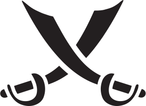

G-213-1
Ви нишпорили під водою, шукаючи скарби, коли до вас підпливли два тритони.
— Вітаю тебе, моряче. Мене звати Джиммі, — представився один з них. — Скажи, що ти шукаєш у цих водах?
— Не знаю, Джиммі, що він тут шукає, але йому щойно випала нагода, яка трапляється лише раз у житті, — сказав інший тритон. — До речі, я Джек.
— Гадаю, ти не помиляєшся, Джеку, — погодився Джиммі. — Глянь на нього. Чоловік має проникливий погляд. Погляд людини, що тямить у багатьох речах.
— Здається, я здогадався, куди ти хилиш, Джиммі. Скажи, ти ж не думаєш, що цей моряк може зацікавитися здоровим способом життя? Не думаєш же, що його може зацікавити чудодійний напій, який чудово долає закрепи й практично не викликає жахливих газів?
— Такого здорового моряка, як цей? Знаєш, Джеку, саме так я і думаю. Чесно.
Через тридцять хвилин ви відпливаєте з меншою кількістю грошей у кишені та непереборним бажанням підправити здоров’я.
Припаси  –2. Візьміть карту 55 «Кораловий сік» з колоди пригод. Заблокуйте дію 1.
–2. Візьміть карту 55 «Кораловий сік» з колоди пригод. Заблокуйте дію 1.
(Повертайтеся до локації)
G-213-2
ПОДІЯ-ПЕРЕХРЕСТЯ. ВЕЛИКА ФАРМАЦЕВТИЧНА КОМПАНІЯ
Ваші міцні легені дозволяли вам довго не дихати під водою, що було доволі доречно, адже ви знайшли дивний диск. Ідеальний круг миготливого світла не більше ніж метр у діаметрі, розташований на вершині рифу, ніби він завжди там був. Він і лякав, і притягував.
A. Плисти до миготливого світла.
(Перейдіть до G-213.2.1)
B. Відкликати команду з води й повернутися на борт корабля.
(Перейдіть до G-213.2.2)
G-213-2-1
Ви опинилися в колі світла й застогнали, коли раптово відчули, що падаєте на дивну підлогу з керамічної плитки. Озирнувшись, ви побачили, що диск тепер висить на білій стіні. Він кудись вас переніс? Ви перелякано озирнулися й побачили табличку над єдиними дверима з кімнати. На ній ви прочитали: «ВОДНІ РЕСУРСИ РЕКСОНУ».
— Мабуть, це ще одна зграя риб або приперся непроханий негоціант, — сказав голос по той бік дверей. — Їй-бо, ніколи б не сказав, що крадіжка води з іншого виміру може бути такою марудною справою!
Двері розчинилися навстіж, і ви побачили чоловіка й жінку, одягнених у все біле. Вони завмерли, зауваживши вас.
— Сандро, не могла б ти передати біологам, що ми маємо для них свіжий взірець, — прошепотів чоловік, не зводячи з вас очей.
Ось тоді ви й згадали, що маєте із собою гарпун. Через п’ять хвилин ви стрибнули назад крізь миготливий диск. Закривавлений, без гарпуна, але ви все-таки поцупили найдорожчий на вигляд скарб, який вам вдалося знайти.
Заблокуйте дію 1. Візьміть карту 71 «Негоціант» з колоди пригод. Якщо інший гравець уже має цю карту, натомість отримайте скарби  +1.
+1.
(Повертайтеся до локації)
G-213-2-2
Ви швидко відпливли геть, хоч і зуміли прихопити скарб, який помітили на зворотному шляху.
Скарби +1. Заблокуйте дію 1.
(Повертайтеся до локації)
G-213-3
Ви знайшли кілька скринь зі скарбами. Усередині кожної з них містилася менша скриня. На щастя, у найменшій скрині справді знайшлися цінні речі!
Скарби +2. Лиха слава  +3. Заблокуйте дію 1.
+3. Заблокуйте дію 1.
(Повертайтеся до локації)
G-213-4
Пірнувши на глибину, ви знайшли статую жінки, повністю зроблену з корала. Ви назвали статую Кралею та підійняли її на ваш корабель. Пізніше ви продали коралову Кралю кларнетисту Карлу за хороші гроші.
Скарби +2. Заблокуйте дію 1.
(Повертайтеся до локації)
G-214
G-214-1
Ви замахнулися, щоб кинути дротик, але він випадково вислизнув з ваших пальців і полетів назад, влучивши в старезного п’яного пірата. Той від несподіванки вистрілив у корчмарку. Бідолашна вдарилася об стільницю, її тіло сповзло на підлогу разом з запаленим сірником, яким вона збиралася розкурити люльку. Труп упав прямо на пляшки з зерновим спиртом, що стояли за шинквасом, і з гучним вибухом рідина загорілася.
— Що сталося? — запитав Ларрі Вайло, коли ви повернулися в човен.
За вашою спиною потужні вибухи стрясали розвалини й довкола розліталися уламки й частини тіл. Пролунав ще один вибух, і від «Очмелілого омара» майже нічого не зосталося.
— Ну, Ларрі, — зітхнули ви. — Не брехатиму. Там збиралися королівські посіпаки. Люто ненавиділи піратів. Хотіли здати нас, тому я просто зробив те, що тре’ було зробити.
— Та ти герой! — радісно вигукнув Ларрі.
Лиха слава +2. Замалюйте 1 зірку  у вашому сузір’ї. Заблокуйте дію 3.
у вашому сузір’ї. Заблокуйте дію 3.
(Повертайтеся до локації)
G-214-2
Ви кинули перший дротик і перелякано завмерли, дивлячись, як той летить мимо мішені просто у відчинене вікно. Десь удалині закричав чоловік.
— Приятелю, — зітхнув корчмар, — ти вибуваєш.
Невдача  +1. Лиха слава –1. Заблокуйте дію 3.
+1. Лиха слава –1. Заблокуйте дію 3.
(Повертайтеся до локації)
G-214-3
Не треба було вам починати гру в акулячі дротики. Не з вашим рівнем майстерності й не проти місцевого чемпіона... До того ж ви ще й напилися до чортиків. Ваш перший дротик влучив просто в голову стариганові, що сидів за метр від вас. На щастя, він був такий же п’янезний, як і ви, тож не зрозумів, що сталося.
— Ха! — засміявся ваш суперник. — Можеш заплатити мені зараз.
Скиньте 1 скарб , якщо це можливо. Лиха слава –2. Заблокуйте дію 3.
(Повертайтеся до локації)
G-215
G-215-1
Ви спокійно грали в акулячі дротики в задній кімнаті, як раптом ваш суперник різко хекнув і, схопившись за груди, упав як мертвий. Збагнувши, що померлий чоловік на вигляд доволі багатий, ви підкликали дівчину з вашої команди, яка пиячила в загальній залі.
— Ти думаєш про те саме, що і я? — запитали ви її.
— Звісно, — кивнула вона. — Ми вкрадемо його труп і вдаватимемо, ніби він живий, щоб отримати можливість жити багатим життям замість нього?
— Що? Ні! Пропоную обчистити його тут і заховати тіло. Що з тобою не так?
— Мені більше подобається моя ідея, — буркнула вона.
Скарби +2. Заблокуйте дію 3.
(Повертайтеся до локації)
G-215-2
Ви були нікудишнім гравцем, але ваші сороміцькі жарти потішили кількох глядачів, хоч ваш суперник уже кидав зловісні погляди. Відвідувачі юрмилися навколо вас, ляскали по спині, сміялися над вашими жартами та штурхали ліктями, коли ви пускали дотепи. Вам навіть зробили невеличкий подаруночок.
Скарби +1. Заблокуйте дію 3.
(Повертайтеся до локації)
G-215-3
Ви кинули виклик місцевому чемпіонові з акулячих дротиків і вразили всю таверну своєю майстерністю.
— Бігме, то був файний матч! — похвалив вас суперник. — Я твій боржник, усе чесно!
Скарби +1. Заблокуйте дію 3.
(Повертайтеся до локації)
G-216
G-216-1
Ви легко перемогли. Незабаром до вас підійшла підозрілого вигляду молода дівчина. Вона нервово озирнулася, перш ніж заговорити.
— Хочете вивести вашу гру в акулячі дротики на геть новий рівень? Я маю очищений порошок з акулячих дуп. Пара доріжок — і ви почнете перемагати наліво й направо.
— Я й так перемагаю наліво й направо, — зауважили ви.
— Шляк би то трафив, — простогнала вона. — Паскудна робота.
— Чому б тобі не приєднатися до моєї команди? — запитали ви. — Це ліпше, ніж продавати допінг у цій глушині.
— Дякую! — зраділа дівчина, приставши на вашу пропозицію. — Я зможу заробити набагато більше, продаючи на піратському кораблі.
— Та я не те тобі пропоную! — гаркнули ви. — Ти можеш стати піраткою, а не продавати порошок з дуп. Дійшло?
— Дійшло, — збрехала вона.
Влучність  +1. Команда
+1. Команда  +1. Перекиди
+1. Перекиди  +1. Заблокуйте дію 3.
+1. Заблокуйте дію 3.
(Повертайтеся до локації)
G-216-2
Ви кинули виклик місцевому чемпіонові з акулячих дротиків і вразили всю таверну своєю майстерністю.
— Бігме, то був файний матч! — похвалив вас суперник. — Я твій боржник, усе чесно!
— Бравісимо! — крикнув один з глядачів.
— Усім випивку коштом закладу! — проревів власник, і натовп навколо вас криком підтримав його.
Скарби +2. Лиха слава +3. Заблокуйте дію 3.
(Повертайтеся до локації)
G-216-3
Ваш перший дротик влучив просто в яблучко. Другий дротик вибив перший. Третій влучив у кінець другого.
— Хто не виграв, той не їсть, — засміялися ви.
— Добре, добре, — простогнав ваш суперник. — Корчмарю! Три миски курячого супу для цих селюків! — він указав на вас і двох піратів, що вболівали за вас.
— Ха! — засміялися ви. — Треба ще кілька мисок!
— Зачекай, — сказав ваш суперник. — Я обіцяв купити вечерю для тебе і твоїх друзів. І все!
— Так і було, друзяко! Дозволь познайомити тебе з командою мого корабля.
І ось тоді ви відкрили йому, що кожен, хто втиснувся в переповнену загальну залу таверни — матрос на вашому кораблі.
Ваш суперник подумки порахував, скільки це все йому коштуватиме, і зблід.
— З-з-зачекай, — забелькотів він.
— Обережно! — застерегли ви. — Кожен з них голодний. І добре озброєний.
Припаси +3. Команда +1. Заблокуйте дію 3.
(Повертайтеся до локації)
G-225
G-225-1
Ви побачили у воді дивні темні обриси й покликали на допомогу кількох моряків. Скориставшись мотузкою і лебідкою, ви витягнули таємничий об’єкт... На ваш подив, ним виявилася ляклива акула. Ці огидні трупожери з океанського дна доволі сумирні, і часто в їхніх шлунках можна було знайти проковтнуті ними незвичайні предмети. Ви розрізали величезну жирну рибину й знайшли в її череві чимало консервних бляшанок з їжею. А ще блискучий скарб.
— Природа дивовижна, — захоплено сказали ви, — і я дивуюся їй щоразу, коли розрізаю чи рубаю кого-небудь на шматки.
Припаси +3. Скарби +1.
(Повертайтеся до локації)
G-225-2
Ви знайшли у воді невеличку скриню.
Скарби +1. Виберіть іншого гравця, що також отримає скарб +1. Заблокуйте дію 3.
(Повертайтеся до локації)
G-225-3
Ви якраз замислилися над тим, щоб завершити полювання, аж раптом почули гучне клацання, яке означало, що ваша пастка спрацювала. Витягнувши її з води, ви зраділи, бо у ваші сіті потрапила не тварина, а діжка з ромом «Веселий король». Справді королівський вилов! Усі втішилися, і, аби ще більше порадувати команду, ви наказали негайно відкоркувати діжку. Настрій на кораблі значно поліпшився, попри важке похмілля, від якого всі мучилися наступного дня.
Невдоволення –1. Лиха слава +3. Усі гравці: невдача +1. Заблокуйте дію 3.
(Повертайтеся до локації)
G-225-4
— Тут нема чого шукати, — буркнули ви й сердито кинули камінь у воду. Через кілька секунд на поверхню виринув мертвий горбатий кит з помітною ґулею на голові.
Припаси +5. Заблокуйте дію 3.
(Повертайтеся до локації)
G-226
G-226-1
ПОДІЯ-ПЕРЕХРЕСТЯ. МІСЦЕ СПОЧИНКУ АНАБЕЛЬ
На морському дні ви знайшли старий корабель під назвою «Пронизливий світанок». Цей корабель належав Анабель Монт, зниклій дочці короля. Пірнувши глибше, ви, на щастя, змогли відшукати її каюту біля каюти капітана. Скелет дівчини лежав на ліжку, але вас більше зацікавили дві скрині неподалік. Однак ви зможете взяти лише одну з них.
A. Узяти скриню, покриту дивними символами.
(Перейдіть до G-226.1.1)
B. Узяти скриню, на кришці якої вирізьблено зображення великого самоцвіту.
(Перейдіть до G-226.1.2)
G-226-1-1
У скрині було кілька журналів, що добре збереглися завдяки герметичності скрині. На сторінках ви натрапили на один цікавий уривок: «Батько не схвалює моїх подорожей до Вечірньої зорі. Він вважає, що я паплюжу роботу, яку наша родина почала багато століть тому. Але я кажу, що він дурень, бо не розуміє, які знання тут можна отримати».
— Не пощастило, — зауважив ваш приятель, побачивши книжки, — але я готовий обміняти їх на будь-який з моїх скарбів. Колись я навчуся читати, і ці книжки мені знадобляться.
Ви охоче погодилися.
Перекиди +1. Скарби +1. Заблокуйте дію 3.
(Повертайтеся до локації)
G-226-1-2
Ви відкрили скриню, але знайшли в ній тільки морську воду та скелет риби. Розсердившись, ви грюкнули кришкою.
— О, а така нічогенька на вигляд, — один з матросів указав кивком на скриню.
— Міняємося? — запропонували ви.
— Які питання! — радісно закричав він.
Ви обмінялися з ним і квапливо забралися геть.
Лиха слава +2. Скарби +1. Заблокуйте дію 3.
(Повертайтеся до локації)
G-226-2
Ви виявили двох тритонів, що сплелися в палких обіймах. Перелякані закохані благали вас нікому нічого не розповідати, бо вони належали до розсварених родин, а ті порвали б одна одну на шматки, якби дізналися про таємні відносини. Ви погодилися мовчати в обмін на винагороду, а потім швидко натрапили на групу тритонів, що розшукувала своїх родичів. Вони теж горіли бажанням запропонувати вам винагороду за відомості про місцеперебування коханців.
Скарби +1. Заблокуйте дію 3.
(Повертайтеся до локації)
G-226-3
Ви натрапили на моржа, що встановлював пастки й вишукував скарби... Доволі незвично для моржа. Тож ви вирішили відступити та вдати, що нічого не бачили. Заблокувати дію 3.
(Повертайтеся до локації)
G-226-4
Нишпорячи каютою капітана на борту затонулого корабля, ви знайшли дуже детальну модель цього корабля. Дивно, але модель зображувала корабель таким же затонулим, яким він був на цю мить. Страшенно збентежений, ви розламали модель і в крихітній капітанській каюті знайшли ще меншу версію корабля. Повернувши загадкову знахідку на місце, ви поспішили на свій корабель, де наступні пів години провели в молитві.
Невдача +2. Перекиди +2. Заблокуйте дію 3.
(Повертайтеся до локації)
G-237
G-237-1
Черпаючи відром зачаровану воду з вогниками, ви зауважили дельфіна, що заплутався у старій рибальській сіті. Ви звільнили бідолаху, і той якийсь час радісно кружляв навколо, перш ніж підплисти й усміхнутися вам. — Дякую, пане примате! — протріскотів дельфін. — Твоя добра справа не забудеться! — Що за?.. — здивовано вигукнули ви, але дельфін уже поплив. Виберіть три варіанти з дії 3. Запишіть «Друг дельфінів» у судновий журнал. Заблокуйте дію 3.
(Повертайтеся до локації)
G-237-2
Вогники танцювали у вашій руці, лоскочучи долоні, коли вам вдавалося їх схопити. Ви зауважили, що коли інші члени команди ловили вогники, то ті поступово набували форми речей, потрібних на кораблі. Вам стало цікаво, а на що перетвориться вогник у ваших руках? Ваш вогник не поспішав перетворюватися, але зрештою почав мінятися, збільшуючись до таких розмірів, що ви вже не могли втримати його в руках. Ви здивовано витріщалися на те, як вогник перетворився на дорослу людину. Коли сяйво загасло, чоловік розплющив очі й глибоко вдихнув. Плавав він поганенько, тож вам довелося втримувати його на поверхні, але решта піратів поспішила вам на допомогу. Спершу ніхто не довіряв людині-вогнику, але з часом він поступово став корисним членом команди.
Команда +1. Виберіть три варіанти з дії 3. Заблокуйте дію 3.
(Повертайтеся до локації)
G-237-3
Ви вхопили вогника, який тут же пискнув.
— Лоскітно! — засміявся він.
— Та не ворушись! — буркнули ви, намагаючись утримати в руках верткого чарівного вогника.
— Ха-ха-ха! — реготав він. — Перестань! Перестань! Досить!
— Ніхто тебе не лоскоче! — гаркнули ви. — Вгамуйся!
Але мерехтіння не припинялося, а його регіт ставав дедалі гучнішим, аж поки — бах! — він не вибухнув у ваших руках купою блискіток, що швидко згасли.
Члени команди від щирого серця посміялися над оповідкою про те, як ви залоскотали до смерті чарівний вогник.
Лиха слава –2. Невдоволення –2. Заблокуйте дію 3.
(Повертайтеся до локації)
G-238
G-238-1
Разом з кількома матросами ви повеслували до шлюпки, що світилася моторошним синім сяйвом. Наблизившись, ви побачили в ній кількох людей, кожен з яких тримав ліхтар з дивним синім полум’ям. У їхніх витріщених очах мерехтіли сині відблиски.
— Гм-м, чуєте, а що ви тут робите посеред океану? — запитали ви.
Дивні люди разом промовили одне дивне слово, й у вас і всієї вашої команди раптом розболілися животи. Ви швидко повернулися на корабель.
Невдача +2. Заблокуйте дію 4.
(Повертайтеся до локації)
G-238-2
Ви підвеслували до човна й побачили в ньому старигана з кількома припасами.
— Здоров, старий! — наблизившись, крикнули ви.
— Ніж у лице! — заверещав він у відповідь.
— Що-що? — здивовано перепитали ви.
Тоді старий дістав ножа й метнув його вам у лице. Ви полетіли за борт, старий швидко повеслував геть, а команда кинулася вас рятувати.
На кораблі Штопало зумів витягти з вас ножа й зашити рану на лиці. Добра новина — ви більше не страждатимете від гаймориту. Погана новина — з вашого носа тепер постійно литиме.
Лиха слава –2. Викресліть решту всіх незамальованих клітинок вашої зухвалості  . Ви не можете отримувати зухвалість до кінця гри. Заблокуйте дію 4.
. Ви не можете отримувати зухвалість до кінця гри. Заблокуйте дію 4.
(Повертайтеся до локації)
G-238-3
Ви підвеслували до човна й вельми здивувалися, знайшовши там лише напівголодне кошеня, що жалібно нявчало.
— І що нам з ним робити? — зітхнула Петті Безштанько. — Воно ж таке маленьке, що його навіть добре не засмажиш.
— Деякі люди тримають їх як домашніх пестунів, — відповіли ви їй та простягнули руку до кошеняти.
Однак звіряткові не кортіло ставати домашнім улюбленцем брудного пірата, і його кігті вп’ялися у вашу руку, здираючи шкіру. Закричавши від болю й несподіванки, ви впали у воду, відштовхнувши човен з кошеням. Після цієї події ваш авторитет серед піратів аж ніяк не зріс.
Лиха слава –2. Напишіть «Жертва кошеняти» біля вашого піратського імені на листі пірата як додаткове прізвисько. Заблокуйте дію 4.
(Повертайтеся до локації)
G-239
G-239-1
Разом з кількома матросами ви повеслували до шлюпки, що світилася моторошним синім сяйвом. Наблизившись, ви побачили в ній кількох людей, кожен з яких тримав ліхтар з дивним синім полум’ям. У їхніх витріщених очах мерехтіли сині відблиски.
— Чуєте, а що ви тут робите посеред океану? — запитали ви.
— До нас, любі друзі! — одноголосно відповіли дивні люди. — Підпливайте до нас і розділіть з нами світло.
— Ні, нас таке не цікавить, — відповіли ви. — Мерщій! Усі назад на корабель!
Але кілька матросів усе-таки стрибнули у воду й попливли до моторошної шлюпки.
Команда –1. Заблокуйте дію 4.
(Повертайтеся до локації)
G-239-2
Ви підвеслували до човна й побачили в ньому старигана з кількома припасами.
— Здоров, старий! — наблизившись, крикнули ви.
— Ніж у лице! — заверещав він у відповідь.
— Що-що? — здивовано перепитали ви.
Тоді стариган дістав ножа та, повагавшись лише секунду, метнув його. Цієї секунди вистачило, щоб ви пригнулися, а ніж зі свистом пролетів повз вас і впав у воду.
— Що ти витворяєш? — закричали ви, але стариган несамовито заверещав і почав відчайдушно гребти геть. — Забудьте про старого бовдура, — сказали ви іншим. — Повернімося на корабель.
Лиха слава +1. Перекиди +1. Заблокуйте дію 4.
(Повертайтеся до локації)
G-239-3
Ви підвеслували до човна й вельми здивувалися, знайшовши там лише напівголодне кошеня, що жалібно нявчало.
— І що нам з ним робити? — зітхнула Петті Безштанько. — Воно ж таке маленьке, що його навіть добре не засмажиш.
Але на кораблі ви з Книдлем довели їй, що вона помилялася, зготувавши смачну перекуску.
Перекиди +1. Заблокуйте дію 4.
(Повертайтеся до локації)
G-240
G-240-1
Разом з кількома матросами ви повеслували до шлюпки, що світилася моторошним синім сяйвом. Наблизившись, ви побачили в ній кількох людей, кожен з яких тримав ліхтар з дивним синім полум’ям. У їхніх витріщених очах мерехтіли сині відблиски.
— Чуєте, а що ви тут робите посеред океану? — запитали ви.
— Ми дякуємо синьому полум’ю, — одноголосно виголосили вони, — за те, що воно подарувало нам більше, ніж треба.
— Файно, файно, — відповіли ви. — А не хочете поділитися з нами деякими з цих подарунків?
І дивні люди віддали вам усе, що було у шлюпці, крім дивних ліхтарів.
Припаси +2. Скарби +1. Заблокуйте дію 4.
(Повертайтеся до локації)
G-240-2
Ви підвеслували до човна й побачили в ньому старигана з кількома припасами.
— Здоров, старий! — наблизившись, крикнули ви.
— Ніж у лице! — заверещав він у відповідь.
— Що-що? — здивовано перепитали ви.
Тоді стариган дістав ножа й відвів руку, щоб метнути його у вас. Але щось змусило його зупинитися.
— Гей! — крикнули ви, здійнявши руки вгору. — Тільки без насильства! Ми подумали, тобі потрібна поміч!
Він опустив ножа.
— Дуже вам вдячний, незнайомці! — крикнув він у відповідь. — Вибачте за грубе вітання. Я не пив уже кілька днів, і моя макітра геть розсохлася.
— Усе добре, — запевнили ви його. — Тоді ліпше буде, коли ми доставимо тебе на наш корабель, дамо води й обстежимо.
Лиха слава +1. Команда +1. Заблокуйте дію 4.
(Повертайтеся до локації)
G-240-3
Ви підвеслували до човна й вельми здивувалися, знайшовши там лише напівголодне кошеня, що жалібно нявчало.
— І що нам з ним робити? — зітхнула Петті Безштанько. — Воно ж таке маленьке, що його навіть добре не засмажиш.
— Деякі люди тримають їх як домашніх пестунів, — відповіли ви їй та простягнули руку до кошеняти.
Воно радісно побігло до вас, і ви повернулися з ним на корабель. Згодом кошеня відновило сили й перетворилося на прекрасного компаньйона. Однак наступного разу, коли корабель потрапив у шторм, ви збагнули, що кішці не місце на кораблі. З великою неохотою ви віддали свого улюбленця маленькій дитині, яку зустріли в наступному порту. Вам шкода було розставатися з кішкою, але ви були щасливі, що тваринку будуть любити й оберігати.
Перекиди +2. Заблокуйте дію 4.
(Повертайтеся до локації)
G-241
G-241-1
Разом з кількома матросами ви повеслували до шлюпки, що світилася моторошним синім сяйвом. Наблизившись, ви побачили в ній кількох людей, кожен з яких тримав ліхтар з дивним синім полум’ям. У їхніх витріщених очах мерехтіли сині відблиски.
— Гм-м, чуєте, а що ви тут робите посеред океану? — запитали ви.
— Ми дякуємо синьому полум’ю, — одноголосно виголосили вони, — за те, що воно подарувало нам більше, ніж треба.
— Файно, файно, — відповіли ви перед тим, як вистрілити кожному з них у голову.
Ви ж наче якісь пірати, правда ж? Ви швидко забрали їхні речі, хоча й викинули моторошні ліхтарі за борт.
Корпус +1. Припаси +2. Скарби +1. Заблокуйте дію 4.
(Повертайтеся до локації)
G-241-2
Ви підвеслували до човна й побачили в ньому старигана з кількома припасами.
— Здоров, старий! — наблизившись, крикнули ви.
— Ніж у лице! — заверещав він у відповідь.
— Що-що? — здивовано перепитали ви.
Тоді стариган дістав ножа й відвів руку, щоб метнути його у вас. Але щось змусило його зупинитися.
— Гей! — крикнули ви, здійнявши руки вгору. — Тільки без насильства! Ми подумали, тобі потрібна поміч!
Він опустив ножа.
— Дуже вам вдячний, незнайомці! — крикнув він у відповідь. — Вибачте за грубе вітання. Я не пив уже кілька днів, і моя макітра геть розсохлася.
— Усе добре, — запевнили ви його. — Тоді ліпше буде, коли ми доставимо тебе на наш корабель, дамо води й обстежимо.
Коли ви допомогли йому перелізти у ваш човен, він вручив вам важкий мішок і сказав:
— Вважайте це платою за мою погану поведінку та вдячністю за порятунок!
Лиха слава +1. Команда +1. Скарби +1. Заблокуйте дію 4.
(Повертайтеся до локації)
G-241-3
Ви підвеслували до човна й вельми здивувалися, знайшовши там лише напівголодне кошеня, що жалібно нявчало.
— І що нам з ним робити? — зітхнула Петті Безштанько. — Воно ж таке маленьке, що його навіть добре не засмажиш.
— Деякі люди тримають їх як домашніх пестунів, — відповіли ви їй та простягнули руку до кошеняти.
Воно радісно побігло до вас, і ви повернулися з ним на корабель. Згодом кошеня відновило сили й перетворилося на прекрасного компаньйона. Однак наступного разу, коли корабель потрапив у шторм, ви збагнули, що кішці не місце на кораблі. Тож коли ви знайшли острів, на якому жили тисячі щасливих котів, ви подумали, що це, мабуть, ідеальне місце для вашого хвостатого друга. Ви зронили кілька сліз, коли відпливали, залишивши друга на острові. Ви й гадки не мали, що менше ніж через рік ваша кішка зможе стати законним правителем острова, а її нащадки також пануватимуть там протягом століть.
Перекиди +2. Невдоволення –1. Заблокуйте дію 4.
Киньте кістку, щоб визначити королівське ім’я вашої кішки.
A. 1
(Перейдіть до G-241.3.1)
B. 2
(Перейдіть до G-241.3.2)
C. 3
(Перейдіть до G-241.3.3)
D. 4
(Перейдіть до G-241.3.4)
E. 5
(Перейдіть до G-241.3.5)
F. 6
(Перейдіть до G-241.3.6)
undefined. 7
(Перейдіть до G-241.3.7)
undefined. 8
(Перейдіть до G-241.3.8)
undefined. 9
(Перейдіть до G-241.3.9)
undefined. 10
(Перейдіть до G-241.3.10)
undefined. 11
(Перейдіть до G-241.3.11)
undefined. 12
(Перейдіть до G-241.3.12)
G-241-3-1
Королівське ім’я вашої кішки — королева Муркотунка Довговуса.
(Повертайтеся до локації)
G-241-3-2
Королівське ім’я вашої кішки — герцогиня Гладкошерстна Тихий Нявк.
(Повертайтеся до локації)
G-241-3-3
Королівське ім’я вашої кішки — принцеса М’яколапка з Няву.
(Повертайтеся до локації)
G-241-3-4
Королівське ім’я вашої кішки — баронеса Кривавий Кіготь, Шипунка.
(Повертайтеся до локації)
G-241-3-5
Королівське ім’я вашої кішки — королева Божевільнохвістка, Божественно м’яка.
(Повертайтеся до локації)
G-241-3-6
Королівське ім’я вашої кішки — герцогиня Голоднопуза, леді М’яв.
(Повертайтеся до локації)
G-241-3-7
Королівське ім’я вашої кішки — принцеса Лизолапка Огрядна.
(Повертайтеся до локації)
G-241-3-8
Королівське ім’я вашої кішки — баронеса Сонцелюбка, Повелителька сонячних променів.
(Повертайтеся до локації)
G-241-3-9
Королівське ім’я вашої кішки — королева Риболюбка, Жах тунців.
(Повертайтеся до локації)
G-241-3-10
Королівське ім’я вашої кішки — герцогиня Затишку, Милосердна.
(Повертайтеся до локації)
G-241-3-11
Королівське ім’я вашої кішки — принцеса Виття, Нічна мандрівниця.
(Повертайтеся до локації)
G-241-3-12
Королівське ім’я вашої кішки — баронеса Кривокіготь, Руйнівниця колін.
(Повертайтеся до локації)
G-249
G-249-1
Чи є у грі карта пригоди «Шкарпетка медіума Боба»?
A. Так
(Перейдіть до G-249.1.1)
B. Ні
(Перейдіть до G-249.1.2)
G-249-1-1
Виберіть один з цих варіантів:
Скарби +1.
Припаси +3.
Заблокуйте дію 4.+1.
Припаси +3.(Повертайтеся до локації)
G-249-1-2
Здоровезна хвиля відкинула вас від корабля, і через кілька хвилин ви залишилися один, дрейфуючи серед шторму. Зрештою шторм угамувався, але ваш корабель так і не з’явився. На третій день, коли ви ледь живий лежали в човні, у вашій голові пролунав голос: — Здоров був, друже! Озирнувшись, ви побачили сіру шкарпетку, що плавала у воді біля вас. — Я шкарпетка медіума Боба, — сказала шкарпетка. — Ми можемо бути друзями? Нерозлучними друзями? І ти називатимеш мене Бобом, га? — Ну, здоров, Бобе, — відповіли ви. — Добре, будьмо друзями! — Чудово! — закричав Боб. — Будь такий добрий, візьми мене й, не знаю, натягни собі на голову? Коли корабель найшов вас кілька годин по тому й ви ступили на борт, команда перелякано закричала. — Шо то? — витиснув із себе Джо Подагра. — Якесь страхіття! — Морська мінога, — відповів старпом. — Висмоктує з нього всі соки. — Йой, та не галасуйте так через дрібниці, — відмахнулися ви, витираючи кров, що текла по вашому обличчю. — Ви тільки гляньте, я через вас потію, немов на пательні! Візьміть карту 8 «Шкарпетка медіума Боба» з колоди пригод. Заблокуйте дію 4.
(Повертайтеся до локації)
G-249-2
Нишпорячи каютою капітана на борту затонулого корабля, ви знайшли дуже детальну модель цього корабля. Дивно, але модель зображувала корабель таким же затонулим, яким він був на цю мить. Страшенно збентежений, ви розламали модель і в крихітній капітанській каюті знайшли ще меншу версію корабля. Повернувши загадкову знахідку на місце, ви поспішили на свій корабель, де наступні пів години провели в молитві.
Невдача +2. Перекиди +2. Заблокуйте дію 4.
(Повертайтеся до локації)
G-249-3
Ви закинули сітку, але вам бракувало сили витягнути її назад.
— Там щось здоровезне! — крикнули ви, і пів десятка моряків кинулися вам на підмогу.
Вам шістьом довелося помучитися, проте через кілька хвилин ви таки витягли на палубу живу корову.
— І шо ти скажеш! — здивувалися ви. — Бідолашна Бессі, мабуть, випала за борт, коли її корабель тонув. Ото щасливиця!
— Була щасливицею, — поправив старий Книдель, зваживши в руці свого тесака. — А тепер відійди.
Ви послухалися.
— Що він збирається зробити з цією коровою? — запитав Простак Тім Маєрз зі сльозами в очах.
Ви відвели Простака Тіма на корму й запитали:
— Ти ж дуже любиш гамбургери, правда, Тіме?
— Авжеж люблю, — погодився він.
— Ну, так ся стало, шо та корова знає, де є купа гамбургерів, а також стейки, миски холодцю, хляки та смачний ростбіф. Вона покаже старому Книдлю, де це все знайти, а потім попливе додому.
— Яка файна корова! — зрадів Тім, тоді як за вашими спинами перелякане мукання обірвалося глухим звуком удару.
Припаси +3. Невдоволення –1. Заблокуйте дію 4.
(Повертайтеся до локації)
G-249-4
Ви витягнули з води величезну акулу, і вся команда подумки вже смакувала суп з акулячих плавників. Звірюка була просто величезною, і коли ви розпороли їй черево, звідти випав восьминіг, що своїми мацаками тримав скриню зі скарбами.
— Не вдаватиму, ніби розумію, як це сталося, — сказали ви, — але все одно заберу собі ці скарби.
Припаси +3. Скарби +1. Заблокуйте дію 4.
(Повертайтеся до локації)
G-261
G-261-1
ПОДІЯ-ПЕРЕХРЕСТЯ. ТРИМАЙТЕСЬ!
Жахливий шторм нахилив корабель на лівий борт, збиваючи моряків з ніг. Більшості вдалося втримати рівновагу, але Смішко Ґейб Маєрз полетів за борт і лише чудом встиг ухопитися за поручні. Ви знали, що коли він упаде у воду, то загине, адже він повний бовдур. Утім, як і всі бовдури, він був непоганим хлопцем, тож ви кинулися йому на допомогу. Ще один порив вітру збив вас із ніг і перекинув за борт у тому місці, де висів Ґейб. Однією рукою ви вчепилися за поручні, а іншою пробували витягти бідолаху. Ви не знали, як довго ще зможете втримувати його, не впавши в океан разом з ним.
A. Продовжувати триматися й гукати на допомогу.
(Перейдіть до G-261.1.1)
B. Відпустити Смішка Ґейба й вибратися на палубу.
(Перейдіть до G-261.1.2)
G-261-1-1
Виконайте перевірку зухвалості .
A. 1–8
(Перейдіть до G-261.1.1.1)
B. 9+
(Перейдіть до G-261.1.1.2)
G-261-1-1-1
Ви волали, але ніхто не чув ваших благань. Збагнувши, що відбувається, Смішко Ґейб печально кивнув на прощання, розтиснув пальці й полетів у бурхливі води.
Збільште значення лічильника Б на 1. Невдача +1. Заблокуйте дію 1.
(Повертайтеся до локації)
G-261-1-1-2
Вам вдалося привернути увагу команди, і вас обох витягли на борт.
Перекиди +1. Невдоволення –1. Заблокуйте дію 1.
(Повертайтеся до локації)
G-261-1-2
— Без образ, Ґейбе! — крикнули ви перед тим, як відпустити його руку. Ви легко видерлися на борт і повернулися до роботи на кораблі. Збільште значення лічильника Б на 1. Заблокуйте дію 1.
(Повертайтеся до локації)
G-263
G-263-1
Доклавши всіх зусиль, ви таки змогли вибратися зі шторму. Ларрі Вайло так зрадів, що пережив це випробування, що подарував вам сімейну реліквію, яку він украв у чужої сім’ї.
Лиха слава +3. Скарби +1. Перемістіть корабель на 1 клітинку.
(Повертайтеся до локації)
G-273
G-273-1
Горизонт був чорнезний як смола, і від споглядання океану, що розчинявся у темряві, у вас запаморочилося в голові. Відвернувшись, ви побачили себе біля бізань-щогли з немовлятами на руках.
— Що ти робиш? — крикнули ви собі, але у відповідь почули хіба моторошний регіт.
За годину вас знайшли в трюмі, де ви тремтіли від страху й бурмотіли нісенітниці.
Невдоволення +1. Невдача +1. Заблокуйте дію 2.
(Повертайтеся до локації)
G-273-2
Ви деякий час вдивлялися в темряву, і перед вами поволі почав формуватися образ. Це була... ваша бабуся? Її суворий погляд пронизав вас наскрізь, і ви відчули, що вона глузує з вас. Її кпини вражали вас до глибини душі, поки ваше терпіння не луснуло й ви не втекли геть.
Невдача +2. Заблокуйте дію 2.
(Повертайтеся до локації)
G-273-3
Ви вглядались у воду й вам таки вдалося розгледіти в ній власне відображення. Однак ви закричали, коли лезо меча зненацька проштрикнуло обличчя відображення, ніби хтось ударив вас ззаду. Ви швидко обернулися, але там нікого не було. Ви поспішили геть, шокований видінням.
Невдача +2. Заблокуйте дію 2.
(Повертайтеся до локації)
G-274
G-274-1
Ви дивилися на чорні води й помітили на обрії щось вельми схоже на світло. Воно недовго помиготіло, як раптом вас охопило бажання вкоротити собі віку. На щастя, пильна піратка з вашої команди схопила вас за руку, перш ніж ви встигли кинутися за борт.
— Аяй! — крикнула вона. — Що на тебе найшло?
Перекиди +1. Заблокуйте дію 2.
(Повертайтеся до локації)
G-274-2
Ви деякий час вдивлялися в темряву й перед вами поволі почав формуватися образ. Поступово перед вами з’явилося обличчя вашого друга дитинства. Він був таким молодим. Таким щасливим. Ви пригадали, яку відчували радість, бігаючи та граючи разом. Однак потім ви згадали той момент, коли друг зрадив вас, образивши перед іншими дітьми. Коли диявольська мана закінчилася, вам стало занадто соромно дивитися кому-небудь в очі.
Лиха слава –4. Заблокуйте дію 2.
(Повертайтеся до локації)
G-274-3
Ви вдивлялися в розбурхані чорні води й вони немов розступилися перед вашим поглядом. Ви не припиняли вдивлятися все глибше й глибше. Океан у цьому місці не дуже глибокий, але, як не дивно, ваш погляд пронизував нескінченні глибини чорних вод, наче ви пливли над найглибшою точкою океану. І там, в океанській утробі, ви побачили його — зогнилого короля, прикутого до якоря з холодного заліза. Він глянув на вас порожніми очними ямками й завив від гніву.
— Командире? — запитав Ларрі Вайло, проганяючи ваше видіння. — Що з вами?
— Нічого страшного, — відповіли ви. — Просто замислився.
Невдача +1. Заблокуйте дію 2.
(Повертайтеся до локації)
G-275
G-275-1
Чорнота обрію огорнула вас, і ви відчули, як ваш пульс б’ється у вухах. Десь закричала чайка, і її пронизливий голос скидався на скрип старезних дверей, що були зачинені цілу вічність.
— Скоро, — прошепотіли ви, хоч і не знали навіщо.
Перекиди +2. Заблокуйте дію 2.
(Повертайтеся до локації)
G-275-2
Ви деякий час вдивлялися в темряву й перед вами поволі почав формуватися образ. Ви впізнали обличчя вашого дантиста. Він сварив вас за те, що ви не користувалися зубною ниткою. Через те йому довелося виривати вам зуби. А ще він застеріг вас, що коли ви не почнете користуватися зубною ниткою, то до двадцяти семи років узагалі лишитеся без зубів. Спершу вам було страшенно соромно, але потім ви всміхнулися, згадавши, що вам далеко за двадцять сім й у вас залишилося троє майже здорових зубів. А на маєш!
Перекиди +1. Лиха слава +2. Заблокуйте дію 2.
(Повертайтеся до локації)
G-275-3
Ви вглядалися у воду й вам таки вдалося розгледіти в ній власне відображення.
— Агов, командире! Що там у вас? — запитав Рональд Джонс, найненависніший член вашої команди.
Його відображення з’явлилося біля вашого.
— Чуєте, — розпочав він, — Я маю тут трохи скарг, якими хотів би поділитися з вами. Усього їх тридцять дві штуки, і я поскладав їх у порядку важливості, від найменш до найбільш важливої. Насамперед я хотів би, щоб люди на цьому кораблі почали притримувати двері одне для одного. Проста ввічливість. По-друге...
Ви дивилися, як ваше відображення розвернулося й ухопило Рональда за горлянку. Ваше відображення стискало й стискало її, поки обличчя Рональда не стало химерно пурпуровим. Ви стиснули горлянку так сильно, що його голова захиталася, а потім відпала, бризнувши кривавим струменем. Ви зітхнули та струснули головою.
— Рональдику, хлопчику, може, якось іншим разом, га? — запропонували ви й пішли геть.
— Скарга номер шість: я хочу, щоб люди перестали йти від мене, — проскиглив він.
Перекиди +1. Заблокуйте дію 2.
(Повертайтеся до локації)
G-276
G-276-1
Ви дивилися вниз, у нескінченну чорну глибину вод. — Шо? — запитав вас один із членів команди. — Ти про шо? — здивовано відповіли ви. — Я чув твоє бурмотіння. Якісь дивні та збочені слова. Таке, ніби заклинання старої відьми. — Тобі причулося, — обірвали його ви. — Лишися мене. Ви пішли, сподіваючись, що ніхто не зауважить, що ви тримали за спиною. Візьміть карту 36 «Дар безодні» з колоди пригод. Заблокуйте дію 2.
(Повертайтеся до локації)
G-276-2
Ви деякий час вдивлялися в темряву й перед вами поволі почав формуватися образ. Ви побачили обличчя вашого першого кохання, що наче з тугою дивилося на вас з іншого кінця великих лук. Раптово перед вашими очима стрімко пролетіла низка видінь чудесного життя, яке ви могли провести разом, якби все склалося інакше й обставини дозволили вам зберегти кохання. Після того як видіння скінчилися, ви відчули великий жаль. Пізніше ви розповіли про це все кільком морякам. Коли вони зауважили, що таке життя було б неймовірно нудним і передбачуваним, вам стало значно легше на душі.
Перекиди +2. Лиха слава +3. Заблокуйте дію 2.
(Повертайтеся до локації)
G-276-3
Ви вдивлялися в розбурхані чорні води й вони немов розступилися перед вашим поглядом. Ви не припиняли вдивлятися все глибше й глибше. Океан у цьому місці не дуже глибокий, але, як не дивно, ваш погляд пронизував нескінченні глибини чорних вод, наче ви пливли над найглибшою точкою океану. І там, в океанській утробі, ви побачили його — усміхнене обличчя Донні Додо, талісмана «Пончиків Донні».
— Гарного дня і смачних пончиків! — цвірінькнула вам пташка, точнісінько як у рекламі, яку ви бачили на стінах будівель на материку.
— Треба вибиратися з цих вод! — закричали ви.
Перекиди +1. Заблокуйте дію 2.
(Повертайтеся до локації)
G-277
G-277-1
Стоячи на палубі, ви спостерігали, як чорна вода зливалася з чорним небом. Вони немов притягували вас, змушуючи тремтіти. Аж раптом крізь хмари пробилося сонце, слабкими променями нагадуючи про своє існування. З бозна-якої причини вас переповнило передчуття, що вас ще чекає чимало великих справ. Отримайте 1 будь-яке вміння. Заблокуйте дію 2.
(Повертайтеся до локації)
G-277-2
Ви деякий час вдивлялися в темряву й перед вами поволі почав формуватися образ. Ви побачили обличчя демона, й він заговорило з вами. Демон пообіцяв дати вам усе, про що ви завжди мріяли, і якщо ви погодитеся, то отримаєте все цілком безплатно. Ну, може, комусь іншому доведеться заплатити за це, але вам не варто було хвилюватися, адже ніхто ніколи не дізнається, що це сталося через вас. Отже, від вас була потрібна тільки згода.
Ви можете замалювати до 3 зірок у вашому сузір’ї. За кожну зірку, яку ви замалюєте, виберіть іншого гравця: невдача +1. Заблокуйте дію 2.
(Повертайтеся до локації)
G-277-3
ПОДІЯ-ПЕРЕХРЕСТЯ. ЗАТОНУЛІ БАЖАННЯ
Ви вдивлялися в розбурхані чорні води й вони немов розступилися перед вашим поглядом. Ви не припиняли вдивлятися все глибше й глибше. Океан у цьому місці не дуже глибокий, але, як не дивно, ваш погляд пронизував нескінченні глибини чорних вод, наче ви пливли над найглибшою точкою океану. І там, в океанській утробі, ви побачили його — зогнилого короля, прикутого до якоря з холодного заліза. Він глянув на вас порожніми очними ямками й завив від гніву. Зненацька у вашій голові пролунав моторошний голос. — Чого ти хочеш? — прохрипів він.
A. — Та ну-бо, не турбуйся про це.
(Перейдіть до G-277.3.1)
B. — Гадаю, доволі багато.
(Перейдіть до G-277.3.2)
C. — Усього!
(Перейдіть до G-277.3.3)
G-277-3-1
— Та ну-бо, не турбуйся про це, — сказали ви, намагаючись видаватися байдужим. — Ти можеш отримати все! — наполягав хрипкий голос. — Дякую, у мене все добре. Хай там як, але ще раз дякую. І ви швидко поспішили геть, сподіваючись ніколи більше не почути цей голос. Отримайте 1 будь-яке вміння. Заблокуйте дію 2.
(Повертайтеся до локації)
G-277-3-2
— Гадаю, доволі багато, — визнали ви. — Зрештою, я ж пірат. Жадібність, наче частина цього ремесла, правда? Але я, гм, не хочу тебе до чогось змушувати чи якось так.
— Твої бажання здійснилися, — прохрипів голос, і щойно видіння щезло, ви почули дивний звук.
Це порвалася тканина ваших штанів, кишені яких раптом наповнилися такою кількістю скарбів, що ті аж повисипалися на палубу. Ви вхопили нещодавно подаровану здобич і повернулися у свою каюту, щоб перевдягтися.
Скарби +2. Заблокуйте дію 2.
(Повертайтеся до локації)
G-277-3-3
— Усього! — вимогливо сказали ви. — Я хочу всього!
Не встигло видіння пропасти, як ви голосно закричали від жахливого болю. Упавши на палубу, ви схопилися за живіт. Моряки, оглядаючи вас, перелякано закричали — розстібнувши вашу сорочку, вони побачили, як крізь натягнуту шкіру живота проступали обриси потворних форм.
Штопало з’явився майже відразу й миттю зробив надріз. Усі зойкнули від жаху, коли з вас на палубу почалися сипатися золоті скарби, заляпані вашою кров’ю. Монети, дивинки й крихітні витвори мистецтва вивалювалися з вас, поки ви не знепритомніли від втрати крові.
Отямившись, ви виявили на животі новий довгий шрам, а у своїх венах занадто багато крові Джо Подагри. Утім, команда сказала, що всі химерні скарби з ваших тельбухів вони викинули за борт, побоюючись прокляття пекельних сил.
Невдача +3. Невдоволення –2. Заблокуйте дію 2.
(Повертайтеся до локації)
G-278
G-278-1
— У воді щось є! — закричав моряк.
Він бовтався над темними водами, підвішений на мотузці, що кріпилася до лебідки.
— Та ясно, що є! — крикнули ви у відповідь. — Інакше для чого ми тим займаємося? Тримайся, ми тебе опустимо нижче.
— Нє, не треба! — озвався він, але було вже запізно.
Матрос, що керував лебідкою, занурив нирця у воду по пояс і бідолаха майже відразу заверещав.
— Тягни назад! — гаркнули ви, проте руків’я не піддавалося міцним рукам моряка.
Пролунав жахливий хрускіт, лебідка зламалася, і моряки опинилися у воді.
— Люди за бортом! — закричали ви, але було запізно.
Обидва члени команди зникли в нерухомих темних водах.
Команда –2. Заблокуйте дію 3.
(Повертайтеся до локації)
G-278-2
Ви досліджували наполовину затонулі кораблі та вельми стривожилися, коли знайшли багацько потопельників, схожих на піратів. Тіла видавалися розірваними на частини чимось великим і сильним. Але онде там бочки з порохом, які ще можна врятувати!
Невдоволення +1. Припаси +1. Заблокуйте дію 3.
(Повертайтеся до локації)
G-278-3
Ви нічого не знайшли серед уламків кораблів, однак згодом на вашій руці виріс новий рот. Звісно, це був лише маленький рот, але його наявність бентежила вас, так само як і його схильність називати вас Дейвом. Ви намагалися пояснити йому, що насправді вас звуть не Дейв, але він лише просив вас заткнутися.
Невдача +2. Потім, якщо вашого пірата насправді звуть Дейвом, невдача +1. Заблокуйте дію 3.
(Повертайтеся до локації)
G-279
G-279-1
Ви стояли на гнилій палубі напівзатонулого корабля.
— Добре попрацювали, хлоп’ята, — похвалили ви піратів, коли вони спустили на шлюпку вашу знахідку. — Сіммонз, приготуй усіх до відплиття.
Сіммонз не обернулася й не відповіла, так і залишившись стояти біля відчинених дверей, вдивляючись у темряву великої каюти.
— Сіммонз?
Вона нарешті обернулася до вас: біла мов крейда, а в очах лише страх. Сіммонз вихопила пістолет і вистрілила собі просто в лоба.
— Матінко моя! — перелякано закричали ви, а з глибини корабля долинув дзвінкий сміх. — Геть звідси! — наказали ви всім. — Хутко! Вшиваймося звідси!
Команда –1. Скарби +1. Лиха слава +1. Заблокуйте дію 3.
(Повертайтеся до локації)
G-279-2
Щоб дослідити корабель, на який ви покладали найбільші надії, довелося занурюватися не один раз. Виринувши на поверхню після другого занурення, ви з огидою виявили блискучий чорний згусточок, що повільно повз по вашому передпліччю. Обстеживши його докладніше, ви зауважили, що за вами, обертаючись, спостерігає крихітне око. З відчуття бридливості ви струсили це зі своєї шкіри й наказали решті команди повернутися на корабель. На кораблі ви знайшли такі самі огидні штуки й на інших моряках, і знадобилося трохи часу, щоб усі очистилися від них.
Невдача +1. Заблокуйте дію 3.
(Повертайтеся до локації)
G-279-3
Ви знайшли корабель, що налетів на скелі. Його трюм був занурений у воду. Усі по черзі пірнали вниз, щоб дослідити корабель. Домінґо де ла Круз якийсь час перебував під водою, проте виринув він на поверхню долілиць.
— Домінґо! — гукнули ви його й жестом попросили Пливця Пола допомогти.
Пол підплив до нього, але коли він простягнув руку, щоб доторкнутися до Домінґо, тіло того почало розпадатися на шматки, ніби воно було з хлібної м’якушки. Пол зарепетував.
— Геть з води! — наказали ви. — Усім вийти з води!
Повернувшись на корабель, матроси підозріло розглядали останки Домінґо й благословляли себе захисними жестами. Ви й гадки не мали, що з ним насправді сталося, але й не збиралися це з’ясовувати.
Команда –1. Заблокуйте дію 3.
(Повертайтеся до локації)
G-280
G-280-1
Ви знайшли багато блискучих брязкалець на покинутому торговому судні. Ви сумуватимете за командою, якій не пощастило провалилася крізь зогнилу палубу чи бути розчавленими щоглою, але ваша нова здобич була варта того!
Команда –1. Лиха слава +2. Скарби +2. Заблокуйте дію 3.
(Повертайтеся до локації)
G-280-2
Завдяки спільним зусиллям матросам вдалося витягнути стару бочку рому з трюму затонулого корабля.
Припаси +1. Заблокуйте дію 3.
(Повертайтеся до локації)
G-280-3
Обшукавши купу уламків у воді, ви знайшли кілька прикрас.
Скарби +1. Заблокуйте дію 3.
(Повертайтеся до локації)
G-281
G-281-1
— Хіба кожен не повинен отримати свою частку здобичі? — сердито запитав один із членів команди.
— Ага, точно, — згодилися ви. — Але розумієш, тут поки що замало скарбів, щоб поділити порівну між усіма. А до того часу я потримаю їх у себе.
Дурень приязно всміхнувся і повернувся до роботи.
Лиха слава +3. Скарби +2. Заблокуйте дію 3.
(Повертайтеся до локації)
G-282
G-282-1
— Йой, та заспокойся, Джессіко. Не треба так засмучуватися, — утішали ви піратку.
— Але мене звуть Дженніфер...
— Ем... аякже, подруго! І в чому проблема?
— Ніхто на цьому кораблі по-справжньому мене не знає, — зітхнула вона.
Ви дурнувато всміхалися, поки вам не стало ніяково. Скрушно похитавши головою, вона пішла геть.
Скиньте всі ваші жетони перекидів .
(Повертайтеся до локації)
G-282-2
— Усе буде добре, — заспокоювали ви перелякану піратку. — Ну, так, я знаю, — відповіла вона. — Тоді чому ти плакала? — запитали ви. — Але я не плакала, — начебто здивувалася дівчина. — Це ж ви плакали. Ви здивувалися і взялися обмацувати свої щоки. Піратка засміялася. — Та я жартую, командире. Так, це була я. Вибачте, я опаную себе. Невдоволення –1.
(Повертайтеся до локації)
G-282-3
— Ці прокляті води не зупинять нас, — запевнили ви моряка. — Тримайся.
— Добре є, командире, — буркнув він і запхав шию в петлю.
— Я не це мав на увазі! — гаркнули ви. — Це все тимчасові труднощі, обіцяю.
— Як і наше життє, — зітхнув він. — Тимчасове й безглузде.
— Та годі вже! — крикнули ви, витягнули його на палубу й перекинули через поручні.
Коли ви виловили його з води, він, здається, уже позбувся руйнівної меланхолії.
— Тобі вже ліпше? — запитали ви.
— Ну, настрою вистачає, щоб плисти далі, — зітхнув він.
— Чудово! Більше й не треба!
Лиха слава +2.
(Повертайтеся до локації)
G-285
G-285-1
На морському дні ви зауважили дивне скупчення каменів, викладених буквою «X». Ви пам’ятали, що в минулі часи пірати так позначали місця захованих скарбів — традиція, що вже не популярна серед сучасних кмітливіших піратів, які тепер ставлять хрестики на мапах. Ви зібрали команду для розкопок і, звісно ж, знайшли скриню з давно закопаними скарбами. Ба більше, ці скарби належали легендарній піратській капітанці Грейпфрутовій Бабусі, безсовісній жінці, яка катувала ворогів, набираючи в рот грейпфрутовий сік, а потім випускаючи його з ніздрів просто їм у горлянки. Бабуся хворіла на гострий гайморит і прославилася тим, що полонені виказували їй усі таємниці ще до того, як вона ставила своє перше запитання.
Лиха слава +3. Візьміть будь-яку карту піратського пестуна (карти 1–6) з колоди пригод. Усі гравці: скарби +1. Заблокуйте дію 2.
(Повертайтеся до локації)
G-285-2
Ви пірнули так глибоко, як тільки могли, навіть не знаючи, що саме ви шукаєте. Ви знайшли кілька морських огірків на дні океану й ухопили жменю, щоб вернутися з ними на корабель.
— Йой, які вони огидні, — поскаржилися ви Книдлю, підійнявшись з огірками на борт. — Вони досі блюють на мене.
Книдель засміявся.
— Ну, щоб ти знав, блюють вони з іншого кінця.
Лиха слава –1. Припаси +2. Заблокуйте дію 2.
(Повертайтеся до локації)
G-287
G-287-1
Ви пливли підводною печерою, шукаючи щось цікавеньке. Печера привела вас до золотих дверей. Вам знадобилося кілька спроб, але зрештою ви відчинили двері. Усередині ви знайшли скелет тритона з парою золотих каменів, які засвітилися, щойно ви їх торкнулися.
Візьміть карту 76 «Камені викрадача штормів» з колоди пригод. Лиха слава +3. Заблокуйте дію 3.
(Повертайтеся до локації)
G-288
G-288-1
Ви побалакали з пухкою морською зіркою, розповівши їй про своє дитинство й про те, де ви сподівалися опинитися через п’ять років. Через деякий час ви збагнули, що вам уже пора повертатися на корабель. Ви подякували морській зірці за хорошу бесіду й відпливли, так і не дізнавшись, що вона померла ще тиждень тому.
Невдача +1. Перекиди +1. Заблокуйте дію 4.
(Повертайтеся до локації)
G-289
G-289-1
Ви приязно помахали кальмарові, а той у відповідь бризнув вам в лице чорнилом і відплив. Хіба ви не чули старої приказки про те, що вода з водою зійдеться, а чоловік з кальмаром ні? Ага, ще б пак!
Невдача +1. Перекиди +1. Заблокуйте дію 4.
(Повертайтеся до локації)
G-290
G-290-1
— Привіт! — сказали ви усміхненій губці, але вона далі сиділа на місці, безперестанку повторюючи:
— Гик-гик-гик!
— Що смішного? — запитали ви, але не почули відповіді. — Йой, та годі тоді! Жарт стає смішніший, якщо розповісти його другові.
Саме в цю мить ви збагнули, що губки насправді не сміялися, а видавали дивні звуки перед тим, як їх вирве. Ви повернулися на корабель, щоб почиститися.
Невдача +1. Перекиди +1. Заблокуйте дію 4.
(Повертайтеся до локації)
G-297
G-297-1
— Псс, моряче! — прошепотів дивний пірат з дерев’яним носом. — Маю щось таке, що ти напевне захочеш купити. Усі твої знайомі просто луснуть від заздрощів! Візьміть карту 20 «Крутий капелюх» з колоди пригод. Виберіть три варіанти з дії 1. Заблокуйте дію 1.
(Повертайтеся до локації)
G-298
G-298-1
ПОДІЯ-ПЕРЕХРЕСТЯ. ПОДАРУНОК АНАБЕЛЬ
Обшукуючи покинуту будівлю, ви зауважили мерехтливі вогники в кімнаті попереду. Ви підкрадалися ближче й підслухали розмову якихось чоловіків. — Ходімо вже, — сказав один з них. — Тут ніц нема. Монти все забрали із собою. — Ти не знаєш напевне, — відповів розсудливіший голос. — Можливо, Анабель щось і заховала в цих книжках. Просто дай мені хвилинку. Кілька хвилин минули в тиші, а потім він продовжив. — От послухай: «Після мандрівок до Західного сонця моя пам’ять уже не та, що колись. Попри допомогу моєї родини, я не можу бути впевнена, що згадаю, де я заховала...» — грабіжник зупинився і вигукнув: — Святі небеса, та це ж перелік скарбів, які вона сховала в різних куточках міста! Бачиш? Я ж казав, що ми щось та й знайдемо!
A. Нападіть на грабіжників і відберіть знайдений ними перелік.
(Перейдіть до G-298.1.1)
B. Хай вони йдуть ловити вітра в полі, а ви тим часом обшукаєте всю будівлю.
(Перейдіть до G-298.1.2)
G-298-1-1
Ви заскочили грабіжників зненацька, убивши двох із них, а інші з криками втекли.
Сила  +1. Лиха слава +2. Візьміть карту 7 «Подарунок Анабель» із колоди пригод. Заблокуйте дію 2.
+1. Лиха слава +2. Візьміть карту 7 «Подарунок Анабель» із колоди пригод. Заблокуйте дію 2.
(Повертайтеся до локації)
G-298-1-2
Ви дочекалися, поки грабіжники підуть, а потім продовжили пошуки. Вам пощастило знайти кілька вельми цінних предметів.
Візьміть карту 7 «Подарунок Анабель» з колоди пригод. Скарби +1. Заблокуйте дію 2.
(Повертайтеся до локації)
G-298-2
Ви знайшли затишну місцинку, щоб облегшитися, і швидко закінчили свої справи. — Ха, ідеальний злочин, — реготнули ви потім. — Не такий уже й ідеальний, — озвався хлопчик, який, мабуть, увесь цей час сидів неподалік. — Ти збираєшся прибрати після себе? — Щезни, малий, — огризнулися ви, але раптом з’ясувалося, що це не один хлопчик, а ціла банда голодранців, і деякі з яких них озброєні саморобними списами. От же ж капосні дітваки! Вони гналися за вами до самого дому, та ще й болюче штрикали у спину своїми списами. Візьміть карту 41 «Разюча дерев’яна нога» з колоди пригод. Заблокуйте дію 2.
(Повертайтеся до локації)
G-299
G-299-1
— Налий мені коштом закладу, — гаркнули ви. — І якщо зробиш усе швидко, то, може, я тоді тебе не сильно лупцюватиму. Я ж пірат, чи нє?
Корчмар зиркнув на вас з порожнім, бездумним поглядом.
— Що тобі не зрозуміло? — вимогливо запитали ви. — Я хочу випити на дурничку, і хочу зараз, бо інакше розтовчу тобі мордяку! Пірат я, чи нє?
Вас провели в прокурену задню кімнату. Там вас зустріла жінка в незвичайно елегантній сукні й чорній масці.
— Я чула, що ти пірат, — прошепотіла вона. — Мені знадобиться пірат.
— Чому ти в масці? — нервово запитали ви.
Дивна жінка скромно всміхнулася і відкрила своє обличчя. Ви повернулися на корабель чотири години потому з посивілим волоссям і дивними мушками під очима.
Невдача +1. Лиха слава –1. Візьміть карту 23 «Проклята мушка» з колоди пригод. Заблокуйте дію 3.
(Повертайтеся до локації)
G-299-2
— Х’тів бим, шоби ти відповіла на пару питань, — гарикнули ви до корчмарки. — Авжеж, — відповіла вона. — Відповідь на кожне з них — «ні». — Ти мені тут не пащекуй! — випалили ви. — Сам не пащекуй, — огризнулася вона. Після цих слів ви спробували вдарити її, але, замахнувшись, ненароком штурхнули Білла Довбню, який сидів поруч. Ви, звісно, не знали його імені, але якби знали, то погодилися б, що воно йому пасує. Візьміть карту 24 «Бридкий шрам на лиці» з колоди пригод. Заблокуйте дію 3.
(Повертайтеся до локації)
G-300
G-300-1
— Налий мені коштом закладу, — гаркнули ви. — І якщо зробиш усе швидко, то, може, я тоді тебе не сильно лупцюватиму. Я ж пірат, чи нє?
Корчмар зиркнув на вас з порожнім, бездумним поглядом.
— Що тобі не зрозуміло? — вимогливо запитали ви. — Я хочу випити на дурничку, і хочу зараз, бо інакше розтовчу тобі мордяку! Пірат я, чи нє?
Легкий дотик до вашого плеча змусив вас обернутися, і в ту мить ви познайомилися із завсідниками цієї корчми. Вони не були піратами, але ви виповзли на вулицю, вражені силою ударів їхніх сильних мозолястих рук.
Візьміть карту 24 «Бридкий шрам на лиці» з колоди пригод. Перекиди +1. Заблокуйте дію 3.
(Повертайтеся до локації)
G-300-2
— Х’тів бим, шоби ти відповіла на пару питань, — гарикнули ви до корчмарки.
— Авжеж, — відповіла вона. — Відповідь на кожне з них — «ні».
— Ти мені тут не пащекуй! — випалили ви.
— Сам не пащекуй, — огризнулася вона.
І несподівано одне для одного ви пристрасно обійнялися. Пів години потому ви, спотикаючись, вийшли з «Підпитої черепахи» й повернулися на корабель.
— Взнав хоч щось? — запитав приятель, коли ви повернулися.
— Ніц, — зізналися ви, — але маю нову наречену. І ще хочу помитися.
Перекиди +1. Заблокуйте дію 3.
(Повертайтеся до локації)
G-301
G-301-1
Ви стояли над корчмарем, притиснувши його до підлоги черевиком, і навіжено реготали, поки сьорбали вкрадений з-за шинквасу ром.
— Гей, покидьку, ану перестань! — пролунав пронизливий голос.
Ви повернулися і побачили дрібного пухкого хлопчика, одягненого в розкішний плащ і капелюх. На вигляд йому було років дванадцять. Його крихітні кулачки тремтіли від люті, і з гучним криком він кинувся на вас.
Ви так сміялися, що від сміху у вас з носа пішов ром. Однак хлопчик стрибнув, і його перший удар відкинув вас назад, а з розбитої губи потекла кров.
— А то шо за біда? — крикнули ви, але хлопчик лише завив, як росомаха, і кинувся на вас.
Люди, що проходили повз корчму, пришвидшували ходу, бо звуки розбитого скла і тріск натякали на те, що всередині коїлося щось вельми насильницьке. За кілька хвилин ваше побите тіло вилетіло з вікна верхнього поверху.
Згодом ви були змушені розповісти своїм здивованим приятелям, що сталося, і вони безжально знущалися з вас. Утім, кепкування з вас допомогло підійняти бойовий дух. Зрештою ви змогли дещо поцупити з корчми, поки вас товкли, як брудний килимок.
Лиха слава –1. Скарби +1. Перекиди +1. Заблокуйте дію 3.
(Повертайтеся до локації)
G-301-2
— Налий мені випити й запиши на мій рахунок, — рикнули ви корчмарці.
— Ніяких рахунків, — огризнулася вона. — Як маєш гроші, то й можеш випити.
Ви простягнули руку, вхопили найближчого відвідувача й ударили його головою об шинквас. Застогнавши, він сповз на підлогу, але ви перед тим зняли з нього сумку й кинули її на брудний шинквас. У «Черепасі» запанувала тиша, усі відвідувачі витріщилися на корчмарку, яка здивовано роззявила рота.
— Га-гаразд, — пробелькотіла вона. — Того вистачить.
Лиха слава +5. Перекиди +1. Припаси +2. Заблокуйте дію 3.
(Повертайтеся до локації)
G-302
G-302-1
— Ваше серце заполонив егоїзм. Він так учепився у вас, що відштовхує від вас усіх близьких. Бачу у вашому майбутньому чимало самотніх ночей.
Повернувшись на корабель, ви виявили, що ваш сусід по каюті переселився.
Команда –1. Заблокуйте дію 4.
(Повертайтеся до локації)
G-302-2
— Я бачу, як ви на смерть давитеся бутербродом з тунцем, — заявив ясновидець. — Я сказав би, що вам залишилося близько десяти хвилин.
— Я ж якраз збирався пообідати! — здивувалися ви.
— Тоді раджу вам відвідати заклад через дорогу. Там не подають бутербродів з тунцем, а просто добре їдло за розумними цінами.
Ви повірили йому й пішли прямо з халупи «Ясновидець Чесний Метт» у «Старомодну кухню Чесного Метта».
Перекиди +1. Заблокуйте дію 4.
(Повертайтеся до локації)
G-303
G-303-1
— Я бачу вас у романтичних стосунках з черепахою з поцяткованим панциром, — сказав ясновидець.
— Фе! — обурилися ви. — Ні за що на світі!
— Саме так, — наполягав він, його очі були міцно заплющені, а руки зависли над кристалом. — Я бачу це дуже чітко. Ви вдвох бігаєте по піску, океанські хвилі омивають ваші ноги. Я чую звуки ваших веселощів...
— М-м... — мугикнули ви і, оглянувши кімнату, зненацька зауважили плакати з черепахами на стіні, а ще полиці, заставлені дрібничками у формі черепах і кількома книжками про життя черепах.
— О! Ви спотикаєтеся об ноги одне одного й разом падаєте на землю. Ви смієтеся з цього й перевертаєтеся один раз, але що це? Ви дивитеся одне одному в очі, так ніби вперше...
— З мене досить! Я йду звідси! — закричали ви й поспішили до дверей.
Невдача +1. Заблокуйте дію 4.
(Повертайтеся до локації)
G-304
G-304-1
— Вас чекають великі випробування. Я не бачу всього, що вас чекає, але ви закінчите свою подорож з усмішкою на обличчі.
Замалюйте 1 зірку у вашому сузір’ї. Заблокуйте дію 4.
(Повертайтеся до локації)
G-304-2
— Я бачу, як вам вручають нагороду за найпопулярнішу пісню року, — сказав ясновидець, — і ви виконуєте її на церемонії нагородження. Ви співаєте дуетом з чоловіком на ім’я Пібо Брайсон. Цей виступ став справжньою сенсацією, слухачі ридають ридма й гучно плескають вашому талантові. — Але ж я не маю музикального слуху, — зауважили ви. — Зачекайте, я помилився, — відповів ясновидець. — Бачу, як ви замість цього смажите грінки в четвер. Отримайте 1 будь-яке вміння. Заблокуйте дію 4.
(Повертайтеся до локації)
G-305
G-305-1
— Я бачу, як ви в четвер готуєте грінки, — сказав ясновидець. — Так, дуже чітко бачу. Грінка трохи пересмажена, але масло чудове, тому ви вважаєте, що все-таки вмієте готувати.
— І це все? — гаркнули ви. — Я заплатив, щоб мені розповіли про грінки? Кожен мій знайомий знає, що я щочетверга готую грінки. Балакали з моїми друзями?
— Я можу сказати тільки те, що показує мені кристал, — заперечив він. Вас та дурня розлютила й ви, як справжній пірат, вирішили пограбувати старого ясновидця.
Скарби +2. Заблокуйте дію 4.
(Повертайтеся до локації)
G-309
G-309-1
На ринку ви зустріли злодійкуватого на вигляд чоловіка. Він озирнувся, перш ніж заговорити з вами.
— Агов, друзяко, маю кілька бочок з їжею, яких мені тре’ швидко позбутися. Добра ціна для доброго покупця, розумієш, про що я?
— Що за їжа? — запитали ви. — Солоної риби нам більше не треба.
— Нє, друзяко, то бі́лки, — він назвав ціну, і ви кивнули на знак згоди.
— Добра ціна за бочку, — визнали ви.
— Нє, не за бочку, — сказав він. — За десяток бочок.
— Десяток бочок?! — здивовано вигукнули ви.
— Ш-ш-ш! — чолов’яга знову панічно озирнувся на всі боки. — Не верещи! Ага, десяток. Мені тре’ їх позбутися так уже, що аж пече. Тож моя біда — твоє щастя. І що на то скажеш?
Ви погодилися заплатити тому чолов’язі, а потім частина команди закотила бочки на борт. Тільки через кілька годин в морі хтось виявляв, що бочки набиті живими білками. Злющими-презлющими білками.
Припаси +4. Команда –1. Заблокуйте дію 1.
(Повертайтеся до локації)
G-309-2
На ринку ви зустріли злодійкуватого на вигляд чоловіка. Він озирнувся до того, як заговорити з вами.
— Агов, друзяко, маю кілька бочок з їжею, яких мені тре’ швидко позбутися. Добра ціна для доброго покупця, розумієш, про що я?
— Шо за їжа? — запитали ви. — Солоної риби нам більше не треба.
— Нє, друзяко, то бі́лки, — він назвав ціну, і ви кивнули на знак згоди.
— Добра ціна за бочку, — визнали ви.
— Нє, не за бочку, — сказав він. — За десяток бочок.
— Десяток бочок?! — здивовано вигукнули ви.
Лише через кілька годин у морі хтось виявив, що бочки набиті мертвими білками, одягненими в костюми маріачі, і кожна з них стискала в лапках крихітний музичний інструмент.
— Це неприродно! — наполягав старий Книдель, і ви були змушені погодитися з ним.
Це більше скидалося на запакованих жертв убивств, а не бочки з їжею.
— Себто нащо оті крихітні наряди? — запитав Книдель. — Невже хтось одягнув цих бідолашних після того, як убив їх, чи знайшов найбільшу на світі групу білок-маріачі та замордував їх усіх?
— Я так само здивований, як і ти, — призналися ви. — За тим усім криється якась історія. І я не сумніваюся, що вона жахлива.
Зрештою ви вдвох вирішили викинути бочки за борт і забути про них.
Виберіть три варіанти з дії 1. Невдача +1. Заблокуйте дію 1.
(Повертайтеся до локації)
G-309-3
На ринку ви зустріли злодійкуватого на вигляд чоловіка. Він озирнувся до того, як заговорити з вами.
— Агов, друзяко, маю кілька бочок з їжею, яких мені тре’ швидко позбутися. Добра ціна для доброго покупця, розумієш, про що я?
— Що за їжа? — запитали ви. — Солоної риби нам більше не треба.
— Нє, друзяко, то не риба, — запевнив він.
— І мені теж не потрібно нічого дивного, як-от білки.
Від цих слів чоловік аж витріщив очі.
— Чекай, друзяко. Не поспішай! Я продаю бочки з найбільшими й найтовстішими білками. Ти таких ніколи не бачив! Ви будете в захваті від м’ясця на стегенцях, от побачиш!
— Що з ними не так? — запитали ви. — Вони ще живі? Смішно одягнені? Ти робив з ними щось дивне?
— Узагалі нічого, — запевнив він і назвав ціну.
— Добра ціна за бочку, — визнали ви.
— Нє, не за бочку, — сказав він. — За десяток бочок.
— Десяток бочок?! — здивовано вигукнули ви.
Лише через кілька годин у морі хтось виявив, що в кожній бочці було по одній білці завбільшки з маленького поні. Від одного їхнього вигляду вас ледь не знудило.
— Гидота! — видушили з себе ви. — Якісь мутанти! Всемогутні боги, як їх тільки позапихали в ті бочки.
Вас огорнуло смородом засохлої крові.
— Йой, не починай, — засміявся Книдель. — Ти вже давно їси мою юшку. Повір мені, ти їв набагато гірше, ніж це!
Припаси +3. Виберіть три варіанти з дії 1. Заблокуйте дію 1.
(Повертайтеся до локації)
G-310
G-310-1
Голос із водоспаду заговорив до вас. — Я не здивований. Ти ж посередній пірат, га? — Ай, — скривилися ви. — А ти в нас гострий на язичок, водоспаде, правда? — Спокійно, малюче, — відповів водоспад. — Бажання виконано. Отримайте 1 будь-яке вміння. Заблокуйте дію 2.
(Повертайтеся до локації)
G-310-2
— Бажання виконано, — мовив водоспад. — Тепер ти вмієш нарізати моркву й бурячки соломкою. — Я що вмію?! — вигукнули ви. — Спокійно, малюче, я жартую. Отримайте 1 будь-яке вміння. Заблокуйте дію 2.
(Повертайтеся до локації)
G-311
G-311-1
Голос із водоспаду заговорив до вас:
— Бажання виконано.
Схвильований, ви озирнулися навколо, але не побачили нічого. Водоспад прочистив своє гіпотетичне горло і додав:
— Перевір свої кишені.
Ви запхали руку в кишеню і здригнулися, доторкнувшись до чогось дивного. Цим дивним виявився гарячий, жирний бутерброд.
— То шо за біда? — запитали ви. — Я ж просив незліченні багатства.
— Саме так, — відповів водоспад. — Це пастрома на житньому хлібі з квашеною капустою і домашнім соусом. Незліченне багатство смаків і неповторний аромат.
— Паскудний з тебе чарівний водоспад, — буркнули ви й кинули бутерброд у туман.
— А ти більше не маєш найсмачнішого на світі бутерброда, — відрубав водоспад.
Перекиди +1. Заблокуйте дію 2.
(Повертайтеся до локації)
G-311-2
— Бажання виконано, — сказав водоспад, — хоча, боюся, що корабель, на якому ви всі прибули сюди, затонув.
— Що? Як затонув?
— Незліченні багатства — це дуже багато, малюче. Вони розчавили ваш корабель, і всі на борту повмирали в тяжких муках.
— Йой, що ж я накоїв? — заплакали ви.
— Спокійно, малюче, я жартую. Перевір свої кишені.
Скарби +1. Заблокуйте дію 2.
(Повертайтеся до локації)
G-312
G-312-1
Голос із водоспаду заговорив до вас: — Гей, і це все? Новий шлях? І що мені з тим робити? Я чарівний водоспад, а не психолог-консультант. — Гаразд, вибачай, що потурбував, — буркнули ви. — Спокійно, малюче, — відповів водоспад. — Бажання виконано. Розвідайте 2 клітинки. Отримайте будь-які 2 вміння. Заблокуйте дію 2.
(Повертайтеся до локації)
G-312-2
— Що ж, хлопче, не звинувачую тебе, — сказав водоспад. — Шлях, яком ти тепер ідеш, закінчиться хаосом і кровопролиттям. Але дозволь мені запитати тебе — що ти хочеш робити натомість? Страхувати людей від нещасних випадків? Відкрити крамничку на місцевому ринку? Вирощувати городину? — Мама завжди говорила, що я добре вмію влаштовувати хаос і кровопролиття, — визнали ви. — Хороший хлопець, — відповів водоспад. — Дозволь мені все-таки дечим тобі допомогти. Отримайте 1 заряджену гармату рівня 3 або нижче. Заблокуйте дію 2.
(Повертайтеся до локації)
G-313
G-313-1
Голос із водоспаду почав сміятися і сміявся так довго й сильно, поки ви не роздратувалися й не взялися нетерпляче постукувати ногою.
— Порядкувати світом? — кпив водоспад. — Малюче, ти збираєшся зруйнувати світ.
— Як так? — здивувалися ви. — Я нічого не руйную.
— Усе буде добре, — мовив водоспад. — Коли одне закінчується, інше починається. Але кінець світу точно не зробить тебе популярним на вечірках.
Невдача +3. Лиха слава +4. Заблокуйте дію 2.
(Повертайтеся до локації)
G-313-2
— Бажання виконано, — мовив водоспад.
— Кумедно, — сказали ви, — але я не відчуваю ніякої різниці. Хіба я не повинен бути в якомусь палаці?
— Агов, ти нічого не казав про палац, — заперечив водоспад. — Я дав тобі те, про що ти просив – законне право порядкувати світом. Ти його маєш.
— Але як усі люди дізнаються про це?
— Це вже залежить від тебе, малюче.
— Ти паскудний чарівний водоспад! — заричали ви.
— Правителю світу не личить так говорити, — відповів водоспад.
Лиха слава –6. Перекиди +1. Заблокуйте дію 2.
(Повертайтеся до локації)
G-314
G-314-1
Ви блукали по кладовищу, вказуючи команді на гідні уваги могили. — Отож бо й воно, — розповідали ви. — Це справжня гордість — ходити серед надгробків найвеличніших піратів, що жили до нас. Я справді чуюся тут як удома. І з цими словами ви впали у відкриту могилу. Візьміть карту 41 «Разюча дерев’яна нога» з колоди пригод. Заблокуйте дію 3.
(Повертайтеся до локації)
G-314-2
Вештання кладовищем нагадало вам часи, коли ви були похмурим підлітком. Ви похитали головою, згадавши про всі піднесені мрії, які ви колись мали. Раніше ви, мабуть, зненавиділи б себе теперішнього, але й молодшим ви теж були бовдуром. Однак що більше ви думали про це, то більше дивувалися з того, як ви хапалися за будь-яку можливість у житті. Та невже ви більше не схильні ризикувати? Ви пообіцяли собі, що наступного разу, коли трапиться нагода ризикнути, ви скористаєтеся нею.
Замалюйте 1 зірку у вашому сузір’ї. Заблокуйте дію 3.
(Повертайтеся до локації)
G-315
G-315-1
Ви йшли кладовищем, розглядаючи надгробки таких легендарних піратів, як Рорі «Морда» Макалістер і капітан «Різничка» Вільма. Гордість переповнювала вас, і коли ви залишали кладовище, то у вашій ході відчувалося трохи більше піратської зухвалості.
Перекиди +2. Лиха слава +1. Зухвалість +1. Заблокуйте дію 3.
(Повертайтеся до локації)
G-316
G-316-1
Ви прогулювалися піратським кладовищем, купаючись у променях слави тих легенд, які жили до вас.
— Твої вчинки справді принесли тобі славу в піратському світі, — промовив тремтячий голос позаду вас.
Обернувшись, ви побачили примарну фігуру легендарного пірата Говарда Скроґи. Він вказував на вас кістлявим пальцем.
— У нагороду я нарікаю тебе одним з проклятих!
— Стривай! — вигукнули ви. — Мені того не треба!
— Г-р-р, правда, приятелю? — запитав Скроґи. — А раніше піратам таке дуже подобалося. Ну гаразд. Ем, у нагороду я нарікаю тебе... ну, хай буде піратом-красунчиком. Ти наче порядна людина, якщо не брати до уваги підлих вчинків, скоєних, звісно, через особливості ремесла.
— Дякую, Скроґи, — відповіли ви. — Таке визнання для мене велика честь. Ще раз дякую! Обіцяю стати піратом над піратами!
— Я більше не впізнаю цей світ, — привид зітхнув і зник.
Лиха слава +3. Отримайте будь-яке 1 вміння. Заблокуйте дію 3.
(Повертайтеся до локації)
G-316-2
Ви натрапили на брудного джентльмена, наполовину застряглого в землі й, судячи з усього, налаштованого вибратися зі своєї могили.
— Ось тобі маєш, — сказали ви. — Щось у мене погане передчуття.
— Ні-ні, — сказав джентльмен, — усе не так, як видається. У моєї дружини був роман з нашим лікарем, і ці двоє змовилися напоїти мене снодійним і живцем поховати!
— Святі небеса! — вигукнули ви. — Що за диявольський план.
— І не кажіть, — погодився він. — А тепер, будьте ласкаві, допоможіть мені вибратися звідси. Я винагороджу вас!
— Звідки мені знати, що твоя дружина й той лікар уже не поділили твої цінності? — засумнівалися ви.
— Я їх усіх обдурив! — засміявся він. — Свої найбільші коштовності я зашив у свій похоронний костюм багато років тому!
Він не збрехав, і після того, як ви позбавили джентльмена його скарбів, то стусанами загнали його назад у могилу.
Скарби +2. Заблокуйте дію 3.
(Повертайтеся до локації)
G-317
G-317-1
— Слухай сюди, — підкреслено сказали ви й насварили пальцем на м’язисту жінку, що сердито дивилася на вас. — Я поборю тебе так, що ти ревітимеш після поразки, як дрібне дівчисько. Я — машина для рукоборства. Ким ти себе взагалі вважаєш, розгулюючи тут, як господиня? — Я — Гельґа Костодерка, — відповіла вона, — триразова чемпіонка світу з піратського рукоборства. І це таки моя таверна. — Що ж, тоді все зрозуміло, — сказали ви, і через три секунди ваша рука хруснула, наче гілочка. Візьміть карту 40 «Жахлива рука-гак» з колоди пригод. Заблокуйте дію 4.
(Повертайтеся до локації)
G-318
G-318-1
Ви викликали власницю таверни, шановану Гельґу Костодерку, на поєдинок з рукоборства. Вона з готовністю прийняла виклик, і коли ви двоє зчепили руки, а ваші біцепси почали надиматися, надаючи вам крутого вигляду, ви повірили, що маєте всі шанси її перемогти. Але потім вона по-справжньому надавила на вашу руку й ви полетіли через усю кімнату.
— Хаха! — розсміялася вона. — Ти мені подобаєшся, малюче, маєш силу волі.
— Дякую, Гельґо! — озвалися ви з-під шинквасу.
Зухвалість +1. Перекиди +1. Заблокуйте дію 4.
(Повертайтеся до локації)
G-319
G-319-1
Ви сиділи за столом, стиснувши руку грізної Гельґи Костодерки, однієї з найкращих атлеток, що коли-небудь займалися шляхетним спортом — рукоборством. Піт струменів вашими обличчями, вени здувалися на м’язистих руках... Та коли через сім хвилин жоден з вас не зрушився ні на сантиметр, матч закінчився внічию.
— Це малятко п’є безплатно! — заявила Гельґа й плеснула вас по спині. — Ти заслужив мою повагу, — додала вона, — а також нагороду.
Сила +1. Лиха слава +3. Скарби +1. Заблокуйте дію 4.
(Повертайтеся до локації)
G-321
G-321-1
Ви набрали стільки добра, скільки могли винести, і вже попленталися на корабель, коли до вас підійшов сирота з капелюхом у руці. — Перепрошую, — сказав пахолок, — можете поділитися зі мною їжею? — Згинь, хлопче, — випалили ви. — Я тут у піратських справах. Однак пахолок не відступив, а натомість голосно крикнув і скочив вам на спину, вчепившись мов мавпа. Якби він був дорослим, ви б просто вдарили його ножем у лице й покінчили з цим, але ви ніколи не забували, що не можна кривдити дітей. Візьміть карту 16 «Нахабний пахолок» з колоди пригод. Виберіть три варіанти з дії 1. Заблокуйте дію 1.
(Повертайтеся до локації)
G-333
G-333-1
— Тиць його вареником ззаду! — сказала морячка, радісно присвиснувши.
Ви згідливо кивнули. У потаємній кімнаті в трюмі корабля ви знайшли на стільці скелет капітана, а навколо нього його невеличке багатство. Ви не йняли віри очам! Ви знайшли капітана Ченга та його легендарні втрачені скарби! Шкода лише, що він брехав про те, скільки скарбів у нього було насправді.
Скарби +2. Лиха слава +2. Заблокуйте дію 1.
(Повертайтеся до локації)
G-333-2
Ви знайшли жінку, що ховалася на зруйнованому кораблі.
— Що ти тут робиш? — запитали ви.
— Шляхетний джентльмен переконав мене й моїх сестер покинути наш сімейний дім і взяти участь у світових змаганнях з хованок, — відповіла вона. — Але минуло вже кілька років, і я починаю підозрювати, що він просто хотів пограбувати наш будинок.
— Мабуть, так, — погодилися ви. — Я пірат, і нам може знадобитися гарматне м’я... себто, хтось такий розумний, як ти. Може, перестанеш ховатися і приєднаєшся до нас?
Команда +1. Заблокуйте дію 1.
(Повертайтеся до локації)
G-334
G-334-1
Ви увійшли в печеру. Незабаром після цього ви зауважили, що дорога розділилася на кілька стежок.
A. Піти стежкою, що світиться червоним.
(Перейдіть до G-334.1.1)
B. Піти чорною стежкою.
(Перейдіть до G-334.1.2)
C. Піти стежкою, звідки долинає сміх.
(Перейдіть до G-334.1.3)
G-334-1-1
Ви наткнулися на маленьку коробочку, покриту дивними знаками. Ви спробували відкрити її, але так і не змогли зламати замок. Тоді ви віднесли коробочку Евелін Дюшан, члену вашої команди, що колекціонувала різні оздоблені контейнери. Вона визнала, що коробка цікава на вигляд, і запропонувала вам обмінятися. Ви так і не збагнули, як її відкрити, тому погодилися на обмін.
Скарби +1. Заблокуйте дію 2.
(Повертайтеся до локації)
G-334-1-2
Хтось із гравців має карту скарбу «Вишуканий ліхтар»?
A. Так
(Перейдіть до G-334.1.2.1)
B. Ні
(Перейдіть до G-334.1.2.2)
G-334-1-2-1
— Загаси його! — закричав хтось, коли ви наблизилися.
Ви побачили зморщеного чоловіка з червоними очима. Загасивши ліхтар, ви помітили, що чоловік, схоже, застряг у вузькому проході в стіні печери.
— Дякую, що загасили ліхтар, — приязно всміхнувся він. — Тут не треба світла.
— Ти застряг? — запитали ви.
— Ще й як застряг, — відповів він.
— Зараз ми тебе витягнемо, — мовили ви.
— Якої болячки ти вирішив, що мені того треба? — недовірливо запитав він. — Чуєш, просто візьми собі той скарб он там і забирайся з мого будинку.
Здивований, але збагатілий, ви пішли геть.
Скарб +1. Припаси +2. Заблокуйте дію 2.
(Повертайтеся до локації)
G-334-1-2-2
Шлях ставав занадто темним і звивистим, щоб можна було спускатися далі. Ви повернулися, прихопивши трішки чорного пороху, який тут знайшли.
Припаси +2. Заблокуйте дію 2.
(Повертайтеся до локації)
G-334-1-3
Невдовзі тунель став занадто вузьким, щоб іти далі.
— Над чим замислився? — мовив дивний голос, і ви з командою перелякано закричали.
Біля стіни нерухомо сидів зморщений дідок, що здавався частиною самої скелі. Його борода була така довга, що покривала все його тіло.
— Боже милостивий, чоловіче! — вигукнули ви. — Ми через тебе ледь у штани не наклали. Якого дідька ти робиш тут на самоті?
— Трясу бебехами, — просто відповів дідок.
— Ти що?
Аж тут дідок схопився на ноги й почав танцювати веселу джигу. Отоді ви й побачили, що цей пан давно відмовився від думки носити одяг. Разом з командою ви рвонули геть, відчуваючи огиду й збентеження.
— Що ви там знайшли? — запитав вас пізніше один з членів команди.
— Цілковитий брак людської гідності, — відповіли ви.
Невдача +1. Перекиди +1. Заблокуйте дію 2.
(Повертайтеся до локації)
G-334-2
Ви зустріли старого, що стояв біля візка, на якому великими друкованими літерами виднівся напис «Піратські пестуни».
— Хочеш купити піратського пестуна? — жваво запитав він.
— Нє, — відповіли ви, після чого застрелили бідолаху й обшукали його візок.
Візьміть з колоди пригод будь-яку карту піратського пестуна (карти 1–6). Скарби +1. Заблокуйте дію 2.
(Повертайтеся до локації)
G-335
G-335-1
Ви скрутилися калачиком під деревом і швидко заснули. У сні ви опинилися на шканцях величезного вітрильника, що плив під зеленим небом. Неосяжна сила текла у ваших жилах, та все ж ви відчували себе прикутим до цього світу. Ви були сильні, як ніколи раніше, але вас не покидало відчуття приреченості на існування, від якого не втекти. Прагнучи смерті, ви гнівно вдивлялися в океан, шукаючи щось або когось, здатного позбавити вас мук і страждань. Ви прокинулися впевненим, що це було щось більше, ніж просто сон, але що це було насправді, вам так і не вдалося з’ясувати.
Невдача +1. Замалюйте 1 зірку у вашому сузір’ї. Заблокуйте дію 4.
(Повертайтеся до локації)
G-345
G-345-1
Консьєрж розповів вам про чудового місцевого кравця, що шиє високоволокнисті штани з органічної бавовни. Не скажеш, що такий одяг у вашому стилі, однак, страждаючи від синдрому втрачених можливостей, ви дозволили вмовити себе придбати ці дорогучі штани. Трошки жалкуючи, пізніше на кораблі ви все-таки розповіли про кравця решті членів команди, сподіваючись змусити їх пошкодувати, що вони пропустили таке модне місце, і нагадати їм, що вони в будь-якому разі не змогли б дозволити собі подібну обнову.
Скиньте 1 скарб , якщо це можливо. Лиха слава +4. Заблокуйте дію 1.
(Повертайтеся до локації)
G-345-2
Ви увійшли у вестибюль разом з кількома надійними членами команди.
— Ласкаво просимо, мої любі друзі, до «Піратського раю», — сказав консьєрж. — Чи можу я чимось вам допомогти, хоч чим-небудь? Я тут для того, щоб запропонувати вам усі насолоди, які наш чудовий острів може доставити панам і пані вашого штибу.
— А як щодо штанів? — гаркнула Петті Безштанько.
— На ваш розсуд, мадам, — запевнив її консьєрж.
— Ви дасте нам що завгодно? — вишкірившись, запитали ви.
— Абсолютно що завгодно, — відповів він, урочисто кивнувши.
— Тоді віддавай нам усе, що маєш, бо це пограбування! — вигукнули ви й разом з командою вихопили зброю.
— Аякже ж, — погодився консьєрж і виштовхав з-за стола велику скриню зі скарбами. — Гадаю, вам цього вистачить?
— Відчуваю, мені сподобається це місце, — витираючи сльози радості з очей, ви з командою підійняли скриню й зібралися піти геть.
Скарби +1. Перекиди +1. Заблокуйте дію 1.
(Повертайтеся до локації)
G-346
G-346-1
У судновому журналі записано «Друг дельфінів»?
A. Так
(Перейдіть до G-346.1.1)
B. Ні
(Перейдіть до G-346.1.2)
G-346-1-1
Ви були вражені, коли дельфіни заговорили до вас. — Вітаю тебе, примате! Тебе й твою команду оголосили друзями дельфінів, і тепер ми хочемо познайомити вас з нашою королевою. Ось королева Чі-чі! І нічим не примітний дельфін підплив до вас. Однак попри свою звичайність, дельфін виявився місцевою королевою, а решта дельфінів надавали цьому великої ваги. Хай там як, а ви були спокійні як ніколи. — Ласкаво просимо, друже дельфінів! Я королева Чі-Чі, — заявила вона, війнувши на вас смердючим риб’ячим подихом. — Дарую тобі Стародавній ріг дельфінів. Сурми в нього щоразу, коли тобі знадобиться допомога, і всі дельфіни навколо — звісно, я не можу обіцяти сталу кількість дельфінів, — негайно прийдуть на порятунок. Два дельфіни піднесли вам красиву мушлю. Вони намагалися зробити це з помпою, але їм було складно, адже через ласти, вони постійно впускали її. — Ар-р, дуже круто, — подякували ви. — Суперкруто. Дякую, королево Чі-чі! Візьміть карту 19 «Мушля» з колоди пригод. Заблокуйте дію 2.
(Повертайтеся до локації)
G-346-1-2
Ви пустували зі зграйкою дельфінів, але підлі звірі завели вас далеко від берега. Дельфіни почали про щось тріскотіти між собою, і ви були шоковані, коли усвідомили, що розумієте їх.
— Примати слабкі, — протріскотів один з них. — Зараз саме час для нашої помсти.
— Не поспішай, Шимі-Шуме, — озвалася інша. — Пророцтво ще не здійснилося.
— Будь прокляте твоє пророцтво, Мімі! Мені набридло, що ти всюди приплітаєш релігію.
— Чуєш, подивися на цю людину на своїй спині, — сказав один, і вся група повернулася глянути на вас. — Здається, вона розуміє нас.
— Краще залиште її тут, — сказав Шимі-Шум. — Вона ніколи не повернеться додому живою.
Коли кілька годин по тому ви виповзли на берег, ваші легені та м’язи горіли вогнем, увесь одяг залишився в морі, а руку сильно скалічив похмурий луціан.
Скиньте всі ваші карти скарбів і жетони перекидів . Візьміть карту 9 «Костюм Адама» з колоди пригод. Заблокуйте дію 2.
(Повертайтеся до локації)
G-346-2
Плаваючи в океані, ви зауважили неподалік дельфінів і попливли до них. Вони теж побачили вас і направилися вам назустріч. Ви радісно засміялися, коли вони закружляли навколо вас, розрізаючи плавниками поверхню води. Раптом один з них агресивно врізався у вас. — Гей, легше! — вигукнули ви, але тут ще один дельфін врізався у вас. І такий здоровенний! Ви й гадки не мали, що дельфіни можуть бути п’ять метрів завдовжки. — Якісь ви занадто хамовиті, як для дельфінів, — сказали ви. Раптом удалині ви побачили дельфіна, що відчайдушно плив геть, і збагнули, що він геть не схожий на величезних хижаків, що кружляли навколо вас. — Йой, — зойкнули ви. — Здається, це не дельфіни! Візьміть карту 41 «Разюча дерев’яна нога» з колоди пригод. Заблокуйте дію 2.
(Повертайтеся до локації)
G-347
G-347-1
У судновому журналі записано «Друг дельфінів»?
A. Так
(Перейдіть до G-346.1.1)
B. Ні
(Перейдіть до G-347.1.1)
G-347-1-1
Ви пустували зі зграйкою дельфінів, але підлі звірі завели вас далеко від берега. Дельфіни почали про щось тріскотіти між собою, і ви були шоковані, коли усвідомили, що розумієте їх.
— Примати слабкі, — протріскотів один з них. — Зараз саме час для нашої помсти.
— Не поспішай, Шимі-Шуме, — озвалася інша. — Пророцтво ще не здійснилося.
— Будь прокляте твоє пророцтво, Мімі! Мені набридло, що ти всюди приплітаєш релігію.
— Чуєш, подивися на цю людину на своїй спині, — сказав один, і вся група повернулася глянути на вас. — Здається, вона розуміє нас.
Ви не знали як, але змогли відповісти їм їхньою дивною мовою.
— Браття і сестри, ми єдині з вами духом і метою! — виголосили ви. — Шимі-Шум добре каже — зараз найліпший час вдарити по приматах! Але спершу приєднайтеся до мого бенкету на березі на честь тунців!
І потім ви завели їх просто в рибальські сіті вашого корабля.
Припаси +3. Лиха слава +4. Заблокуйте дію 2.
(Повертайтеся до локації)
G-347-2
Ви пустували з дельфінами та сміялися, коли зненацька збагнули, що розумієте їхню тріскотливу мову. Ви злякалися, але не виказали себе, а натомість почали прислухатися.
— Атака розпочнеться опівночі, — сказав один дельфін іншим. — Люди й гадки не мають, що ми для них запланували.
— Нарешті вже ми поласуємо їхніми нутрощами! — засміявся інший.
— Ми не знали, як це зробити, — продовжував перший дельфін, — але Тіп-Тіп сама придумала план.
— Це було мені на радість, браття й сестри, — сказала Тіп-Тіп. — Не можу дочекатися, коли поділюся з усіма вами подробицями.
— Зустрінемося через годину, — попередив перший дельфін. — Усі повинні бути присутні, бо всі деталі плану знає хіба Тіп-Тіп.
— Гей, дякую, — сказали ви й встромили ножа в голову Тіп-Тіпи. — Це тобі наука, тупа клята рибо! Ви навіжено хихотіли, коли дельфіни тікали, а потім витягли тіло Тіп-Тіпи на пляж і якраз встигли на пляжне барбекю.
Невдача +1. Припаси +6. Заблокуйте дію 2.
(Повертайтеся до локації)
G-348
G-348-1
Очухавшись після пиятики, ви навпомацки поповзли якимось темним коридором.
— Шляк би то трафив! Де я? — вилаялися ви.
Сильні руки вхопили вас ззаду за плечі й розвернули.
— Ти шо витворяєш? — запитав чоловік. — Зараз твій вихід!
І з цими словами він поставив вас на ноги та штовхнув у двері. Похитуючись, ви зробили кілька кроків уперед. Яскраве світло засліпило вас, а потім ви почули ревіння натовпу. Коли вам розвиднілося в очах, то виявилося, що ви стоїте на великій арені, оточеній сотнями безмежно радих піратів.
— А ось і єдиний претендент, достатньо хоробрий, щоб вийти на поєдинок з чемпіоном! — оголосив диктор, і натовп оскаженів.
— Ура? — мляво бовкнули ви й помахали глядачам.
Усі інші гравці: перекиди +1. Потім усі інші гравці можуть зробити ставку на переможця. Усі гравці, крім вас, беруть будь-яку кількість своїх карт скарбів і жетонів перекидів , щоб показати, скільки вони ставлять, і за порядком зменшення лихої слави оголошують — роблять вони ставку за вас чи проти вас. Щойно всі гравці зроблять ставки, киньте кістку.
A. 1–4
(Перейдіть до G-348.1.1)
B. 5–8
(Перейдіть до G-348.1.2)
C. 9–12
(Перейдіть до G-348.1.3)
G-348-1-1
— З нашим новим претендентом у двобої зійдеться сам Монстр Моріс, хоробрий і лютий боєць! І на арену вийшов худий чоловік середніх років з невеличким черевцем. — Здоровенькі були, як поживаєте? — запитав він натовп. — Це я, Моріс! — Як цей дядечко став чемпіоном? — запитали ви, але у відповідь вам звідкілясь із трибун лише кинули пляшку в голову.
A. Кинутися на вашого суперника.
(Перейдіть до G-348.1.1.1)
B. Випростатися на повний зріст і завдати вашого найсильнішого удару правою.
(Перейдіть до G-348.1.1.2)
C. Поставити підніжку.
(Перейдіть до G-348.1.1.3)
D. Відволікти й атакувати.
(Перейдіть до G-348.1.1.4)
G-348-1-1-1
Дико закричавши, ви кинулися на свого суперника, обхопили його за тулуб і повалили на пильну землю. Ви видали ваш найліпший бойовий клич, трохи схожий на те, як газель забивають до смерті камбалою, і взялися бити суперника по лиці.
— Ар-р, і такого в моєму арсеналі ще багато! — закричали ви, коли зуміли звестися на ноги.
Натовп шаленів.
Сила +1. Скарби +2. Лиха слава +4. Усі гравці, що поставили на вашу поразку, скидають свої ставки. Усі гравці, що поставили на вашу перемогу, отримують 1 скарб АБО 1 жетон перекидів за кожен скарб і жетон перекидів, які вони поставили. Заблокуйте дію 4.
(Повертайтеся до локації)
G-348-1-1-2
Ви завдали кілька коротких ударів Морісові.
— Нє, іншим разом, — сказав він і легко заблокував удари.
Саме тоді ви вгатили його правою. Час сповільнився, Моріс вирячився на кулак, що летів у його лице, а ви спостерігали, як він повільно починає усвідомлювати, що зараз йому дадуть прочухана. Ваш кулак врізався в лице Моріса, і з його рота вилетіло кілька дерев’яних вставних зубів.
— На тобі! — переможно закричали ви, коли Моріс повалився на брудну землю.
— Татуську?! — перелякано закричала дівчинка з трибун.
— О, він сам напросився, дитинко, — сказали ви, і натовп вибухнув оплесками.
Сила +1. Скарби +2. Лиха слава +4. Усі гравці, що поставили на вашу поразку, скидають свої ставки. Усі гравці, що поставили на вашу перемогу, отримують 1 скарб АБО 1 жетон перекидів за кожен скарб і жетон перекидів, які вони поставили. Заблокуйте дію 4.
(Повертайтеся до локації)
G-348-1-1-3
Ви вперше брали участь у такому кривавому поєдинку, тож вирішили, що найкращий напад — це захист. Ви здивувалися, що це спрацювало, коли ваш суперник спіткнувся об пляшку на пильній землі, незграбно впав і нокаутувався цією ж пляшкою.
— І закарбуй собі це на носі! — переможно закричали ви.
Сила +1. Скарби +2. Лиха слава +4. Усі гравці, що поставили на вашу поразку, скидають свої ставки. Усі гравці, що поставили на вашу перемогу, отримують 1 скарб АБО 1 жетон перекидів за кожен скарб і жетон перекидів, які вони поставили. Заблокуйте дію 4.
(Повертайтеся до локації)
G-348-1-1-4
Ви почали переміщуватися несподіваними зигзагами, щоб спантеличити свого суперника, але користі з того було, як від чайки без крил. Перший удар розбив вам щелепу, а від другого ваше око заплющилося. Ви почали хвилюватися, коли третій удар зламав вам носа, а четвертий розтрощив залишки вашої лівої вилиці. На щастя, після п’ятого удару ви знепритомніли.
Візьміть карту 18 «Утішний приз» з колоди пригод. Усі гравці, що поставили на вашу перемогу, скидають свої ставки. Усі гравці, що поставили на вашу поразку, отримують 1 скарб АБО 1 жетон перекидів за кожен скарб і жетон перекидів, які вони поставили. Заблокуйте дію 4.
(Повертайтеся до локації)
G-348-1-2
— З нашим новим претендентом у двобої зійдеться сам Монстр Монґо, хоробрий і лютий боєць! І на арену вийшов здоровило, розтатуйований з ніг до голови. — Я Монґо! — закричав він натовпові. — Ми любимо тебе, Монґо! — заверещав натовп у відповідь. — Вибачте, можна я спершу збігаю в туалет? — запитали ви, але у відповідь вам звідкілясь із трибун лише кинули пляшку в голову.
A. Кинутися на вашого суперника.
(Перейдіть до G-348.1.2.1)
B. Поставити підніжку.
(Перейдіть до G-348.1.2.2)
C. Відволікти й атакувати.
(Перейдіть до G-348.1.2.3)
D. Утекти.
(Перейдіть до G-348.1.2.4)
G-348-1-2-1
Дико закричавши, ви кинулися на свого суперника, обхопили його за тулуб і повалили на пильну землю. Ви видали ваш найліпший бойовий клич, трохи схожий на те, як газель забивають до смерті камбалою, і взялися бити суперника по лиці.
— Ар-р, і такого в моєму арсеналі ще багато! — закричали ви, коли зуміли звестися на ноги.
Натовп шаленів.
Сила +1. Скарби +2. Лиха слава +4. Усі гравці, що поставили на вашу поразку, скидають свої ставки. Усі гравці, що поставили на вашу перемогу, отримують 1 скарб АБО 1 жетон перекидів за кожен скарб і жетон перекидів, які вони поставили. Заблокуйте дію 4.
(Повертайтеся до локації)
G-348-1-2-2
Ви не стали чекати. Ви помчали вперед зі швидкістю гепарда. Ви завили з люттю вовка. Ви атакували з силою ведмедя. Але ваш суперник ударив вас як той, хто справді вміє битися, і ви впали долілиць.
Візьміть карту 18 «Утішний приз» з колоди пригод. Усі гравці, що поставили на вашу перемогу, скидають свої ставки. Усі гравці, що поставили на вашу поразку, отримують 1 скарб АБО 1 жетон перекидів за кожен скарб і жетон перекидів, які вони поставили. Заблокуйте дію 4.
(Повертайтеся до локації)
G-348-1-2-3
Ви почали переміщуватися несподіваними зигзагами, щоб спантеличити свого суперника, але користі з того було, як від чайки без крил. Перший удар розбив вам щелепу, а від другого ваше око заплющилося. Ви почали хвилюватися, коли третій удар зламав вам носа, а четвертий розтрощив залишки вашої лівої вилиці. На щастя, після п’ятого удару ви знепритомніли.
Візьміть карту 18 «Утішний приз» з колоди пригод. Усі гравці, що поставили на вашу перемогу, скидають свої ставки. Усі гравці, що поставили на вашу поразку, отримують 1 скарб АБО 1 жетон перекидів за кожен скарб і жетон перекидів, які вони поставили. Заблокуйте дію 4.
(Повертайтеся до локації)
G-348-1-2-4
Ви вперше брали участь у такому кривавому поєдинку, тож вирішили, що найкращий напад — це захист. Ви здивувалися, що це спрацювало, коли ваш суперник спіткнувся об пляшку на пильній землі, незграбно впав і нокаутувався цією ж пляшкою.
— І закарбуй собі це на носі! — переможно закричали ви.
Сила +1. Скарби +2. Лиха слава +4. Усі гравці, що поставили на вашу поразку, скидають свої ставки. Усі гравці, що поставили на вашу перемогу, отримують 1 скарб АБО 1 жетон перекидів за кожен скарб і жетон перекидів, які вони поставили. Заблокуйте дію 4.
(Повертайтеся до локації)
G-348-1-3
— З нашим новим претендентом у двобої зійдеться сам Монстр Скрутишия, хоробрий і лютий боєць! І на арену вийшов величезний хлоп, з тавром королівських бойових ям на грудях. — Скрутишия! — закричав він натовпові. — Скрутишия! — завили вони у відповідь. — Перепрошую, — забелькотіли ви, — Здається, я обгидився. Якщо ви не проти, я просто піду й ніколи не повернуся. У відповідь вам звідкілясь із трибун кинули лише пляшку в голову.
A. Кинутися на вашого суперника.
(Перейдіть до G-348.1.3.1)
B. Відволікти й атакувати.
(Перейдіть до G-348.1.3.2)
C. Утекти.
(Перейдіть до G-348.1.3.3)
D. Спробувати балачками забити йому баки.
(Перейдіть до G-348.1.3.4)
G-348-1-3-1
Ви не стали чекати. Ви помчали вперед зі швидкістю гепарда. Ви завили з люттю вовка. Ви атакували з силою ведмедя. Але ваш суперник ударив вас як той, хто справді вміє битися, і ви впали долілиць.
Візьміть карту 18 «Утішний приз» з колоди пригод. Усі гравці, що поставили на вашу перемогу, скидають свої ставки. Усі гравці, що поставили на вашу поразку, отримують 1 скарб АБО 1 жетон перекидів за кожен скарб і жетон перекидів, які вони поставили. Заблокуйте дію 4.
(Повертайтеся до локації)
G-348-1-3-2
Скрутишия кинувся вперед, але ви ухилилися спершу вліво, потім вправо, відтак схопили пляшку з землі, розбити її об його голову, а потім проштрикнули його яремну вену зазубреною шийкою. Боєць повалився на землю, а ви всілися на нього, завдаючи ударів пляшкою знову і знову. Бризки крові летіли навсібіч щоразу, коли ви підіймали свою зброю. З трибун почали лунати перелякані крики.
— Святі небеса, що ти накоїв? — заверещав диктор. — Це ж мав бути звичайний кулачний бій! Тварино ти безмозка!
— Але... Але... Він назвав себе Скрутишиєю! — залепетали ви.
— Так, це мало бути яскраве й веселе видовище, — скрушно похитав головою диктор.
Сила +1. Скарби +2. Лиха слава +4. Усі гравці, що поставили на вашу поразку, скидають свої ставки. Усі гравці, що поставили на вашу перемогу, отримують 1 скарб АБО 1 жетон перекидів за кожен скарб і жетон перекидів, які вони поставили. Заблокуйте дію 4.
(Повертайтеся до локації)
G-348-1-3-3
Ви почали переміщуватися несподіваними зигзагами, щоб спантеличити свого суперника, але користі з того було, як від чайки без крил. Перший удар розбив вам щелепу, а від другого ваше око заплющилося. Ви почали хвилюватися, коли третій удар зламав вам носа, а четвертий розтрощив залишки вашої лівої вилиці. На щастя, після п’ятого удару ви знепритомніли.
Візьміть карту 18 «Утішний приз» з колоди пригод. Усі гравці, що поставили на вашу перемогу, скидають свої ставки. Усі гравці, що поставили на вашу поразку, отримують 1 скарб АБО 1 жетон перекидів за кожен скарб і жетон перекидів, які вони поставили. Заблокуйте дію 4.
(Повертайтеся до локації)
G-348-1-3-4
— Чуєш, може, просто поговоримо спершу, га? — запропонували ви.
Скрутишия погодився і дозволив своїм кулакам говорити за нього. Пізніше ви дізналися, що художник продавав ескізи вашого скаліченого тіла, що валялося на землі у власних нечистотах. Але, на щастя, ваша свідомість тоді кудись помандрувала, і ви нічого з того не пам’ятали.
Візьміть карту 18 «Утішний приз» з колоди пригод. Усі гравці, що поставили на вашу перемогу, скидають свої ставки. Усі гравці, що поставили на вашу поразку, отримують 1 скарб АБО 1 жетон перекидів за кожен скарб і жетон перекидів, які вони поставили. Заблокуйте дію 4.
(Повертайтеся до локації)
G-348-2
ПОДІЯ-ПЕРЕХРЕСТЯ. А ВИ ГОТОВІ ЗРОБИТИ СТАВКУ?
— Підходьте, підходьте, — закликала букмекерка. — На кого поставиш, золотце? Ось наша піратська чемпіонка, Залізна Троянда. Явна фаворитка. А ще вчора сюди притягли велетенського краба. Ми назвали його Шок і Трепет. Ще є свиня, яку вчора ввечері забули приготувати на гавайській вечірці. Її звати Кенні.
A. Поставити на Залізну Троянду.
(Перейдіть до G-348.2.1)
B. Поставити на Шок і Трепет.
(Перейдіть до G-348.2.2)
C. Поставити на Кенні.
(Перейдіть до G-348.2.3)
G-348-2-1
Киньте кістку.
A. 1–2
(Перейдіть до G-348.2.1.1)
B. 3–6
(Перейдіть до G-348.2.1.2)
C. 7+
(Перейдіть до G-348.2.1.3)
G-348-2-1-1
Скиньте 1 скарб , якщо це можливо. Заблокуйте дію 4.
(Повертайтеся до локації)
G-348-2-1-2
Невдача +1. Заблокуйте дію 4.
(Повертайтеся до локації)
G-348-2-1-3
Скарби +1. Заблокуйте дію 4.
(Повертайтеся до локації)
G-348-2-2
Киньте кістку.
A. 1–3
(Перейдіть до G-348.2.1.1)
B. 4–7
(Перейдіть до G-348.2.1.2)
C. 8+
(Перейдіть до G-348.2.1.3)
G-348-2-3
Киньте кістку.
A. 1–8
(Перейдіть до G-348.2.1.1)
B. 9–11
(Перейдіть до G-348.2.1.2)
C. 12
(Перейдіть до G-348.2.3.1)
G-348-2-3-1
Скарби +4. Заблокуйте дію 4.
(Повертайтеся до локації)
G-349
G-349-1
Перемога чи поразка залежали від останнього запитання довгої нічної вікторини: «Що можна робити на палубі пів’юта?» Ваша відповідь одночасно збентежила й викликала огиду у ваших приятелів, а ще розкрила таємницю, що місяцями мучила команду.
Лиха слава –4. Заблокуйте дію 5.
(Повертайтеся до локації)
G-350
G-350-1
Ви відчували, що добре відповідаєте, але все одно не встигали за пані за третім столиком, що давала відповідь на будь-яке запитання.
— Кормова щогла! — вигукувала вона. — Крюйс-марс! Фок! П’ятнадцятеро хлопців та й на скриню мерця!
Після завершення вікторини ви підійшли привітати її.
— Ви були неперевершені! — вигукнули ви. — Звідки ви стільки знаєте про всілякі піратські штучки?
— Йой, та перестань, — відповіла вона. — Повір мені, після першого року роботи ти теж усе знатимеш. Як довго ти в морі, друзяко? Кілька місяців?
— Так, не довше, — нервово засміялися ви, потім розвернулися й пішли геть разом зі своїм десятирічним піратським досвідом.
Отримайте 1 будь-яке вміння. Лиха слава –2. Заблокуйте дію 5.
(Повертайтеся до локації)
G-350-2
Натовп ревів, коли ви з легкістю відповідали на кожне запитання.
— Капітан Кайл Газбулька, — правильно відповідали ви. — Дві морські милі. Понюхати шкірку, щоб переконатися, що вона дозріла. Альтанковий вузол. Виміряти від основи до верхівки.
Запитання вилітали одне за одним, а ви давали правильні відповіді, коли інші не встигали й рота роззявити. Однак це вразило не всіх.
— Шахрай! — заревів п’яний хлоп з іншої команди й розбив склянку об підлогу. — Ніхто не може бути такий мудрий! — заявив він. — Ти підлий шахрай, і мені треба розпатрати тебе на місці!
Ви обурено звелися на ноги й зміряли його поглядом з ніг до голови, але, на щастя, натовп з ним не погодився, і хлопа відштовхнули. Ви вдячно кивнули всім і знову сіли на своє місце, скориставшись метушнею, щоб заховати свою шпаргалку.
Зухвалість +1. Скарби +1. Заблокуйте дію 5.
(Повертайтеся до локації)
G-351
G-351-1
Молоді пірати в барі були вражені вашими піратськими знаннями й раділи, коли ви вигукували відповідь за відповіддю.
— Вирівняти грот! Перевірити час згоряння ґнота! Натягнути бакштаги! Дати йому по горішках!
Вони аплодували вашій останній переможній відповіді, а потім з’юрмилися навколо з наївними дурнуватими усмішками.
— А на вашому кораблі всі такі розумні? — запитав один з них. — Я б залюбки плавав з вами.
— Усі до одного, — збрехали ви. — Вам варто приєднатися до нашої команди.
Пізніше, коли ви повернулися з ними на корабель, ви відвели вбік пірата, якому довіряли, і прошепотіли:
— Відведи їх у трюм і тримай там, поки ми не відпливемо. І не давай їм ні з ким говорити!
Команда +2. Лиха слава +1. Заблокуйте дію 5.
(Повертайтеся до локації)
G-351-2
— Зараз прийду, — попередили ви свою команду з вікторини й пішли в туалет, щоб облегшитися. Вертаючись у головну залу, ви наштовхнулися на іншого пірата.
— Джеральд Гаґґінз? — вигукнули ви, і той від подиву вивалив на вас очі.
— Арештанська моя душа! — зрадів він. — Як же я радий тебе бачити! Ніколи не думав, що ми звидимося знову!
З цими словами він обійняв вас і поцілував так, як ще ніхто вас не цілував. Ну, майже ніхто. Ви так і не повернулися на вікторину, але, коли ніч закінчилася і ранкове сонечко зійшло над обрієм, ви відчули, що виграли щось більше.
Замалюйте 1 зірку у вашому сузір’ї. Заблокуйте дію 5.
(Повертайтеся до локації)
G-357
G-357-1
Ви постукали у двері, і вас привітала літня жінка.
— Ну, здоров, голубе, — сказала вона. — Тут рідко можна знайти компанію. Чому б нам не піти на ґанок і не випити чаю?
Незабаром ви з Агнес, так звали господиню, сиділи на її ґанку, милуючись листям дерев, попиваючи чай і смакуючи маленькими пиріжками з м’ясом і вареними коріннями.
— Так чим же ти займаєшся, Агнес? — запитали ви.
— Переважно самітникую, — відповіла вона. — Не вельми престижна робота, але не вмираю з голоду. А ти, голубе, чим займаєшся?
— Пірачу помаленьку, — відповіли ви. — Не найбезпечніша робота, але дуже захоплива.
— Звісно, — кивнула вона.
Певний час ви оглядали околиці, насолоджуючись днем.
— Пірати вбили мого тата, — мовила Агнес.
— Так, іноді нам доводиться займатися і таким. Що ж, дякую за чай і частування, Агнес, але, гадаю, мені пора. Кораблі самі себе не пограбують.
— Звісно, голубе. Дякую за гарну компанію і бережи себе. Заходь, як матимеш нагоду!
Припаси +2. Перекиди +1. Заблокуйте дію 1.
(Повертайтеся до локації)
G-357-2
Ви постукали у вхідні двері, але ніхто не відповів. Постукавши вдруге, ви почули деренчливий звук, і кілька кісток скотилися з даху й упали біля ваших ніг. Одна з них явно була тазовою кісткою людини. Ви вирішили, що побачили достатньо, і пішли геть.
Перекиди +1. Заблокуйте дію 1.
(Повертайтеся до локації)
G-359
G-359-1
Ви спробували тихо відкрити один з ящиків, що стояли за хатиною. Те, що ви в ньому знайшли, збентежило вас. Усередині, зарита в солому, лежала колекція черепів, хоча жоден з них не мав нормального вигляду. Вони всі були спотворені. У деяких очниці здавалися занадто великими. Один мав додаткову западину посередині чола, а інший — крихітну щелепу з такими ж крихітними зубами. Ви вирішили, що ліпше не досліджувати далі, і якнайшвидше повернутися на корабель.
Перекиди +1. Лиха слава +1. Заблокуйте дію 1.
(Повертайтеся до локації)
G-359-2
Ви тихенько нишпорили в ящиках за хатиною. Більшість із них уже були відкриті, а стан деревини свідчив про те, що їх відкрили давним-давно. На ящиках ви зауважили королівську емблему династії Монтів, але всередині не було нічого, крім кількох гнізд гризунів.
— Обід! — зраділи ви й швидко зібрали пухких гризунів.
Припаси +3. Заблокуйте дію 1.
(Повертайтеся до локації)
G-360
G-360-1
Очоливши невелику групу моряків, ви ввірвалися в хатину. Вхідні двері були трохи прочинені, що дозволило першій парі нападників легко проникнути всередину... де вони відразу розбилися на смерть, упавши у відкритий люк.
— Це пастка! Щось не так! — закричав моряк, і ви були змушені відступити разом з іншими вашими боягузливими приятелями.
Команда –2. Заблокуйте дію 1.
(Повертайтеся до локації)
G-360-2
Очоливши невелику групу моряків, ви відправилися до хатини й відважно вибили двері. Якщо не брати до уваги зігнилих меблів, то тут був лише великий веселковий вулик. Веселкові оси з сердитим дзижчанням кинулися на вас і гнали до самої води. Коли вони нарешті відчепилися від вас, то хоч ваші очі й опухли від укусів, ви все ще змогли побачити, як гарно ці комахи ринули в небо.
Замалюйте 1 зірку у вашому сузір’ї. Заблокуйте дію 1.
(Повертайтеся до локації)
G-361
G-361-1
Очоливши невелику групу моряків, ви вибили задні двері й відразу наштовхнулися на літню жінку з кухонним ножем у руці.
— Піратське поріддя! — вигукнула вона перед тим, як один з ваших моряків уклав її на землю. Більше всередині не було нікого.
— Невже... невже ми щойно вбили стару пані без будь-якої причини? — жахнувся моряк.
— Гляньте на це! — охнув хтось, витягнувши відкриту коробку з шафи.
Усередині було чимало шершавих кісток, а також книжка з детальними описами, як найліпше випатрати людину.
— О, слава небесам, — видихнули ви. — Вона була мерзенною канібалкою. Фух, ледь не встряли в халепу.
Ви кілька годин обшукували хатину, намагаючись знайти хоч якісь коштовності.
Скарби +2. Припаси +3. Лиха слава +3. Заблокуйте дію 1.
(Повертайтеся до локації)
G-363
G-363-1
Ви знайшли прекрасний луг з великим деревом, під яким можна було добре виспатися. Однак у цьому чудовому місці ви зіштовхнулися з іншим піратом, що теж шукав місце для відпочинку. Очевидно, він був з ворожого корабля. Спершу ви обмінювалися порожніми погрозами, але незабаром з’ясувалося, що у вас багато спільного. Запальний гнів обернувся на приємну розмову, а п’янкий вітерець і пахощі лугових квітів навіяли романтичний настрій.
Пізніше, коли ви поспіхом одягалися, ваш новий приятель запитав:
— Мабуть, ми більше не побачимося?
— Ну, всіляко буває на світі, — відповіли ви. — Наступного разу, коли висадишся на безлюдному острові, озирнися. Можливо, ти побачиш мене під деревом, і я обійму тебе знову.
Ваш приятель пішов геть із затуманеними очима, так і не зауваживши, що ви обдерли його до нитки.
Скарби +1. Припаси +2. Лиха слава +3. Заблокуйте дію 4.
(Повертайтеся до локації)
G-363-2
ПОДІЯ-ПЕРЕХРЕСТЯ. ДИВНІ ПРИЯТЕЛІ
Ви знайшли дерево, що росло на м’якому моху, і влаштувалися подрімати. Однак щойно ви заплющили очі й спробували заснути, як зверху пролунав гучний вереск — група білок взялася бешкетувати. Ні з того ні з сього просто на ваш живіт упала білка! Важко було сказати, хто з вас налякався більше. Ви так і завмерли. Ніхто з вас не розумів, що робити далі.
A. Крикнути на білку, щоб вона втекла.
(Перейдіть до G-363.2.1)
B. Заплющити очі й почекати, поки білка піде.
(Перейдіть до G-363.2.2)
G-363-2-1
Ви здійняли руки догори й закричали на гризуна.
Виконайте перевірку зухвалості .
A. 1–9
(Перейдіть до G-363.2.1.1)
B. 10+
(Перейдіть до G-363.2.1.2)
G-363-2-1-1
Білка вкусила вас і втекла.
Невдача +1. Заблокуйте дію 4.
(Повертайтеся до локації)
G-363-2-1-2
Білка подарувала вам скарб на знак вибачення за те, що потурбувала вас.
Скарби +1. Заблокуйте дію 4.
(Повертайтеся до локації)
G-363-2-2
Ви заплющили очі й чекали, але, на жаль, це було ідеальне місце для відпочинку й погода була чудова, тож ви міцно заснули. Прокинувшись, ви виявили, що родина білок теж вирішила подрімати біля вас... А ще вас покусав здоровенний ґедзь. Візьміть карту 72 «Ґедзь покусав» з колоди пригод. Заблокуйте дію 4.
(Повертайтеся до локації)
G-369
G-369-1
Ви мордувалися з клямкою, намагаючись увійти, але двері не піддавалися. Намальоване лице на дверях почало сміятися з ваших зусиль. Сміх розлютив вас, і ви спробували протаранити головою двері. Ця відчайдушна спроба зазнала невдачі, а на біду ви ще й вивихнули плече. Давно так не реготали всі мешканці джунглів.
Лиха слава –3. Невдача +1. Заблокуйте дію 1.
(Повертайтеся до локації)
G-370
G-370-1
За дверима була маленька кімната, у якій ви знайшли тільки ляльку піратського пестуна, що лежала просто на підлозі. Вас не дуже хвилювало, хто залишив її тут і навіщо. Ви просто хотіли забрати цю ляльку собі! Візьміть будь-яку карту піратського пестуна (карти 1—6) з колоди пригод. Заблокуйте дію 1.
(Повертайтеся до локації)
G-371
G-371-1
Ви увійшли в круглу кімнату зі стінами, оздобленими маленькими кулями. Спершу всі кулі видавалися однаковими, але ви помітили, що в одній з них мерехтить відображення вашої лампи. Ви завиграшки витягли її та збагнули, що це справжній скарб. Візьміть карту 54 «Веселкова перлина» з колоди пригод. Заблокуйте дію 1.
(Повертайтеся до локації)
G-372
G-372-1
Ви відчинили двері й спустилися сходами в затемнену кімнату. — Хто тут? — пролунав гучний голос, і кімнату залило жовте світло, що виходило з пари променистих очей. Вони належали найбільшій пантері на землі. Ви зі страхом відрекомендувалися, поки істота кружляла навколо вас. — Цікавенько, — муркотіла пантера, — вельми цікавенько. Яка ти дивна людина. Може, мені з’їсти тебе? — О, а може, не треба? — попросили ви. — Я нинька поганий на смак, та ще й страшенно смерджу. Пантера принюхалася до вас і захихотіла. — Таки смердиш, як не знати хто. Ви розгомонілися, і невдовзі довідалися, що пантера насправді дуже ввічлива тварина. Вона зацікавилася піратським життям і запитала, чи може мандрувати разом з вами. — Було б добре, — відповіли ви, — але я не уявляю, як ти помістишся на кораблі. Пантера захихотіла, зменшилася до розмірів домашньої кішки та вмостилася на вашому плечі. Візьміть карту 48 «Чарівна мініпантера» з колоди пригод. Заблокуйте дію 1.
(Повертайтеся до локації)
G-373
G-373-1
Ви дерлися по гілках нагору, доки не натрапили на маленьку хатинку, збудовану в самому дереві. Ви отетеріли, виявивши всередині Книдля, вашого кока, що готував рагу.
— Книдель! — вигукнули ви. — А ти що тут робиш? Я ж залишив тебе на кораблі!
— Який ще Книдель? — огризнувся старий. — Не знаю я ніякого Книдля. Штрудель-шницель!
— Оце так так! Та ви, пане, викапаний кок з мого корабля. У вас часом нема близнюка?
— Я нічого не знаю, — наполягав він. — А тепер вимітайся звідси!
Повернувшись на корабель, ви розказали Книдлю про цього чоловіка й поцікавилися, чи той не має родичів. Але кок хіба розсердився.
— Не маю я ніяких родичів! — відрубав він. — Я народився на цьому кораблі й ніколи з нього не сходив. Як і моя мама, принаймні поки не померла. Штрудель-шницель!
Ви видігнали нав’язливі думки й пішли геть, поки у вас не почала тріщати голова.
Невдача +1. Перекиди +1. Заблокуйте дію 2.
(Повертайтеся до локації)
G-373-2
Ви видерлися на гілку, де сиділа зморшкувата бабуся в простому вбранні, з якого тоненькими прутиками стирчали її кінцівки.
— Привіт, бабусю, — ввічливо сказали ви. — Чому ви так високо?
Вона прочистила горло й мовила:
— Ліпше бути тією, хто какає з високого дерева, ніж тією, хто внизу чекає, коли впаде плід.
Можливо, вона справді була мудра, але про всяк випадок, якщо вона була ще й чесна, ви вирішили спуститися на землю іншим шляхом.
Перекиди +1. Заблокуйте дію 2.
(Повертайтеся до локації)
G-374
G-374-1
Ви натрапили на величезний ананас і вирішили зрізати його, щоб віднести на корабель. Чудово! На жаль, упавши, він розчавив одного з членів вашої команди. Не чудово!
Команда –1. Припаси +3. Заблокуйте дію 2.
(Повертайтеся до локації)
G-375
G-375-1
У міру того як ви видиралися на нескінченне дерево, повітря ставало розрідженішим, а поряд пропливало все більше клаптів хмар. Ви здивувалися, коли зіткнулися з молодим хлопцем, що спускався вниз. Через затиснуте в руці золоте яйце рухався він доволі повільно.
— Здоров, чоловіче! — привітався хлопець. — Ти не повіриш, що там є нагорі! Зараз я тобі розповім.
Але ви вирішили не марнувати часу, тому вдарили хлопця в живіт і забрали його яйце.
Візьміть карту 38 «Золоте яйце» з колоди пригод. Лиха слава +3. Заблокуйте дію 2.
(Повертайтеся до локації)
G-375-2
Ви видряпалися на саму верхівку дерева й уже збиралися на самоті насолодитися неприборканою красою природи, але враз розчарувалися, зауваживши візок з тако, власник якого чекав вас.
— Мій перший клієнт! — зрадів він. — Підходь, друже! Ти, звісно, зголоднів, видершись на таку височінь?
— Так, — відповіли ви, — але, чесно кажучи, я чекав чогось більшого.
— Чекав більшого, ніж тако? Друже, це найкраще тако на всенькому світі!
— Тоді чого ти тут ховаєшся? — здивувалися ви.
— А тому, друже, що мої тако змінюють людей. Я повинен бути впевнений, що той, хто скуштує їх, буде людиною великої витривалості, безмежної мудрості й сили характеру, щоб бути гідним мого тако.
— Схоже на мене! — заявили ви й швидко проковтнули три тако.
Ви отямилися через три дні на кораблі, не маючи ані найменшої гадки, як туди потрапили. Команда хвилювалася за вас, але ви ще ніколи так добре не почувалися.
Візьміть карту «Сила тако» з колоди пригод. Невдача +1. Заблокуйте дію 2.
(Повертайтеся до локації)
G-376
G-376-1
— Гей, — привіталися ви зі скелетом.
— Доброго раночку, — відповів він ввічливим кивом.
— Тут досить тихо, — зауважили ви.
— Угу, — згодився скелет.
— Я пірат, — сказали ви, щоб якось почати розмову. — Ми, знаєш, грабуємо, вбиваємо, отаке. А ти?
— Я? — перепитав скелет. — О, я просто чекаю друга. Скоро має з’явитися.
— І як довго чекаєш? — запитали ви.
— Років десь так сто сімнадцять, — відповів він.
— Таки довго, — зауважили ви.
— Звісно.
— Може, він не прийде.
— Ти так гадаєш? — трохи стурбовано запитав скелет.
— Вибач, друже, але здається, твій друг про тебе забув. Або вмер. Він напевне вже мертвий.
— От халепа, — зітхнув скелет і швидко розсипався на порох.
— Бідолаха, — зітхнули ви. — Принаймні тепер ти знайшов спокій.
— Привіт, — підійшовши, сказав інший скелет. — Ти не бачив мого друга Джима? Ми мали зустрітися з ним тут.
— Ем-м... Ні. Нікого не бачив, — збрехали ви.
Перекиди +1. Заблокуйте дію 3.
(Повертайтеся до локації)
G-376-2
ПОДІЯ-ПЕРЕХРЕСТЯ. ПАН СКРЕГІТ
Скелет зловісно посміхався. — Привіт, незнайомцю, — сказав він. — Хотів би зробити тобі дуже щедру пропозицію. — Звісно, я продам свою душу за диявольську силу, — погодилися ви. — Тпру! Що ти мелеш? Я займаюся страхуванням життя!
A. Застрахувати своє життя.
(Перейдіть до G-376.2.1)
B. Відхилити його пропозицію.
(Перейдіть до G-376.2.2)
G-376-2-1
Скиньте 1 скарб , якщо це можливо. Візьміть карту 44 «Страхування життя» з колоди пригод. Заблокуйте дію 3.
(Повертайтеся до локації)
G-376-2-2
— Н-ні, дякую, друзяко, — відмовилися ви.
— Чоловіче, мені конче треба її продати, — зітхнув він, похнюпивши голову. — Начальник мене вб’є.
— Може, тобі варто пошукати ліпше місце для страхування життя, ніж джунглі? — запропонували ви.
Перекиди +1. Заблокуйте дію 3.
(Повертайтеся до локації)
G-377
G-377-1
— Привіт, — сказали ви фею, що стояв, притулившись до дерева, і курив тонку дешеву сигару.
— Здоров, малюче, — відповів він глибоким деренчливим голосом.
Лице його заросло щетиною, а під каламутними, налитими кров’ю очима залягли великі мішки.
— Фею, якщо ти не проти, не міг би ти подарувати мені трохи своєї казкової мудрості?
Фей зайшовся від кашлю, потім випростався і струсив попіл зі своєї сигари.
— Без питань, малюче, — сказав він. — Моя мудрість у тому, що все закінчується. Усі це знають, але всі намагаються з цим боротися. Ти теж закінчишся, тож постарайся зробити це з гідністю.
— Йой, щось твоя казкова мудрість не надихає, — зітхнули ви.
— А, ледь не забув, — додав він. — Якщо зустрінеш фею на ім’я Таня, яка скаже, що кохає тебе й хоче провести з тобою решту свого життя, не вір жодному слову, яке вилітатиме з її брехливих вуст. Вона точно кине тебе заради якогось клерка зі «Джмелиної доставки» на ім’я Паоло або щось подібне. Ще та вертихвістка.
Ви нахилилися та обійняли фея.
— Гей, марш звідси! — обурився він.
— Тобі це було потрібно, малюче, — сказали ви й пішли собі геть.
Замалюйте 1 зірку у вашому сузір’ї. Заблокуйте дію 3.
(Повертайтеся до локації)
G-377-2
— Гей, малюче, — сказала фея, граючи на своєму піаніно стару популярну пісеньку. — Чим можу допомогти?
Ви помітили, що неймовірну яскравість феї викликало її природне світіння, яке відбивалося від її блискучого одягу.
— Файна пісенька, — похвалили ви й кинули пару монет у бляшанку для чайових. — Де ти так навчилася грати?
— У Долішніх Плавнях, — відповіла вона, затягнувшись сигаретою, затисненою в зубах.
Ви кивнули, хоч ніколи раніше не чули цієї назви.
— Ну, дякую за файну пісеньку, — сказали ви.
— Та нема за шо, малюче. Пхай біду поперед себе й не здавайся.
Перекиди +1. Заблокуйте дію 3.
(Повертайтеся до локації)
G-378
G-378-1
— О, чарівна скарбнице, — сказали ви, — Який твій улюблений колір?
І щойно скарбниця відчинилася, щоб відповісти, як ви негайно заклинили її палицею.
— А на маєш, мантелепо! — закричали ви й витягли скарби.
Скарби +1. Заблокуйте дію 3.
(Повертайтеся до локації)
G-378-2
— Обережно, — попередила скарбниця. — За кожен скарб, який ти забереш у мене, я прокляну одного з твоїх приятелів.
— Це якесь смертельне прокляття? — перепитали ви.
— Ні, більше схоже на прокляття гикавки, — пояснила скарбниця.
— Ну, з цим можна змиритися, — сказали ви.
Скарби +2. Виберіть 2 інших гравців, кожен з яких отримує: невдача +1. Заблокуйте дію 3.
(Повертайтеся до локації)
G-379
G-379-1
ПОДІЯ-ПЕРЕХРЕСТЯ. ЖЕБРАКИ
Ви прокинулися після приємного сну тільки для того, щоб побачити, як над вами схилилися три скелети. — Доброго дня, — приязно помахав один з них. — Пару копійочок не знайдеться? — Ми вмираємо з голоду, — додав інший. — Аж до кісток схудли. — Паршивий жарт, — простогнали ви. — Ану щезли, тупі скелети! Дайте мені спокійно прокинутися. Вони відійшли недалеко, але попленталися за вами, коли ви поверталися на корабель. — Ну ж бо, друзяко, — гукнув один зі скелетів. — Ну хоч одну монетку або дві. Га? Поможи старим безталанним костям.
A. Дати скелетам який-небудь скарб.
(Перейдіть до G-379.1.1)
B. Іти далі й не зважати на них.
(Перейдіть до G-379.1.2)
G-379-1-1
Заблокуйте дію 4. Скиньте 1 скарб , якщо це можливо. Якщо ви це зробили, візьміть карту 10 «Кістяний амулет» з колоди пригод і прочитайте оце: Скелети були такі щасливі, що кожен з них узяв по шматочку свого ребра й вони склали з них амулет, що, за їхніми словами, мав приносити вам удачу у важкі часи.
(Повертайтеся до локації)
G-379-1-2
— Якщо хочете здобичі, вам доведеться її заробити, — відповіли ви їм. — Приєднуйтеся до команди мого корабля, наполегливо працюйте, а тоді отримуйте свою частку, як і всі інші.
Команда +3. Заблокуйте дію 4.
(Повертайтеся до локації)
G-379-2
Вирішивши відпочити від шуму й метушні корабельного життя, ви самостійно подалися в чарівні джунглі. Там ви натрапили на гарне дерево, навколо якого росли запашні квіти. Вмостившись зручненько, ви швидко занурилися в глибокий сон.
Прокинувшись, ви зойкнули, бо виявилося, що лежите на бруківці посеред майдану невеликого містечка.
— Сонько прокинувся! — закричала жінка. — Ласкаво просимо! П’ятсот років тому наші предки знайшли твоє спляче тіло... Потрактувавши це знаком удачі, вони збудували навколо вас це село. Ви довго спали, а ми довго чекали, коли ви прокинетеся.
Вам стало зле від усвідомлення того, що всі, кого ви знали, уже мертві. Але потім ви помітили, як одне хлоп’я захихотіло, і, озирнувшись, побачили, що решта людей теж починає сміятися.
— Ви просто взяли мене й перенесли сюди? — вимогливо запитали ви, і жителі міста вибухнули реготом.
Був тільки один спосіб розібратися з цими жартівниками, тому ви витягли свою шаблю і пограбували їх усіх.
Припаси +3. Скарби +1. Лиха слава +3. Заблокуйте дію 4.
(Повертайтеся до локації)
G-381
G-381-1
— Вітаю вас, незнайомці! — крикнули ви групці людей, виходячи з кущів.
Вони сиділи біля багаття і мали трохи пошарпаний вигляд.
— Вітаю тебе, новачку! — відповіла худа жінка з доброзичливою посмішкою. — Підходь до вогню, розділи з нами їжу.
Ви приєдналися до них і ввічливо кивнули всім навколо.
— Чуєте, а як ви всі опинилися на цьому острові?
— Наш корабель розбився, — відповів потіпаний морськими вітрами чоловік, сумно похитавши головою. — Бачте, ми місіонери, що пливли в...
— Перепрошую, ви сказали «місіонери»? — перебили ви його.
— Так, бачте, ми виконували місію, щоб донести слова нашого...
— Я просто зупиню вас прямо тут. Місіонери. Добрі діла й тому подібне. Боюся, що я взагалі не від того. Успіхів вам у такій безрадісній справі.
Ви поспішили назад на корабель, радіючи що змогли уникнути вельми нудної розмови.
Перекиди +1. Заблокуйте дію 1.
(Повертайтеся до локації)
G-381-2
— Наша історія, — почав розповідати один з потерпілих від корабельної трощі, — почалася понад п’ятсот років тому з вигнання Мела з Байнена.
— Байдуже, мені все одно, — перебили ви. — Не хочу грубіянити, але ви явно збиралися зловживати моєю вихованістю і базікати цілу вічність. Послухайте, люди, ми шукаємо скарби та інші цікаві речі. Ви бачили тут щось подібне?
Знедолені були роздратовані тим, що ви не дали їм розповісти їхню історію.
— Обшукайте болото, ледачі пірати, — гаркнула одна літня жінка. — Досить намагатися змушувати інших людей працювати за вас.
Невдача +1. Заблокуйте дію 1.
(Повертайтеся до локації)
G-382
G-382-1
— Гаразд, мерзотники, ані руш!
Ви вийшли з кущів зі своїми людьми, заскочивши зненацька незнайомців, що готували на вогні щось схоже на щурів.
— Женіть усі ваші коштовності! — наказали ви. — І щоб без різких рухів, бо нажеретеся свинцю.
— Але ми прості місіонери, — озвалася худа жінка. — Господь наш роботодавець, і він не платить нам грішми.
— Та невже? — перепитали ви. — Здається, ми з вами займаємося тим самим ремеслом. Ми пірати. Люди віддають нам свої гроші або ми посилаємо їх до вашого Господа.
— Ну, це просто цинічно, — сказав потіпаний морськими вітрами чоловік біля багаття. — Як вам не соромно. Над убивством не кепкують.
— Але ж... Тобто ми ж пірати, — забелькотіли ви, проте спромоглися тут же тупнути ногою. — Віддавайте все, що маєте, або я вас повбиваю!
— Добре, добре, — відповіла жінка. — Усе, що ми маємо — щури, і ми вже пропонували їх вам.
Ви розсердилися, ваш настрій повністю зіпсувався і ви кинулися геть від багаття, намагаючись не звертати уваги на хихикання команди за вашою спиною. Ви різко розвернулися, повернулися до багаття, витягли всіх смажених щурів з вогню, а потім пішли назад на корабель.
Припаси +3. Лиха слава –2. Заблокуйте дію 1.
(Повертайтеся до локації)
G-382-2
Ви влаштували засідку, і потерпілі від корабельної трощі перелякано закричали, опинившись в оточенні озброєних піратів.
— Ваші скарби! — гаркнули ви. — Вже сюди!
— Ми... ми не маємо ніяких скарбів! — заперечила літня жінка. — Наш корабель затонув!
— Тоді як ти називаєш усі ті блискучі штуки, що висять на твоїх грудях?
Вона збентежено всміхнулася і знизала плечима.
— Брязкальця?
Скарби +1. Заблокуйте дію 1.
(Повертайтеся до локації)
G-382-3
Ви заскочили зненацька потерпілих від корабельної трощі, коли ті сиділи навколо багаття. Вони видавалися старими, втомленими та зголоднілими, але зовнішність буває оманливою. Вам таки вдалося повернутися на корабель, але більшість ваших приятелів загинула або зникла безвісти, не кажучи про примітивну стрілу, що стирчала з вашої дупи.
— Я запитав би, чи ви надавали їм по сраці, — зауважив Джо Подагра, — але, схоже, по сраці надавали вам.
Команда –1. Невдача +1. Лиха слава –2. Заблокуйте дію 1.
(Повертайтеся до локації)
G-383
G-383-1
— Сюрприз, засранці! — збуджено закричали ви, вистрибуючи з кущів.
Потерпілі від корабельної трощі перелякано заверещали.
— Ми тут, щоб порятувати вас! — виголосили ви, широко всміхаючись. — Ви більше не одні!
— Слава ж тобі, Господи! — сказав потіпаний морськими вітрами чоловік, здійнявши руки до неба на знак подяки. — Ми молилися про звільнення, і ось ви тут! Бачте, ми місіонери, і ми шукали...
— Що ти сказав? — перепитали ви.
— Тільки подумати, — сказала худа жінка, — ми можемо навернути в релігію команду вашого корабля. Та ми ж можемо правити служби щовечора.
— О ні, — пробурмотіли ви, намагаючись вигадати, як цього уникнути.
— Де ваш корабель стоїть на якорі? — запитав хтось іще.
Пізніше, того ж вечора, коли місіонери попросили вас промовити молитву за обіднім столом, ви нервово всміхнулися, глянувши на сердиті обличчя вашої роздратованої команди.
Команда +3. Невдоволення +2. Заблокуйте дію 1.
(Повертайтеся до локації)
G-383-2
Ви підійшли до потерпілих від корабельної трощі та приязно помахали рукою.
— Усім привіт, — сказали ви й відрекомендувалися. — Послухайте, бути піратом нелегко, але це, звісно, ліпше, ніж сидіти на дупі в такому місці. Хто хоче приєднатися до нас і забратися звідси?
Виконайте перевірку зухвалості .
A. 1–7
(Перейдіть до G-383.2.1)
B. 8+
(Перейдіть до G-383.2.2)
G-383-2-1
— Гм, ні, дякую, у нас все добре, — відповів один з них. — Це болото не бозна-що, але ми будемо гарувати, збирати ресурси, спробуємо побудувати житло. Хтозна, може, через пару поколінь це місце перетвориться на миле містечко.
Щойно він закінчив свою промову, як з мутної води вискочив крокогатор і схопив його. Поки звір кидався на інших, ви встигли втекти.
— Бідолахи, — покепкували ви. — На кораблі вони б прожили принаймні на тиждень чи два довше.
Перекиди +1. Заблокуйте дію 1.
(Повертайтеся до локації)
G-383-2-2
Команда +2. Заблокуйте дію 1.
(Повертайтеся до локації)
G-385
G-385-1
Потерпілі від корабельної трощі не годні були й п’яти цілувати вашим чудовим піратам. Ті, хто не втекли, лежали мертвими у своєму імпровізованому таборі. Риючись у їхніх речах, ви ледве стримували нудоту, адже потерпілі від корабельної трощі виявилися заблукалими місіонерами. У них можна було знайти хіба якісь невеличкі релігійні дрібнички. Принаймні ви так і вважали, поки не знайшли повну цінностей скриню, яку місіонери закопали. От хитрющі мерзотники!
Скарби +2. Лиха слава +3. Заблокуйте дію 1.
(Повертайтеся до локації)
G-385-2
Ви напали на потерпілих від корабельної трощі та легко здолали їх. Ви зауважили скриню, наповнену блискучими дрібничками, і всі радісно закричали. Але крики привернули увагу всіх тих крокогаторів, від яких ховалися знедолені, і вам з командою залишалося хіба чимдуж тікати.
Скарби +2. Команда –1. Заблокуйте дію 1.
(Повертайтеся до локації)
G-386
G-386-1
Після годин пошуків, за які ви змогли знайти лише кількох ящірок, ви нарешті натрапили на щось одночасно прекрасне й жахливе. Воно стояло на галявині, височіючи над водою, як якесь стародавнє ікло. Це був кам’яний обеліск, такий вивітрений, що визначити його вік вам не вдалося. Ієрогліфи на його боках, здається, розповідали історію, хоча важко було збагнути, що це за історія. На ньому були вирізьблені зображення людей, але замість ніг вони мали риб’ячі хвости. На одному з малюнків вирізьбили русалку, що високо тримала камінь, від якого немов виходило світло.
— Цікаво, — сказали ви, але це був не скарб, тому ви знудилися й пішли геть.
Залишаючи болото, ви спіткнулися об скриню, заховану в потемках.
Скарби +1. Перекиди +1. Лиха слава +1. Заблокуйте дію 2.
(Повертайтеся до локації)
G-387
G-387-1
Ви знайшли сліди здоровенної істоти. Ви обережно відстежували звіра, і сліди привели вас до гнізда з величезними яйцями.
Припаси +4. Сила +1. Заблокуйте дію 3.
(Повертайтеся до локації)
G-387-2
Ви повернулися з полювання не тільки з великою здобиччю, але й з ліпшим розумінням мети ваших пошуків.
Припаси +3. Замалюйте 2 зірки у вашому сузір’ї. Заблокуйте дію 3.
(Повертайтеся до локації)
G-388
G-388-1
Болото не найліпше місце для загоряння, тому ви змайстрували невеликий пліт і попливли геть з крислатим капелюхом на голові та флягою в руці. Ви задрімали, а коли через кілька годин прокинулися, то здивувалися тому, що знайшли... Киньте кістку.
A. 1–4
(Перейдіть до G-388.1.1)
B. 5–8
(Перейдіть до G-388.1.2)
C. 9–12
(Перейдіть до G-388.1.3)
G-388-1-1
Коли ви потягнулися й озирнулися на всі боки, болотистого пляжу вже не було видно, а ваш пліт оточили три акули. Вам удалося повернутися, але не повністю... Візьміть карту 41 «Разюча дерев’яна нога» з колоди пригод. Заблокуйте дію 4.
(Повертайтеся до локації)
G-388-1-2
Ваш сон був довгий і глибокий, але коли ви повернулися, усі витріщилися на вас.
— От тобі й на, подивися на свою шкіру, друзяко!
Оглянувши себе від голови до ніг, ви побачили найгірший сонячний опік, який у вас коли-небудь був. Агонія, яку ви відчували тієї ночі, могла позмагатися з будь-якими стражданнями, яких ви зазнавали за все ваше життя.
Лиха слава +6. Невдача +2. Заблокуйте дію 4.
(Повертайтеся до локації)
G-388-1-3
Група гарних грайливих дельфінів плавала навколо вас. Ви насолоджувалися їхнім товариством і пригощали їх їжею, яку взяли зі собою. Коли сіло сонце, вони заговорили з вами.
— Ви зі своєю командою виконуєте шляхетну місію, — сказали вони. — Ми вважаємо вас усіх великими друзями дельфінів.
Скиньте всі ваші жетони невдачі . Перекиди +1. Запишіть «Друг дельфінів» у судновому журналі. Заблокуйте дію 4.
(Повертайтеся до локації)
G-393
G-393-1
Хоч тритони й були дуже розумними істотами, але вони не знали, що́ таке обман. Круто. Круто, круто, круто.
Припаси +3. Отримайте 1 незаряджену гармату рівня 3 або нижче. Візьміть будь-яку карту зі скиду карт скарбів . Якщо у скиді немає карт скарбів, просто візьміть 1 скарб . Заблокуйте дію 1.
(Повертайтеся до локації)
G-393-2
— О, ви людина. Як дивно, — сказала власниця магазину, витріщаючись на вас. — Остання людина, яка була тут, мало що купила. Сподіваюся, ви не такі. Може, хочете придбати деякі з речей, які вона залишила?
Ви можете витратити 1 припаси , щоб узяти карту 7 «Подарунок Анабель» з колоди пригод. Тоді ви можете витратити ще 2 припасів , щоб узяти карту 15 «Камінь очищення» з колоди історії. Потім виберіть два варіанти з дії 1. Заблокуйте дію 1.
(Повертайтеся до локації)
G-394
G-394-2
Два малюки-тритони наблизилися до вас, коли ви обшукували селище. — Що ти шукаєш, людино? — запитав веснянкуватий малюк. — Ти напевне намагаєшся щось поцупити, правда? — припустив товстунчик. — Це те, що роблять пірати. Крадуть, так? — Агов, малюче, — відповіли ви. — Тобі не здається, що це трохи упереджено? — Ой, та не тре’ нам брехати, ми любимо піратів, — сказав веснянкуватий, длубаючись у носі. Товстунчик доїв свою рибу на паличці й сказав: — Колись і ми станемо піратами. Хочеш, ми розповімо тобі, де найліпше красти? Діти відвели вас до гігантської статуї стародавньої морської королеви тритонів, захованої глибоко в болоті. У руках вона тримала найдосконалішу й найчудовішу гігантську перлину — таких ви ще не бачили. Не хотілося доводити правоту дітей, але ви нічого не могли з собою вдіяти й поклали перлину в сумку. — А я тобі що казав? — усміхнувся веснянкуватий до іншого малюка. — Ага, от же ж кавалок злодюжки, — погодився товстунчик. Візьміть карту 46 «Перлина королеви тритонів» з колоди пригод. Заблокуйте дію 2.
(Повертайтеся до локації)
G-395
G-395-1
Ви попросили авдієнції в короля тритонів, сподіваючись, що це піде на користь дипломатичним відносинам. Ваше прохання задовольнили — вас привели до трону й веліли схилити коліна. — Ваша високосте, — сказав радник, — цей нікчемний шматок піратського сміття бажає віддати вам данину поваги. Здається, король зацікавився. — Скажи-но, мерзотнику, що ти приніс мені на знак пошани?
A. Ви можете скинути 1 карту скарбу, щоб вибрати цей варіант: віддати скарб королю тритонів.
(Перейдіть до G-395.1.1)
B. Не давати скарбу королю тритонів.
(Перейдіть до G-395.1.2)
G-395-1-1
— Який химерний подарунок! — заявив король, кинувши його кудись за спину. — Звісно, ми, тритони, не потребуємо того сміття, яким захоплюєтеся ви, жителі суходолу, але все ж цінуємо подібні жести. Ось, прийміть ці подарунки на знак нашої дружби. Для нас це непотріб, тож ви точно будете в захваті.
Скарби +2. Заблокуйте дію 3.
(Повертайтеся до локації)
G-395-1-2
— Ти насмілився підійти до моєї королівської величності без подарунка? — вигукнув король. — Як невиховано! Хочу сказати, що навіть наймерзенніший пірат повинен поводитися ґречно. Охороно! Наші відвідувачі зловжили гостинністю. Супроводьте їх назад на корабель. Раунд закінчується негайно (пропустіть решту дій і фазу завершення раунду). Перемістіть корабель на 1 клітинку. Прочитайте запис, указаний на новій клітинці.
(Повертайтеся до локації)
G-396
G-396-1
Ви розповіли захопливу бувальщину про те, як зловили потворну буркотливу акулу, величезну тварюку, що здалася тільки тоді, коли ви розрізали її від горла до черева. А що дивніше, то всередині її черева ви знайшли чудовий платиновий перстень з діамантом. Для драматизму ви показали цей перстень у потрібний момент.
— Карл! — перелякано закричала тритонка й розревілася.
— Цей буркотлива акула була її нареченим! — випалив розлючений тритон.
— Я, кхм... я просто залишу цей перстень тут, — пробелькотіли ви, перш ніж швидко піти геть.
Невдача +2. Заблокуйте дію 4.
(Повертайтеся до локації)
G-396-2
Ви розповіли бувальщину про те, як піймали Червону Ненсі, легендарну рибу, що жила в озері за містом Старий Мотиськ. Ви мордувалися півтори години, щоб упіймати її, але так були вражені досконалістю риби, що на знак поваги відпустили її назад у воду. Деякі завсідники таверни схвально кивали, проте сварливий фермер, що вирощував водорості, кинув у вас пляшкою.
— Та ви брешете в живі очі! — крикнув тритон. — Моя дружина трохи провидиця. Не проти, якщо вона підійде й загляне у ваш розум, га?
— Мені нема чого приховувати, — відповіли ви.
— Вона побачить, чи ви справді піймали Червону Ненсі.
— Нема питань, — сказали ви.
— А якщо й піймали, то подивимося, чи справді відпустили її.
— Я ся тєжко вибачаю, але, я запізнююся на побачення, — і ви помчали до дверей.
Перекиди +1. Заблокуйте дію 4.
(Повертайтеся до локації)
G-397
G-397-1
Поки ви розповідали захопливу бувальщину про те, як ловили здоровенну рибу-душило, навколо вас зібрався невеличкий натовп.
— Ну, значиться, стою я отам, ледве тягну ту сітку, аж тут, дідько лисий... Шварк! Матері його ковінька! Тварюка сама вискакує з води й розкриває пащеку. Та так широко, ніби хоче мене зжерти одним кусником!
— Нагадай мені, — позіхнув знудьгований рибалка-тритон, — якого кольору язик у риби-душила? Оранжевого, правда?
— Оранжевого, як лісова пожежа, — підтвердили ви.
— Кумедно, — сказав рибалка, — бо риба-душило не має язика.
Усі зніяковіло притихли, а ваш розум гарячково намагався вигадати якусь відмовку.
— Ну... Е-е-е... Ну... Це поширена помилка, — забелькотіли ви, але рибалка вказав на опудало риби на стіні.
— А-а, — протягнули ви, — ну, можливо, оця риба-душило просто втратила свого язика?
— Усе з тобою ясно. Це ж навіть не риба-душило, — зітхнув він.
Ви поставили свого кухля і швидко щезли.
Лиха слава –3. Заблокуйте дію 4.
(Повертайтеся до локації)
G-397-2
Ви розповіли бувальщину про те, як піймали Червону Ненсі, легендарну рибу, що жила в озері за містом Старий Мотиськ. Ви мордувалися півтори години, щоб упіймати її, але так були вражені досконалістю риби, що на знак поваги відпустили її назад у воду. Деякі завсідники таверни схвально кивали, проте один тритон вирішив вас перевірити.
— Якщо ви справді спіймали Червону Ненсі, таку відому рибу, що навіть до нас дійшли чутки про неї, то ви повинні знати, що після того як її піймають, Червона Ненсі в нагороду називає тому рибалці своє справжнє ім’я.
— Так, я це добре знаю, — збрехали ви.
— Тож яке її справжнє ім’я? — запитав тритон.
— Матильда, — сказали ви, щосили намагаючись вимовити це ім’я так, немов воно мало велику вагу.
— Матильда! — фиркнув тритон. — Усі суходільники однакові. Брешуть нам, ніби ми дурні діти. Гляньте на них! Які ж вони бридкі зі своїми двома парами кінцівок! Гидота! Щезни звідси!
Решта п’яничок підхопила крик, і ви були змушені піти геть.
Лиха слава –3. Заблокуйте дію 4.
(Повертайтеся до локації)
G-398
G-398-1
Ви розповіли бувальщину про те, як убили страшного ікластого ската, але завсідники вам не повірили.
— Брехня, — похитала головою тритонка. — Доведи, що це правда, і я віддам тобі все, що маю в кишенях.
Натовп ахнув, коли ви показали ікло, яке зберігали як трофей.
— Угода є угода, — кивнула вона, передаючи свої цінності.
А ви вкотре переконалися, що це ікло вартувало кожної витраченої на нього монети.
Лиха слава +3. Зухвалість +1. Скарби +1. Заблокуйте дію 4.
(Повертайтеся до локації)
G-398-2
Ви розповіли бувальщину про те, як піймали Червону Ненсі, легендарну рибу, що жила в озері за містом Старий Мотиськ. Ви мордувалися півтори години, щоб упіймати її, але так були вражені досконалістю риби, що на знак поваги відпустили її назад у воду. Деякі завсідники таверни схвально кивали, проте один тритон вирішив вас перевірити.
— Якщо ви справді спіймали Червону Ненсі, таку відому рибу, що навіть до нас дійшли чутки про неї, то ви повинні знати, що після того як її піймають, Червона Ненсі в нагороду називає тому рибалці своє справжнє ім’я.
— Так, я це добре знаю, — збрехали ви.
— Тож яке її справжнє ім’я? — запитав тритон.
— Не можу сказати, — відповіли ви, зверхньо відвернувшись від нього. — Ти не заслуговуєш на ці знання! І з цими словами таверна вибухнула оплесками.
Перекиди +3. Заблокуйте дію 4.
(Повертайтеся до локації)
G-405
G-405-1
Ви уважно роздивилися ідола й зрозуміли, що напис на ньому — це справді вельми складна математична задача.
— Гм... — протягнули ви. — Що таке: «Один плюс один плюс один»?
Ви написали задачу паличкою на землі. Майже через п’ять хвилин ви закричали:
— Ага! Відповідь — одинадцятеро один!
Повернувши камінь із цифрами під задачею, ви дуже здивувалися, коли з безлічі прихованих отворів вилетіли отруйні дротики та вп’ялися у ваше тіло. Але отрута була така стара, що нічого з вами не сталося. Як і нічого не сталося з запечатаними дверима. Тож вам довелося силою відчиняти їх, щоб забрати скарб.
Скарби +1. Заблокуйте дію 1.
(Повертайтеся до локації)
G-406
G-406-1
Ви ніколи не були особливо релігійною особою, але тут, у самому серці старовічної краси природи, біля божества давно втраченої культури, яке вселяло трепет, ви відчули потребу впасти ниць і помолитися богам. І хай яка небесна сила існувала там, зовні, вона почула ваші молитви та, побачивши, що ви вбивця, злодюжка й нікчемний пірат, перетнула весь космос, щоб покарати вас.
Невдача +3. Заблокуйте дію 1.
(Повертайтеся до локації)
G-407
G-407-1
— Неоціненні скарби? — недовірливо сказали ви собі. — Отак просто лежать тут, без охорони, всередині стародавнього храму? Схоже на таку нагоду, яку гріх буде змарнувати!
І ви забрали все, що побачили. Лише повернувшись на корабель, ви збагнули, що підчепили прокляття і тепер у вас дупа як у бабуїна. Для декого це могло б стати проблемою, але вам це стало порятунком від хронічної обвислості дупи, від якої ви страждали купу років. Тепер ви розбагатіли й мали непоганий вигляд у штанах.
Скарби +1. Лиха слава +2. Зухвалість +1. Заблокуйте дію 1.
(Повертайтеся до локації)
G-408
G-408-1
ПОДІЯ-ПЕРЕХРЕСТЯ. ПОЄДИНОК ЛЯПАСАМИ
Ви встигли трохи пройти стежкою, перш ніж натрапити на старого, що сидів на пні. Ви здивувалися, побачивши іншу людину, до того ж не з вашої команди, але старий видавався доволі умиротвореним, тож і ви заспокоїлися. — Там є щось цікаве, якщо піти далі тією стежкою? — спокійно запитали ви його. — Ні, це шлях в нікуди, — відповів він. — Але ми можемо змінити це, якщо захочеш. І старий звівся на ноги, простягнувши руку долонею догори. — Ем-м, ти що задумав? — запитали ви. — Щоб ця стежка не вела нікуди, зробімо її стежкою ляпасів, — запропонував він, а потім махнув рукою, немов даючи ляпаса.
A. Вплутатися в бійку ляпасами зі старим.
(Перейдіть до G-408.1.1)
B. Відхилити його пропозицію.
(Перейдіть до G-408.1.2)
G-408-1-1
Сила +1. Потім виконайте перевірку сили.
A. 1–10
(Перейдіть до G-408.1.1.1)
B. 11+
(Перейдіть до G-408.1.1.2)
G-408-1-1-1
Старий дозволив вам ударити першому, що вас трохи насторожило. Ви били й міцніших на вигляд стариганів, але цього ви не збиралися вбивати. І все ж ви завдали вашого найліпшого удару. Однак поки щоки вашого суперника тряслися від ляпаса, він не ворухнувся, а вашу долоню пронизав пекучий біль.
— Моя черга, — сказав він.
Ви отямилися через годину з затуманеним зором і легшими кишенями.
Скиньте 1 карту скарбів , якщо можливо. Заблокуйте дію 1.
(Повертайтеся до локації)
G-408-1-1-2
Вклавши в удар усю вашу силу, ви дали добрячого ляпаса старому. Його крутонуло, і він долілиць упав на землю.
— Мій зуб! — заверещав він і, схопившись на ноги, показав вам закривавлений зуб у руці.
На його перламутровій поверхні виділялася чорна тріщина.
— Йой, як він мене вічно болів, — сказав старий. — Дякую, цімборе. Ось, візьми за клопоти.
Скарби +1. Заблокуйте дію 1.
(Повертайтеся до локації)
G-408-1-2
— Ар-р-р, гадаю, я відмовлюся від такої пропозиції, — відповіли ви.
Ввічливо кивнувши, ви пішли назад тим же шляхом, яким прийшли.
Старий сердито копнув камінчик у дерева.
— Найгірший острів для бійок ляпасами, — поскаржився він.
Перекиди +1. Заблокуйте дію 1.
(Повертайтеся до локації)
G-409
G-409-1
ПОДІЯ-ПЕРЕХРЕСТЯ. НЕВЕЛИЧКА ПРИГОДА
Ви бачили, як у гущавині біг звір, його тіло ледь виднілося крізь зелень. Будь-хто схибив би, але не ви. Коли його ікласта морда знову з’явилася в полі зору, ви метнули списа з неймовірною точністю. Він пронизав підлісок і влучив прямо туди, де мало бути серце тварюки. — А-а-а! — закричав хтось. — Що за напасть? Боженько, тільки не це! Тільки не це! Ви побігли туди й знайшли Мийника Мо, одного з вашої команди, що лежав на землі біля туші кабана, яку він ніс. Ваш спис стирчав з його боку. — Ти! — закричав він. — Бовдур! Віднеси мене на корабель!
A. Віднести Мо на корабель і вибачитися за вашу помилку.
(Перейдіть до G-409.1.1)
B. Принести кабана Мо на корабель і влаштувати вечірку.
(Перейдіть до G-409.1.2)
G-409-1-1
Ви притягли Мо на корабель, де Штопало творив свою магію. Ви залишилися без кабана й дехто, мабуть, потайки кепкував з вас, але Мо вибачив вам, і загалом команда почала більше поважати вас за порятунок товариша. Невдоволення –2. Заблокуйте дію 2.
(Повертайтеся до локації)
G-409-1-2
Ваш бутерброд з тушкованою свининою був чудовий. Ви хотіли б насолодитися ним, але вам заважали сердиті крики Мо, що все ще лунали у вашій голові. Який же він був злий. Принаймні допоки ви не зникли з його поля зору, а його становище не стало безнадійним. Ви ще ніколи не чули, щоб він плакав. Не отак. Можливо, ще один бутерброд з тушкованою свининою поліпшить вам настрій?
Припаси +4. Невдача +1. Заблокуйте дію 2.
(Повертайтеся до локації)
G-410
G-410-1
Не бажаючи виказувати страх, ви дивилися прямо в променисті очі. Так почався поєдинок поглядів. Секунди перетворювалися на хвилини, і незабаром ваші очі так напружилися, що сльози потекли по вашому лиці. Щоб не осоромитися, ви розвернулися й утекли.
Перекиди +1. Лиха слава –2. Заблокуйте дію 3.
(Повертайтеся до локації)
G-411
G-411-1
Не бажаючи виказувати страх, ви дивилися прямо в променисті очі. Так почався поєдинок поглядів. Секунди перетворювалися на хвилини, і незабаром ваші очі так напружилися, що сльози потекли по вашому лиці. Потім по небу пропливла хмаринка. Раптом ви побачили, що ці променисті очі насправді не очі, а скелясте утворення, усипане рубінами. Ви відчули себе по-дурному через те, що змагалися поглядами, але також відчули себе значно багатшим. Коштовності, мабуть, варті мільйонів. Утім, ви так і не дізналися цього, адже витратили їх на купівлю перших-ліпших брязкалець на ринку.
Скарби +2. Заблокуйте дію 3.
(Повертайтеся до локації)
G-412
G-412-1
Ви заснули, притулившись до стовбура старого викривленого дерева. Вам снилася бездонна миска юшки з риб’ячих очей. Прокинувшись, ви хотіли були піти геть, як раптом вас проковтнула гусениця завбільшки зі слона. Ви ковзнули по її нутрощах у шлунок, де на вас бризнули травні соки. Кричачи, ви розчинилися й померли...
Точніше мали померти! Але ж ні! Можливо, це травні соки розчинили вас, а можливо, це були просто випари. Хай там як, але ви раптом побачили перед собою ангела.
— Ніколи не бійся, Долорес, — сказав ангел. — Тебе обрано для вищої мети, і твоя історія на цьому не закінчиться.
— Хто-хто? — перепитали ви.
Але ангел плеснув у долоні, і гусениця вибухнула. Ви гепнулися на землю, ваша шкіра димілася від кислоти, а навколо вас валялися шматки гусениці. І ніяких слідів ангела.
— Оце так день, — сказали ви собі.
Перекиди +1. Лиха слава +3. Заблокуйте дію 4.
(Повертайтеся до локації)
G-412-2
Ви знайшли вигнуту гілку дерева й згорнулися на ній калачиком. Коли ви прокинулися через кілька годин, навколо вас обвилася величезна змія й дивилася вам просто в очі.
— Закус-с-с-ска, — просичала вона.
— Хто, я? — пробелькотіли ви. — Ні, не треба мене їсти, я ж пірат. Навіть мої хвороби на щось хворіють.
— Закус-с-с-ска, — знову зашипіла вона, і коли її кільця почали стискатися навколо вас, ви стали задихатися.
Вирішивши, що у вас лишився один шанс, ви скотилися з дерева й полетіли вниз у джунглі. Змія загинула, а через сильний удар головою об землю ви іноді думали, що вас звати Естель.
Припаси +2. Невдача +2. Замалюйте 1 зірку у вашому сузір’ї. Заблокуйте дію 4.
(Повертайтеся до локації)
G-417
G-417-1
— Псс! Гей ти! — зашипів старий з печінковими плямами на голові. — Хочеш знати, як закінчиться світ? Лише за пару монет.
— Не сьогодні, дідусю, — похитали головою ви. — Крім того, я такого божевільного погляду, як у тебе, ще не бачив.
— Тоді я розповім тобі безплатно, — сказав він і щось прошепотів вам на вухо.
— Маячня, — відповіли ви. — Повна маячня.
Ви ще трохи побазарували, але ваш мозок стискали лещата страху.
Виберіть три варіанти з дії 1. Невдача +1. Замалюйте 1 зірку у вашому сузір’ї. Заблокуйте дію 1.
(Повертайтеся до локації)
G-418
G-418-1
— Що привело вас у мою крамничку? — прогуркотів коваль. Двометровий чоловік був на вигляд доволі страхітливий, а його масивне тіло, здається, складалося тільки з м’язів і волосся. — Це все, що я маю на продаж сьогодні. Якщо ви шукаєте чогось на замовлення, вам доведеться зайти іншого разу.
A. Купити порох.
(Перейдіть до G-418.1.1)
B. Купити товар.
(Перейдіть до G-418.1.2)
G-418-1-1
Припаси +6.
(Повертайтеся до локації)
G-418-1-2
Подивіться 3 верхні карти колоди скарбів . Візьміть 1, а інші скиньте.
(Повертайтеся до локації)
G-419
G-419-1
Ви натрапили на печеру, повну скарбів і скелетів. Вона немов нагадувала про те, що жодна душа не забере свої багатства на той світ.
— От холєра, — прошепотів один з матросів, коли примарні фігури почали матеріалізуватися по всій печері.
— Непрохані гості... — видихнула одна з безтілесних фігур. — Забирайтеся геть або залишайтеся з нами назавжди...
— Спокійно, хлопчики й дівчатка, — застерегли ви, намагаючись говорити тихим голосом. — Привиди нікому не можуть зашкодити. Просто не панікуймо, добре?
Привид полетів до вас, підіймаючи для атаки свого мерехтливого меча. Ви розвели руки, і меч пройшов крізь вас, не залишивши ран.
— Бачите? — засміялися ви. — Трохи холодно, але більше нічого.
Але коли ви обернулися, то виявили, що ваші приятелі повтікали зі страху. Зітхнувши, ви почали збирати здобич.
Команда –1. Скарби +2. Невдача +1. Заблокуйте дію 3.
(Повертайтеся до локації)
G-419-2
Ви спустилися вглиб печери спіралеподібною доріжкою. У кінці ви знайшли величезне заповнене водою приміщення, що виходило в океан. Але ще дивнішим був мерехтливий портал, що світився в дальній стіні. Це якесь божевілля, але ви подумали, що корабель зможе проплисти прямо крізь нього.
Скарби +1. Візьміть карту 58 «Знання таємної печери» з колоди пригод. Заблокуйте дію 3.
(Повертайтеся до локації)
G-420
G-420-1
— А я дещо маю, — сказали ви друзям, змовницьки підморгнувши, і виклали на стіл кілька пляшок.
— Ха! Отово? — засміявся пірат. — І ти називаєш то випивкою?
— Ну... я те найбільше люблю! — наполягали ви. — «Старомодні винні коктейлі» зі смаком чорниці!
— Сцяки феї, — пирхнув він, товстою рукою змахнувши пляшки на підлогу. — Нинька ввечері ми п’ємо «Дупу мерця».
І він гепнув на стіл кілька брутальних коричневих пляшок. Ви нервово ковтнули й зиркнули на своїх друзів. П’ятнадцять хвилин потому вони підіймали ваше непритомне тіло з підлоги.
Невдача +1. Заблокуйте дію 4.
(Повертайтеся до локації)
G-420-2
Ви без вагань погодилися взяти участь у змаганні з пиятики й засміялися, коли вас посадили навпроти невисокого добродія в окулярах.
— Ха! У тебе нема шансів! — вихвалялися ви, зауваживши, що ви щонайменше вдвічі більші за свого суперника.
Однак потім перед вами поставили два келихи з вином. Добродій покрутив келих у руці, якийсь час нюхав вино, а потім пригубив його.
— Відчуваю смак дуба, — заявив він. — Це трояндові пелюстки? Так. Безумовно, з виноградників родини Монтів. Я сказав би, що це з урожаю 1625 року.
Він поставив келих і додав: — Ваша черга.
Перш ніж зробити ковток, ви ніяково озирнулися.
— Я відчуваю смак винограду. Гадаю, вони напевно використали цілу купу винограду. Мм... цьогорічного врожаю?
Присутні глядачі вибухнули сміхом, а ви соромливо втекли, сподіваючись, що ваші приятелі цього не помітили. Та ба. Не з вашим щастям.
Лиха слава –2. Заблокуйте дію 4.
(Повертайтеся до локації)
G-421
G-421-1
— А я дещо маю, — прошепотіли ви друзям і виклали на стіл кілька пляшок.
— Ха! Отово? — засміявся пірат. — І ти називаєш то випивкою?
— Ну... це золотий стандарт для змагань із пиятики! — наполягали ви. — «Дупа мерця».
— Гівно мавпяче! — пирхнув він, товстою рукою змахнувши пляшки на підлогу. — Нинька ввечері ми п’ємо ферментовану «Кров сироти» десятирічної витримки від Одноокого Піта з обмеженої серії.
І він гепнув на стіл кілька вугільно-чорних пляшок. Ви заплющили очі й похитали головою.
— Шляк би то трафив, — прошепотіли ви, і через пів години друзі підіймали ваше непритомне тіло з підлоги.
Перекиди +1. Сила +1. Заблокуйте дію 4.
(Повертайтеся до локації)
G-421-2
Ваш здоровенний суперник кепкував з того, який ви дрібний проти нього. Перед вами поставили два великі кухлі рому. Він за кілька секунд видудлив свій ром, ригнув і виголосив:
— Твоя черга.
Ви усміхнулися йому й зробили великий ковток зі свого кухля. Ви бачили, як суперник почав витирати піт з чола й нервово озиратися на всі боки.
— Шось мені зле, — пробурмотів він, перш ніж знепритомніти від отрути, яку ви йому підсипали.
— Схоже, я переміг! — гордо заявили ви.
Лиха слава +3. Заблокуйте дію 4.
(Повертайтеся до локації)
G-422
G-422-1
— З цим пійлом ніколи не вгадаєш, — зізналися ви друзям, перш ніж поставити кілька пляшок на стіл.
— Ха! Отово? — запитав пірат. — І ти називаєш то випивкою?
— То дуже моцна штука! — наполягали ви. — Ферментована «Кров сироти» десятирічної витримки від Одноокого Піта з обмеженої серії.
— Дитячий сочок, — пирхнув пірат, товстою рукою змахнувши пляшки на підлогу. — Нинька ввечері ми п'ємо «Старомодні винні коктейлі» зі смаком чорниці!
І він гепнув на стіл кілька голубих пляшок.
Через п’ять хвилин ваш суперник уже хропів під столом. Ви скористалися нагодою обікрасти його до нитки.
Скарби +1. Лиха слава +3. Заблокуйте дію 4.
(Повертайтеся до локації)
G-422-2
Ваш здоровенний суперник кепкував з того, який ви дрібний проти нього. Але потім перед вами поставили два келихи вина. Ви взяли свій келих, покрутили його в руці, якийсь час нюхали вино, а потім пригубили.
— Смак насичений і маслянистий, — зауважили ви. — Зовсім не сухе. Ставлю на 1701 рік, поганий рік для вина, за винятком Маніґальтського виноградника, який не постраждав від посухи.
Натовп заплескав у долоні, а ваш суперник розгублено витріщався на вас. Він зробив ковток і сказав:
— Ем, здається, я чую виноград?
Натовп радісно заверещав і взявся підкидати вас у повітря.
Скарби +1. Перекиди +2. Заблокуйте дію 4.
(Повертайтеся до локації)
G-429
G-429-1
Коли в приміщення ввійшли два жерці синього вогню, ви швидко пірнули за білу мармурову статую людини. Любов до страв Книдля не зробила вас стрункішим, тож ви щосили пробували сховатися за статуєю худішої людини. Однак жерці вас не помітили й далі займалися своїми справами, запалюючи свічки таємничим синім вогнем. Щойно кожна свічка була запалена й у приміщенні замерехтіло дивне блакитне світло, жерці вийшли через інші двері.
— Ого, я думав, вони ніколи не підуть, — пролунав голос.
Ви глянули на статую і раптом збагнули, що це зовсім не статуя, а людина в білій фарбі.
— Ходімо звідси, поки вони не повернулися! — прошепотів він.
Ви погодилися. Разом ви повернулися на корабель і чоловік негайно приєднався до вашої команди.
Команда +1. Заблокуйте дію 1.
(Повертайтеся до локації)
G-429-2
Ви сховалися за золотою статуєю людини, проте знайшли там дивака з порожніми очима.
— Вітаю, Пробуджений! — сказав він. — Так приємно знати, що не я один утішаюся спогляданням тильної сторони Блакитного Батька.
— Е-е, ага, — сказали ви. — Саме це мене й цікавить.
Він моторошно всміхався вам деякий час, перш ніж ви вирішили неквапливо залишити храм.
Невдача +1. Перекиди +1. Заблокуйте дію 1.
(Повертайтеся до локації)
G-430
G-430-1
Ви прокралися в покої верховного жерця, де миттєво розчарувалися через брак розкоші. Очевидно, верховний жрець був серйозною людиною. Ви роздратувалися, не знайшовши що вкрасти. Не бажаючи залишати кімнату просто так, ви підійшли до великого дзеркала й написали на ньому великими друкованими літерами: «Я ЗНАЮ, ЩО ТИ ЗРОБИВ!». Оце він собі сушитиме голову! Ви зникли в ночі, не перестаючи хихотіти.
Лиха слава +4. Перекиди +1. Заблокуйте дію 1.
(Повертайтеся до локації)
G-430-2
Ви сховалися в шафі верховного жерця і натрапили там на дивачку з порожніми очима.
— Вітаю, Пробуджений! — сказала вона. — Я не знала, що нині ввечері ще на когось поклали обов’язки з залякування.
— Обов’язки з залякування? — перепитали ви.
— Хіба ти тут не для того, щоб вискочити й налякати верховного жерця, як я?
— Знаєш що? Насправді на мене поклали обов’язки з грабежу, — сказали ви. — Де всі цінності верховного жерця?
Вона вказала вам на незамкнену скриню, яку ви швидко вичистили.
Скарби +1. Заблокуйте дію 1.
(Повертайтеся до локації)
G-431
G-431-1
Ви пірнули під вівтар і натрапили там на дивачку з порожніми очима.
— Вітаю, Пробуджений! — сказала вона. — Ти тут, щоб попробувати крапельки, як і я? Я думала, що це тільки мені подобається.
— Крапельки? — перепитали ви. Жінка вказала вгору, і ви побачили світло, що проникало крізь отвори у поверхні вівтаря.
— Коли жрець принесе жертву, уся кров потече до нас. Хіба це не чудово, Пробуджений?
— Знаєш що? Я забув свій слинявчик, — сказали ви. — Просто ненавиджу, коли починає текти кров, а я без нього.
І ви втекли.
Невдача +1. Заблокуйте дію 1.
(Повертайтеся до локації)
G-432
G-432-1
— Гей, що ти там робиш? Крадеш у мене? — молодий чоловік видавався щиро засмученим, повернувшись у свої покої та виявивши, що ви порпаєтеся в його речах.
— Я не краду, — рішуче сказали ви. — Я беру ці речі, щоб очистити їх у полум’ї.
— Що? Навіщо тобі це робити? — простогнав він.
— О, ти знаєш навіщо, — і ви глянули на нього вашим найсуворішим засуджувальним поглядом.
— Ох ти ж... — сказав він, присоромлено глянувши собі під ноги. — Так. Так, я знаю.
Скарби +1. Перекиди +1. Заблокуйте дію 1.
(Повертайтеся до локації)
G-432-2
Відчинивши скриню, ви знайшли в ній дивака з порожніми очима, що притискав до грудей купу скарбів.
— Вітаю, Пробуджений! — сказав він. — Боюся, тут замало місця для ще одного охоронця.
— Вибачте, що потурбував, — сказали ви й зачинили кришку.
Невдача +1. Заблокуйте дію 1.
(Повертайтеся до локації)
G-433
G-433-1
Ви вхопили купу здобичі й вийшли з храму, минувши юнака, що окликнув вас.
— Гей, що ти робиш з моїми речами?
— Саллі тобі все пояснить! — відповіли ви.
— От біда, я навіть не знаю, хто це, — проскиглив юнак, але ви вже пішли.
Скарби +2. Заблокуйте дію 1.
(Повертайтеся до локації)
G-433-2
Ви відчинили скриню і знайшли в ній дивака з порожніми очима, що притискав до грудей купу скарбів.
— Вітаю, Пробуджений! — сказав він. — Боюся, тут замало місця для ще одного охоронця.
— Як на мене, місця досить, — сказали ви. — Передай мені всі ці скарби. Це звільнить трохи місця. Він так і зробив, а ви швидко закрили кришку й замкнули скриню.
Скарби +2. Заблокуйте дію 1.
(Повертайтеся до локації)
G-434
G-434-1
Ви стояли в натовпі навколо великого багаття.
— Отже, що спалюємо нині? — запитали ви чоловіка поруч з вами.
— Клятих білок, — урочисто відповів він. — Міг би сам здогадатися, ми ж минулого тижня нарешті закінчили полювати на них.
— А, так. Точно, — кивнули ви.
— Файна здобич, — вів далі чоловік. — Ладне буде полум’я. Та й добре, що наш дім нарешті позбудеться всіх тих білок.
Ви непомітно відійшли вбік і підкралися до кліток, у яких було десь під тисячу переляканих білок.
— Будьте вільні, діточки, — прошепотіли ви й почали клацати засувками на клітках. Знову відчувши солодке повітря свободи, білочки добряче розгнівалися на своїх гнобителів. Зібрання перервалося криками болю — збожеволілі білки почали кидатися на культистів, дряпаючи їх маленькими кігтями та злісно кусаючи своїми крихітними зубами.
— О ні, білки, а-а-а, — мляво заголосили ви, щоб не викликати зайвих підозр, а потім швидко втекли. Згодом ви знайшли купу жолудів на своєму ліжку, подяку від ваших пухнастих друзів.
Припаси +2. Перекиди +1. Заблокуйте дію 2.
(Повертайтеся до локації)
G-435
G-435-1
Ви помахали рукою парі членів команди, усміхнулись і показали на золоту статую.
— Ви жартуєте, командире, — прошепотів один з них. — Вона ж вища за вас! Нам ця крадіжка просто так не минеться.
— Звісно, минеться, — наполягали ви. — Хіба ви не помітили, що жоден з цих культистів не звертає уваги ні на що навколо? Ми можемо зняти цю штуку й швиденько віднести її на корабель!
Команда не зраділа вашому планові, але взялася до роботи. Ваша здогадка підтвердилася, і ви повернулися на берег непоміченими. Але там ви постали перед наступною проблемою.
— Я вітаю вашу впертість, командире, — сказав Джо Подагра, — але ця штука ніколи не влізе на човен. Якщо ми візьмемо її на плечі, то ризикуємо втратити як човен, так і людей. Вибачте, командире, але доведеться залишити її тут.
Ви знизали плечима, а потім наказали команді кинути масивну статую на купу каменів. Від удару вона тріснула, розбившись на мільйон маленьких шматочків. Всередині статуї виявилася ціла купа ретельно захованих скринь зі скарбами.
Дослідження +1. Усі гравці: скарби +1. Заблокуйте дію 4.
(Повертайтеся до локації)
G-435-2
ПОДІЯ-ПЕРЕХРЕСТЯ. СПІЙМАЛИ НА ГАРЯЧОМУ
Ви вийшли з будинку, стискаючи в руках награбоване й регочучи як навіжений. Аж тут з-за рогу з’явилася група жителів — вони зупинилися й витріщилися на вас. — Скажи, Пробуджений, — звернулася до вас жінка з порожніми очима, — що ти робиш з речами Блакитної Матері?
A. — З цими? Це все мої речі. Блакитна Матір позичила їх у мене.
(Перейдіть до G-435.2.1)
B. — Я обіцяв Блакитній Матері, що відполірую це все для неї.
(Перейдіть до G-435.2.2)
G-435-2-1
— Так дивно, — озвалася інша жінка з групи. — Узагалі не пам’ятаю, щоб позичала їх у тебе.
Її очі спалахнули синім полум’ям, і вона промовила:
— А, тепер бачу. Ти не з Пробуджених.
Ви кинули награбоване, утікаючи з місця злочину. Не бажаючи привести місцевих до вашого човна, ви помчали до кручі й кинулися вниз, не знаючи, що вас там чекає.
Виконайте перевірку сили .
A. 1–8
(Перейдіть до G-435.2.2.1)
B. 9+
(Перейдіть до G-435.2.2.2)
G-435-2-2-1
Ви вдарилися лицем об поверхню води. На щастя для вас, це була ваша єдина травма, і ви без проблем повернулися на корабель. Коли команда побачила ваше лице, то зойкнула від жаху. Візьміть карту 24 «Бридкий шрам на лиці» з колоди пригод. Заблокуйте дію 4.
(Повертайтеся до локації)
G-435-2-2-2
Ви спритно пірнули у воду, не зазнавши ані подряпини. Повертаючись на корабель, ви помітили щось блискуче на мілководді.
Скарби +1. Заблокуйте дію 4.
(Повертайтеся до локації)
G-435-2-2
— Ти дуже турботливий, Пробуджений, — сказала інша жінка з групи й почала знімати прикраси. — Я геть не пам’ятаю твоєї обіцянки.
Її супутники також віддали вам свої прикраси. Незабаром ви вже бігли до човна, на ходу метикуючи, що вам робити з такою кількістю прикрас.
Скарби +2. Припаси +2. Заблокуйте дію 4.
(Повертайтеся до локації)
G-445
G-445-1
— Cмачно, — сказали ви, витерши рота тильною стороною руки. — Трохи переперчили, звісно. Але було смачно.
Ви кинули порожню миску на стійку, немов показуючи, що для такого, як ви, це взагалі не виклик, а дрібниця.
— Ви ж не випили все відразу, правда? — уточнив корчмар.
— Одним махом, — відповіли ви.
— Ліпше було пити поволі й поступово випускати гази, — зауважив він.
— Гази? — перепитали ви.
За кілька хвилин незадоволені відвідувачі покинули корчму, а ви один сиділи в клозеті, плачучи від болю. На щастя, ви знайшли загублений кимось гаманець, тож тепер ви стали трохи багатші.
Скарби +1.
(Повертайтеся до локації)
G-447
G-447-1
Ви згорнулися калачиком у затінку великого дерева й занурилися у глибокий сон. Уві сні ви тримали серце відьми, хоча воно й билося, немов живе. Серце почало рости. Воно росло, поки не стало занадто великим і не задавило вас. Прокинувшись, ви побачили цапа, що сидів на вашому на животі. Десь удалині хтось закричав: — Тепер він твій клопіт! Візьміть карту 62 «Цап Сажко» з колоди пригод. Заблокуйте дію 4.
(Повертайтеся до локації)
G-448
G-448-1
Фрукти мали дивний смак — вершковий, що переходив у солодкий, а потім у гостро-гарячий. Ви ще ніколи не куштували нічого подібного. Місцеві називали ці ягоди «смакониця». Вам вони не дуже сподобалися, але ви подумали, що декому з команди вони припадуть до смаку.
Припаси +2. Заблокуйте дію 4.
(Повертайтеся до локації)
G-449
G-449-1
— Яй-яй-яй! — закричало дерево, коли ви почали відпилювати гілку. — Як же боляче! — Ем, — тупо мугикнули ви. — Ти... вмієш говорити? — Так, умію, потворо! Навіщо ти це робиш? Навіщо ріжеш мене? Не знаючи, що на це відповісти, ви взяли пилу й поспішили геть, поки дерево розлючено кричало. Ви відчували провину, хоч і були впевнені, що живих дерев ще не рубали. Правда? Святісінька правда. Однак вам усе-таки було трохи соромно й ніяково. Тоді ви присягнулися, що ніколи більше не зашкодите жодному дереву. Корпус +1. Візьміть карту 88 «Пірат-дереволюб» з колоди пригод. Заблокуйте дію 4.
(Повертайтеся до локації)
G-450
G-450-1
Пара місцевих жителів зупинилася, щоб подивитися на вас, коли ви заридали під великим деревом на пагорбі.
— Схоже, хтось вирішив виплакатися, — сказав один з них.
— Схоже, хтось вирішив добряче виплакатися, — сказав інший.
— Гадаю, комусь стане ліпше, коли він виплачеться до кінця, — припустив перший житель.
— Гадаю, комусь стане значно ліпше, коли він виплачеться до кінця, — погодився другий.
Через пів години ви витерли ніс рукавом, протерли очі й полегшено зітхнули. Дорога на корабель була як ніколи чудовою, ви весело засвистіли.
Невдоволення –1. Скиньте всі ваші жетони невдачі . Перекиди +1. Заблокуйте дію 4.
(Повертайтеся до локації)
G-453
G-453-1
Гаряча купіль — це саме те, чого вам бракувало, і ви пробайдикували пів години, мирно відпочиваючи серед заспокійливої краси природи. Однак за той час місцеві мавпи, що ненавиділи порушників їхнього спокою, порвали ваш одяг на шматки й скинули з кручі.
Лиха слава –3. Візьміть карту 9 «Костюм Адама» з колоди пригод. Заблокуйте дію 1.
(Повертайтеся до локації)
G-454
G-454-1
Гаряча купіль — це саме те, чого вам бракувало, і ви пробайдикували пів години, мирно відпочиваючи серед заспокійливої краси природи. Поки ви дрімали, місцеві мавпи пофарбували вам нігті, волосся і зробили маску на лиці. Прокинувшись, ви відчули себе так, ніби помолоділи, а мавпи нарешті отримали свої дипломи косметологів.
Перекиди +2. Заблокуйте дію 1.
(Повертайтеся до локації)
G-455
G-455-1
Гаряча купіль — це саме те, чого вам бракувало, і ви пробайдикували пів години, мирно відпочиваючи серед заспокійливої краси природи й балакаючи з Беззубим Гамом. Попри те що ви обидва деякий час служили на кораблі, ви наче вперше по-справжньому побачили його — те, як його масне кошлате волосся розкинулося по його широких плечах, і те, як його єдиний зуб блищав у місячному світлі. Щось чарівне витало повітрі, тож незабаром між вами сталося щось гарячіше, ніж вода в джерелі. Але раювання не могло тривати довго. Повернувшись на корабель, ви з Гамом вирішили бути просто друзями й більше про це не згадувати.
Замалюйте 1 зірку у вашому сузір’ї. Заблокуйте дію 1.
(Повертайтеся до локації)
G-457
G-457-1
Ви взяли з собою яйце, сподіваючись, що з нього вийде добра вечеря для вас і команди. Ви без проблем добралися до корабля, але не встигли ви вийти на палубу, як Книдель показав величезного птаха в небі, що летів до корабля.
— Збий його! — несамовито закричав кок.
Виконайте перевірку влучності .
A. 1–11
(Перейдіть до G-457.1.1)
B. 12+
(Перейдіть до G-457.1.2)
G-457-1-1
Ваші спроби збити звірюку провалилися. Величезний птах кинувся атакувати корабель. Ви приготувалися померти, але якраз перед тим, як звірюка схопила вас, Книдель вилив на неї залишки вчорашньої вечері. Істота заверещала від болю, коли помиї почали роз’їдати її пір’я. Птах застрибав по палубі, намагаючись струсити з себе ту гидоту. Книдель вихлюпнув на нього ще більше помиїв, щоб відлякати. Птах перелякано здійнявся в повітря, прихопивши зі собою одну з корабельних гармат.
Лиха слава –1. Припаси –2. Скиньте будь-яку 1 гармату. Заблокуйте дію 3.
(Повертайтеся до локації)
G-457-1-2
Ви легко вбили звірюку, вистріливши їй у голову. Книдель приготував смачну яєшню й тушковане м’ясо, яких вам вистачить на наступні кілька днів.
Припаси +2. Лиха слава +3. Заблокуйте дію 3.
(Повертайтеся до локації)
G-459
G-459-1
Ви залізли в гніздо, сподіваючись украсти кілька яєць, щоб поїсти на кораблі, однак, опинившись усередині, відчули, як тут м’яко й затишно. Ви вирішили, що вам не завадить подрімати, і зручненько вмостилися в гнізді. Коли ви прокинулися, над вами сиділа метеоритна орлиця, яка повернулася сторожити свої яйця. Ви провели кілька днів, удаючи пташеня, а величезне створіння ставилося до вас як до власної дитини. Зрештою ви втекли, але після повернення на корабель відчули, що ви сумуєте за безтурботним життям і сніданками з відригнутих останків гірського козла. Принаймні ви сподівалися, що це був козел.
Сила +1. Заблокуйте дію 3.
(Повертайтеся до локації)
G-460
G-460-1
Ще недавно ви вгатили б палицею по яйцях, щоб підтвердити звання паршивого поганця, яким вас вважала вся ваша родина. Але за останній час ви справді подорослішали, тому вирішили не чіпати яйця. Ви пішли геть від гнізда, пишаючись тим, що дізналися щось про себе. Ви подорослішали достатньо, щоб проявляти співчуття й повагу, і навіть подумали, що нарешті стаєте порядною людиною. Однак потім ви послизнулися й упали у велику смердючу купу біло-зеленого пташиного посліду.
Лиха слава –2. Невдача +1. Заблокуйте дію 3.
(Повертайтеся до локації)
G-465
G-465-1
ПОДІЯ-ПЕРЕХРЕСТЯ. ОТ ХАЛЕПА!
Ви знайшли кам’яний важіль, що стирчав з кам’яної плити в землі.
A. Натиснути на важіль.
(Перейдіть до G-465.1.1)
B. Не чіпати важіль.
(Перейдіть до G-465.1.2)
G-465-1-1
Натиснувши на важіль, ви відразу ж провалилися в люк. З диким криком, звиваючись і перевертаючись, ви ковзнули вниз полірованим кам’яним жолобом. Той обривався над широкою підземною ущелиною, через яку ви перелетіли не припиняючи кричати. На протилежній стороні ви ковзали все нижче й нижче. Ваші верески не вщухали, поки навколо не стемніло й ви не вилетіли через невеликий отвір у скелі. Пірати, що лишилися стерегти човна, дивилися, як ви пролетіли над ними й шубовснули у воду біля човна. Через двадцять хвилин усі на острові шикувалися в чергу, щоб спуститися по жолобу. Ви брали за це гроші й непогано заробили.
Скарби +2. Заблокуйте дію 1.
(Повертайтеся до локації)
G-465-1-2
Ви вирішили піти геть, але Коротунка Макґі підбігла ззаду й натиснула на важіль. Вона провалилася в підземний люк і більше про неї ніхто нічого не чув. Добре, що ви не чіпали того важеля.
Команда –1. Перекиди +3. Заблокуйте дію 1.
(Повертайтеся до локації)
G-466
G-466-1
Ви знайшли величезну скриню, але вона виявилася порожньою. Ну, поки ви не знайшли друге дно, а підійнявши таємну кришку, зрозуміли, що там нічого нема! Але потім ви збагнули, що під другим дном є третє. Якраз там і лежали скарби!
Скарби +2. Припаси +2. Заблокуйте дію 1.
(Повертайтеся до локації)
G-466-2
ПОДІЯ-ПЕРЕХРЕСТЯ. НЕВЕЛИЧКА ПРИГОДА
Ви підібрали з землі якийсь камінь і зойкнули, випадково впустивши його прямо на людське лице, яке під ним ховалося. — Вибач за це, — сказали ви, коли знову підняли камінь і відкинули його вбік. — Без проблем, приятелю, — мовило лице, і ви побачили, що воно належить побитій жінці, закопаній під руїнами. — Дякую за допомогу. Пару днів тому, коли я обшукувала ці руїни, на мене звалилася купа каміння і... Лишенько, у таку біду я ще не потрапляла. Ви зауважили, що її права рука була вільна від уламків і стискала щось блискуче.
A. Узяти блискучий предмет і піти.
(Перейдіть до G-466.2.1)
B. Допомогти їй, потім узяти блискучий предмет і піти.
(Перейдіть до G-466.2.2)
G-466-2-1
Ви вихопили предмет у неї з руки й утекли. Через кілька хвилин, залишившись на самоті, ви вдосталь намилувалися своєю новою здобиччю. Але коли ви повернулися на корабель, то з’ясувалося, що один з ваших приятелів щойно врятував когось з-під обваленої стіни. Ви зніяковіли, зустрівшись на борту корабля з новою знайомою, а коли зазирнули в її холодні очі, то усвідомили, що відтепер ваше життя в небезпеці.
Скарби +1. Команда +1. Невдача +2. Заблокуйте дію 1.
(Повертайтеся до локації)
G-466-2-2
— Допомогти тобі вибратися звідти? — сказали ви, але щойно ви схилилися до неї, як її руки звільнилися і вчепилися у вас.
Те, що здалося вам важкими уламками, насправді було хитрою пасткою. З-за найближчих дерев вийшли два пірати й обчистили ваші кишені.
Скиньте 2 скарби , якщо це можливо. Заблокуйте дію 1.
(Повертайтеся до локації)
G-467
G-467-1
ПОДІЯ-ПЕРЕХРЕСТЯ. УГОРУ!
Перейшовши міст, ви знайшли кам’яний важіль, що стирчав з кам’яної плити в землі.
A. Натиснути на важіль.
(Перейдіть до G-467.1.1)
B. Не чіпати важіль.
(Перейдіть до G-467.1.2)
G-467-1-1
Ви натисли на важіль і закричали від жаху, коли пружинна пластина, на якій ви стояли, підкинула вас у повітря. Ви шубовснули просто в океан, проте змогли доплисти до берега. Ба більше, діставшись острова, ви знайшли трохи скарбів.
Скарби +1. Заблокуйте дію 2.
(Повертайтеся до локації)
G-467-1-2
Ви вирішили піти геть, але член вашої команди, Крістофер Макмен, підбіг ззаду й натис на важіль. Масивна пружина підкинула його в повітря, і відтоді його більше не бачили. Добре, що ви не чіпали того важеля.
Команда –1. Перекиди +2. Заблокуйте дію 2.
(Повертайтеся до локації)
G-467-2
Ви сміливо пішли по мосту, кілька разів злякалися, що впадете, але таки перейшли на інший бік.
— Ура! — закричала команда, що спостерігала за вами.
— Шо там видиш? — запитав хтось.
Ви радісно взялися роззиратися довкола, аж поки не збагнули, що тут узагалі нема що робити.
— Тут ніц нема! — крикнули ви їм.
— Ех, — пролунало у відповідь, — ну, мабуть, ше раз підеш по тому мості, га?
Заблокуйте дію 2.
Виконайте перевірку сили .
A. 1–9
(Перейдіть до G-467.2.1)
B. 10+
(Перейдіть до G-467.2.2)
G-467-2-1
Невдача +1.
(Повертайтеся до локації)
G-467-2-2
Лиха слава +3.
(Повертайтеся до локації)
G-468
G-468-1
Перейшовши міст, ви знайшли великий мішок зі скарбами. Однак він належав маленькій деревній жабі, що застережливо заквакала, коли ви наблизилися. Ви спробували відкинути її вбік, подумавши, що вона маленька, а ви — ні, проте дрібна мерзотниця вчепилася вам у руку. Скарби ви забрали, але ту кляту жабу так і не здерли з себе. Ніхто нею не зацікавився й не спробував її прибрати. Здається, тепер вона ваша.
Скарби +1. Потім візьміть карту 64 «Жаба-душоїд» з колоди пригод. Заблокуйте дію 2.
(Повертайтеся до локації)
gem-468-2
Ви хоробро помчали через міст, а вражена вашою сміливістю команда підбадьорювала вас вигуками.
— Ну шо там? — гукнув хтось. Ви не відразу відповіли, бо ніяк не могли добрати слів.
— Що ви всі тут робите? — запитали ви групу напівголодних голих людей, що понуро сиділи на землі.
— Ми хотіли заснувати культ, — сумно відповів один з них. — Дуже файний культ, просто файнезний. Медитація, здорове харчування й дуже спокійне, помірковане ставлення до традиційних стосунків. Але Тім — він був лідером нашого культу — першого ж дня впав з моста. І якщо так подумати, то не варто було змушувати його одного нести всі наші припаси.
— Ну, раджу вам усім піти з нами, — сказали ви. — Ви телепні, але ще можете нам знадобитися. Ми з піратського корабля. Дуже файного корабля, бігме. Ходимо під вітрилами, грабуємо та спокійно й помірковано ставимося до миття палуб.
Команда +3. Заблокуйте дію 2.
(Повертайтеся до локації)
G-469
G-469-1
Ви захоплювалися красою стародавніх скульптур, яких тут було чимало, і нарешті натрапили на найгарнішу з них. Хоча стихії та час майже знищили напис на основі скульптури, але дещо можна було прочитати. Напис виголошував: «Стеж за ліктями». Ви похитали головою, міркуючи над тим, якими ж дивними були стародавні, навіть не підозрюючи, що вас щойно прокляли. Візьміть карту 47 «Стеж за ліктями» з колоди пригод. Заблокуйте дію 3.
(Повертайтеся до локації)
G-470
G-470-1
Ви видерлися на вершину різьбленого каменя, який природа вже відвоювала собі назад. Тепер він був покритий приємною ковдрою з зеленої трави й видавався ідеальним місцем для відпочинку. На жаль, поки ви спали, пірат-вигнанець, що самотою жив на цьому острові понад десять років, підкрався до вас і вкрав усі ваші манатки. Тихенько сміючись, він зібрався втекти, але спіткнувся й розбив голову об порослу мохом бруківку. За кілька хвилин його труп зжерла страшна змія велетенських розмірів. Тим часом пошукові групи почали обшукувати острів, вигукуючи ваше ім’я.
Ви спокійно спали, поки змія, наситившись легкою здобиччю, заповзла на дерево подрімати. Та ба, вона помітила, як ви спокійно лежите в траві, і вирішила, що це найліпший день у житті простої рептилії. Вона звисла з міцної гілки й опинилася прямо над вами.
Утім, як ми всі знаємо, гігантські руді мавпи-ревуни ненавидять змій і готові на все, аби їх знищити. Саме тому, коли змія широко роззявила над вами свою пащеку, пролунав гучний вереск, звідкілясь з’явилася гігантська мавпа-ревун і вгатила змію прямо в її роздутий живіт. Змія скрутилася від болю і вивергла на вас свою нещодавню їжу. Ви прокинулися в жаху й побачили, як поруч верещить велика мавпа й бореться зі змією, а на вас лежить покритий слизом труп з вашими речами у своїх руках. Звісно, ви трохи відпочили, але протягом кількох наступних місяців через посттравматичний стрес ви ніяк не могли спокійно заснути. На щастя, Штопало мав дуже помічний героїновий тонік.
Перекиди +1. Невдача +1. Заблокуйте дію 4.
(Повертайтеся до локації)
G-481
G-481-1
— Ти чому смієшся, привиде? — запитали ви.
Привид завмер і вороже глянув на вас.
— Дозволь тебе запитати, — сказав він. — Що любить пити пірат-привид? Пи-и-во-о!
І він зник, несамовито сміючись.
Невдача +1. Заблокуйте дію 3.
(Повертайтеся до локації)
G-481-2
— Ти чому смієшся, привиде? — запитали ви.
Привид завмер і вороже глянув на вас.
— Дозволь тебе запитати, — сказав він. — Що любить пити пірат-привид? Ви-и-пив-ку-у!
І він зник, несамовито сміючись.
Невдача +1. Заблокуйте дію 3.
(Повертайтеся до локації)
G-481-3
— Ти чому смієшся, привиде? — запитали ви.
Привид завмер і вороже глянув на вас.
— Дозволь тебе запитати, — сказав він. — Який найважливіший предмет одягу пірата-привида? Спо-о-дні-і!
І він зник, несамовито сміючись.
Невдача +1. Заблокуйте дію 3.
(Повертайтеся до локації)
G-482
G-482-1
— Ти чому плачеш, привиде? — запитали ви. Ридання привида стихли. Він глянув на вас порожніми, мертвими очима й мовив потойбічним голосом. — Я плачу, бо я проклятий. Проклятий слухати його мерзенну балачку! — він указав примарним пальцем на сусіднього привида, що сидів і несамовито сміявся. Ви підійшли до веселого привида.
A. Продовжити
(Перейдіть до G-481)
G-483
G-483-1
Ви зазирнули під примарний каптур духа, боячись того, що могли там знайти. З-під каптура на вас глянуло знайоме обличчя — о, це ж той самий веселий привид, якого ви воліли уникати. Він ледь усміхнувся, і ви вирішили запитати його про це.
A. Продовжити
(Перейдіть до G-481)
G-489
G-489-1
Ви вийшли на голову великої черепахоподібної істоти, на спині якої було побудоване ціле місто.
— Привіт! — сказали ви.
— Вітаю, — відповіла ця істота громовим низьким голосом, чиї вібрації могли легко скинути вас в океан.
— Ти розмовляєш? Чудово! Мушу сказати, ти одне з найдивовижніших створінь, яких я бачив. Воістину дивовижно!
— Дякую, — відповіла істота. — Я думала про тебе те саме.
— Що? — здивувалися ви. — Точно?
Черепаха захихотіла.
— Ні, вибачай, я ж не бачу тебе, бо ти в мене на голові.
— А, ну так, логічно. Я вийшов сюди просто помилуватися краєвидом. Не набридатиму. Бувай!
— Хочеш особливий подарунок? — запитала черепаха. — Я іноді роблю це для черептаків.
— Ну, дякую, — сказали ви. — Дуже люб’язно з вашого боку.
Не встигли ви запитати, що це за подарунок, як черепаха вигукнула: «Бобма!» і підкинула вас високо в повітря. Ви збагнули, чому стрибок у воду з такої висоти називали подарунком, але було б добре, якби вас попереджали заздалегідь.
Невдача +1. Зухвалість +1. Заблокуйте дію 1.
(Повертайтеся до локації)
G-490
G-490-1
Ринок черептаків мав славу одного з найкримінальніших ринків на світі. Підроблені мушкети Луї Батона стояли вздовж прилавків з підробленими патронташами Віри Ланг і діжками пива «Карл». Однак вашу увагу привернула маленька чорна коробочка, оброблена слоновою кісткою, і ви зчудувалися, коли відкрили її та заглянули всередину.
— Ар-р-р, що це таке? — запитали ви у продавчині-черептачки.
— О, це штив, — відповіла вона.
— Що таке штив? — запитали ви, змушуючи її всміхнутися.
— Друже, якщо ти не знаєш, то я тобі його не продам.
— Але я хочу його мати! — наполягали ви. — Що ти хочеш за нього?
— Вибач, — сказала вона, забравши у вас коробку, — але ти можеш поштивати звідси, людино.
Розчарований, ви вкрали в неї кілька товарів.
Виберіть три варіанти з дії 2. Розігруючи їх, вам не треба витрачати припаси . Заблокуйте дію 2.
(Повертайтеся до локації)
G-491
G-491-1
Черептаки не найспритніший народ, але навіть вони рухалися ліпше від вас. Ви вибули зі змагання з ганьбою і болем у спині.
Невдача +1. Заблокуйте дію 3.
(Повертайтеся до локації)
G-492
G-492-1
— І як вам такі круті рухи? — звернулися ви до натовпу.
Судячи з їхніх схвальних вигуків, усім подобалося. Але коли кількість учасників на танцмайданчику почала зменшуватися, ви помітили іншу танцівницю, що могла зрівнятися з вами й навіть перевершити вас. Її велике черептакове тіло виштовхувало конкурсантів одного за одним, а якщо суддям і було не все одно, то вони цього не показували.
— Зараз, — прошепотіли ви, коли вона наблизилася. — Просто треба бути дуже гнучким.
Коли вона рушила на вас, ви прослизнули між її шкірястих ніг й опинилися з іншого боку. Черептачка спробувала зупинити вас, але спіткнулася й упала на землю. Ви заскочили на її панцир і продовжили ваш танець на потіху натовпові.
— Я називаю цей рух «Черепахова зупа!» — закричали ви, і над танцмайданчиком запанувала ніякова тиша.
Музика припинилася.
— Я... мабуть, ляпнув дурницю, — визнали ви.
Невдача +2. Лиха слава +2. Заблокуйте дію 3.
(Повертайтеся до локації)
G-493
G-493-1
Ви легко перемогли в танцювальному змаганні та швидко подружилися з крутими молодими черептаками. Вони взяли вас зі собою на прогулянку нічним містом. Ви танцювали, пили та... зробили ще кілька речей, про які вранці поклялися забути. Однак деякі гріхи важко відпустити, і через місяць ви зізналися Штопалові, що маєте висипку, яка ніяк не проходить.
— Ну-у, — протягнув він, оглянувши висипку, — це найганебніший випадок сальмонели, який я бачив. Я дам тобі ліки, але, сподіваюся, мені не треба казати, щоб ти більше такого не робив?
— Таке більше не повториться, Штопало, — пообіцяли ви.
Невдача +1. Перекиди +1. Запишіть «Таке повториться» у судновий журнал. Замалюйте 1 зірку у вашому сузір’ї. Заблокуйте дію 3.
(Повертайтеся до локації)
G-495
G-495-1
— Моя королево, — мовили ви, коли вона відчинила двері.
Ви опустилися на одне коліно й поцілували її шкірясту руку.
— Дякую, що дозволили нам сховатися у вашому чудовому будинку.
— Нема за що, — відповіла вона, — але я покоївка, і ліпше вам не знати, що я недавно прибирала.
Невдача +1. Заблокуйте дію 5.
(Повертайтеся до локації)
G-496
G-496-1
Двері в тронну залу відчинилися, і ви ввійшли.
— Хай живе королева! — крикнули ви, показуючи на горду черептачку зі списом.
— Я не королева, — відповіла вона.
— Ем-м, хай живе королева? — звернулися ви до черептачки за нею.
Але й та похитала головою:
— Йди далі, дурбецало.
Перекиди +1. Заблокуйте дію 5.
(Повертайтеся до локації)
G-497
G-497-1
Двері в тронну залу відчинилися, і ви неквапно ввійшли. Ви помітили, що черептаки майже не носять прикрас, і вам було складно здогадатися, хто з них королева. Тож ви шанобливо опустилися на коліно і, дивлячись у підлогу, виголосили:
— Хай живе королева!
— Дякую, людино, — сказала літня черептачка, що сиділа на простому стільці.
— Мені дуже приємно, ваша величносте, — відповіли ви.
— Ваша величносте?! — вигукнула інша черептачка. — Хочете сказати, що королівська дякувальниця — королева?
І весь двір засміявся з вашої дурості.
— Перепрошую, ваша величносте, — сказали ви їй.
— Ваша величносте?! — закричала ще одна черептачка. — Хочете сказати, що королівська дорікальниця тепер королева?
— А щоб ви всі скисли, — огризнулися ви й вибігли геть.
Перекиди +2. Заблокуйте дію 5.
(Повертайтеся до локації)
G-498
G-498-1
Двері в тронну залу відчинилися, і ви неквапно ввійшли. Ви помітили, що черептаки майже не носять прикрас, і вам було складно здогадатися, хто з них королева.
— Прошу вибачення, але я тільки починаю вивчати вашу культуру, — вклонившись, сказали ви. — Чи можу я запитати, хто з вас королева?
— Обдумане запитання, людино, — відповіла одна з черептаків. — Я — королева.
— Дякую вам, ваша величносте, — знову вклонилися ви.
— Скажи мені, людино, — запитала вона, — що ти хочеш знати про нашу культуру?
— Яка ваша улюблена тварина? — запитали ви.
— Черепаха, — відповіла вона.
— Звісно. А який ваш улюблений напій?
— Чача.
— Улюблений вид одягу?
— Черевики й чепчики.
— Улюблена їжа?
— Черемша й черешні.
— Не черепаховий суп? — здивувалися ви.
— Я вважаю це образливим.
— Дякую, ваша величносте, — сказали ви, уклонившись востаннє. — Ви мені дуже допомогли.
— Взаємно, людино, — сказала вона. — Прошу, візьміть подарунковий пакет на гостьовому столику на виході.
Скарби +2. Заблокуйте дію 5.
(Повертайтеся до локації)
G-501
G-501-1
Переговори пройшли не так добре, як ви сподівалися.
Усі гравці повинні одночасно проголосувати (гравець із найбільшою лихою славою розв’язує нічию):
ВЕЛИКИЙ ПАЛЕЦЬ УГОРУ. Припинити абордаж.
Припаси +2. Усі гравці: перекиди +1.
Встановіть лічильник А на 0, потім негайно розіграйте фазу завершення раунду, пропустивши всі інші дії.
ВЕЛИКИЙ ПАЛЕЦЬ ДОНИЗУ. Відхилити пропозицію ворожого капітана.
Продовжуйте раунд як завжди.
(Повертайтеся до локації)
G-501-2
Вам не запропонували нічого, крім діжки рому, яку ваша команда бажає прибрати до рук.
Усі гравці повинні одночасно проголосувати (гравець із найбільшою лихою славою розв’язує нічию):
ВЕЛИКИЙ ПАЛЕЦЬ УГОРУ. Припинити абордаж.
Невдоволення –2. Встановіть лічильник А на 0, потім негайно розіграйте фазу завершення раунду, пропустивши всі інші дії.
ВЕЛИКИЙ ПАЛЕЦЬ ДОНИЗУ. Відхилити пропозицію капітана.
Невдоволення +1. Продовжуйте раунд як завжди.
(Повертайтеся до локації)
G-501-3
Переговори могли пройти краще, але принаймні вам запропонували хоч якісь скарби.
Усі гравці повинні одночасно проголосувати (гравець із найбільшою лихою славою розв’язує нічию):
ВЕЛИКИЙ ПАЛЕЦЬ УГОРУ. Припинити абордаж.[/bp]
Припаси +2. Усі гравці: скарби +1. Встановіть лічильник А на 0, потім негайно розіграйте фазу завершення раунду, пропустивши всі інші дії.
[bo]ВЕЛИКИЙ ПАЛЕЦЬ ДОНИЗУ. Відхилити пропозицію заплаканого капітана.
Продовжуйте раунд як завжди.
(Повертайтеся до локації)
G-501-4
— Ми повбиваємо вас усіх! — закричали ви з-за купи бочок.
У відповідь пролунало кілька розрізнених пострілів, й один з ваших моряків упав мертвий.
Команда –1.
(Повертайтеся до локації)
G-505
G-505-1
Переговори пройшли значно ліпше, ніж можна було сподіватися.
Усі гравці повинні одночасно проголосувати (гравець із найбільшою лихою славою розв’язує нічию):
ВЕЛИКИЙ ПАЛЕЦЬ УГОРУ. Припинити абордаж.
Припаси +4. Усі гравці: скарби +1. Невдоволення –1. Встановіть лічильник А на 0, потім негайно розіграйте фазу завершення раунду, пропустивши всі інші дії.
ВЕЛИКИЙ ПАЛЕЦЬ ДОНИЗУ. Відхилити пропозицію маленького капітана.
Продовжуйте раунд як завжди.
(Повертайтеся до локації)
G-505-2
— Ну що ж, капітане, — сказав старпом ворожого корабля, слинявий бовдур, своєму капітанові, — цього разу нас добряче відгамселили, навіть не сумнівайтеся. Але, принаймні, вони ніц не знают’ про скарби, які ми сховали в карцері.
Ворожий капітан простогнав, а ви дали сигнал одному з членів вашої команди обшукати карцер.
Усі гравці повинні одночасно проголосувати (гравець із найбільшою лихою славою розв’язує нічию):
ВЕЛИКИЙ ПАЛЕЦЬ УГОРУ. Припинити абордаж.
Корпус +2. Припаси +3. Усі гравці: скарби +1. Встановіть лічильник А на 0, потім негайно розіграйте фазу завершення раунду, пропустивши всі інші дії.
ВЕЛИКИЙ ПАЛЕЦЬ ДОНИЗУ. Відхилити пропозицію капітана.
Невдоволення +1. Продовжуйте раунд як завжди.
(Повертайтеся до локації)
G-505-3
— Друзі мої! — ви звернулися до забарикадованої ворожої команди. — Здається, це Ларошель сказав, що кожен з нас капітан власного серця, поки він прямує за його покликом. Але потрібна неабияка мужність, щоб іти за покликом свого серця, особливо коли ваш капітан кричить на вас. Скажіть мені, що вам миліше? Ваші серця, що закликають вас здатися заради порятунку власних життів, чи жорстокий капітан, якому завжди було начхати на вас? Що скажете?
Минуло кілька хвилин, коли відповідь у вигляді голови ворожого капітана приземлилася біля вас із глухим стуком.
— Ми здаємося! — закричала ворожа команда.
Лиха слава +4. Встановіть лічильник А на 0. Гравці, що вибрали дію 2, не виконують дії в цьому раунді.
Виберіть 1 з такого:
Припаси +3.
Скарби +2.
+3.
Скарби +2.(Повертайтеся до локації)
G-507
G-507-1
— Гляньте на весь цей порох! — зареготали ви, поки разом з частиною команди закочували бочки на ваш корабель.
— Агов, командире, подивіться на це, — погукала гострозора піратка, вказавши на бочку, замащену кров’ю. — Схоже, хтось ґиґнув біля цієї бочки. Думаєш, кров могла просочитися всередину й намочити порох?
— Не мели дурниць, — відповіли ви. — Бочки герметичні.
— Ну не знаю, — засумнівалася вона. — Якась та бочка занадто потовчена.
— Досить! — зупинили ви її. — Нічого поганого не буде.
Припаси +3. Скарби +2. Невдоволення +1.
(Повертайтеся до локації)
G-507-2
Ви вирішили поцупити кілька гармат. Зброя в хорошому стані — неоціненна річ на морі, а кожна вкрадена гармата вже не зможе вистрілити вам у спину, коли ви покидатимете поле бою. Отримайте 1 заряджену гармату рівня 3 або нижче.
(Повертайтеся до локації)
G-507-3
Ви стягнули брезент із купи ящиків в трюмі іншого корабля і всміхнулися, побачивши знак «Джмелиної доставки» на кожному з них.
Скарб +1. Припаси +3.
(Повертайтеся до локації)
G-507-4
ПОДІЯ-ПЕРЕХРЕСТЯ. ТАЄМНИЙ СКАРБ
— Не стріляйте! Не стріляйте! — кричав переляканий матрос, що сховався під ліжком свого капітана. — Боягуз, га? Ану вилізай звідти, боягузе. Він підкорився, підійнявши тремтячі руки на знак того, що здається. — Допоможіть мені втекти, і я розповім, де капітан ховає свою таємну скриню, — благав він.
A. Допомогти полоненому втекти.
(Перейдіть до G-507.4.1)
B. Узяти його в полон.
(Перейдіть до G-507.4.2)
G-507-4-1
Ви помогли морякові сісти в човен і спустили його на воду. — Де та захована скриня? — крикнули ви. — Під підлогою під ліжком капітана! — відповів моряк. Гучно лаючись, ви помчали назад за скринею. Киньте кістку.
A. 1–7
(Перейдіть до G-507.4.1.1)
B. 8–12
(Перейдіть до G-507.4.1.2)
G-507-4-1-1
Ви нічого не знайшли — то пацюченя збрехало.
(Повертайтеся до локації)
G-507-4-1-2
Ви знайшли скриню зі скарбами!
Лиха слава +4. Усі гравці: скарби +1.
(Повертайтеся до локації)
G-507-4-2
— Я на таке не поведуся, — гаркнули ви. — А тепер хутко нагору! Рухайся!
Коли ви підштовхнули його, з-під його сорочки на підлогу висипалися всілякі коштовності. Моряк нервово всміхнувся і невинно знизав плечима.
— Дай угадаю, — сказали ви. — Це все з таємної скрині капітана?
Скарби +2.
(Повертайтеся до локації)
G-508
G-508-1
Ваші нові приятелі з команди сказали, що в потаємній каюті ворожого капітана заховано скарби. Їм ще належало з’ясувати, як туди потрапити, але вони вирішили дозволити вам пошукати її самостійно.
Команда +3.
Виконайте перевірку дослідження .
A. 1–10
(Перейдіть до G-508.1.1)
B. 11+
(Перейдіть до G-508.1.2)
G-508-1-1
Вам не вдалося знайти таємної каюти.
Лиха слава –1.
(Повертайтеся до локації)
G-508-1-2
Скарби +2. Лиха слава +3.
(Повертайтеся до локації)
G-508-2
— Ви всі можете чекати тут своєї зустрічі з морським дияволом. Або ви можете приєднатися до нас, — запропонували ви іншій команді.
— З яким ще дияволом? — запитав чоловік, піднявши руку. Ви миттю вистрілили йому в живіт.
— Хто ще хоче зустрітися з морським дияволом? — запитали ви, проте виявилося, що вся команда страшенно хоче приєднатися до вас.
Команда +3. Лиха слава +3.
(Повертайтеся до локації)
G-508-3
— Слухайте сюди, жалюгідні шлапаки, — гаркнули ви полоненим, захопленим на іншому кораблі. — Нема причин сидіти в тісному трюмі й жаліти себе. Чому б вам не приєднатися до нашої команди?
— У вас є медичне страхування? — запитав переможений моряк.
— На кораблі є хірург, який добре вправляється з пилкою, — відповіли ви.
— А є щорічні премії? — запитав інший.
— Ну, кожен прожитий рік — це певною мірою премія, — відповіли ви.
— Пенсійну програму маєте?
— Якщо зможете прожити так довго, то я впевнений, що ми щось вигадаємо.
Команді умови видалися непоганими, багато хто приєднався до вас.
Команда +3. Лиха слава +3.
(Повертайтеся до локації)
G-509
G-509-1
— Лише гляньте на цю розкішну гармату, — звернулися ви до пари приятелів. — Це справжній витвір мистецтва... Украдімо її!
Виконайте перевірку сили .
A. 1–10
(Перейдіть до G-509.1.1)
B. 11+
(Перейдіть до G-509.1.2)
G-509-1-1
Ви з командою з усієї сили намагалися підійняти гармату, проте вона не зрушила з місця.
Лиха слава –1.
(Повертайтеся до локації)
G-509-1-2
Отримайте 1 заряджену гармату рівня 4 або нижче.
(Повертайтеся до локації)
G-509-2
Ви схвально присвиснули, побачивши батарею гармат на ворожому кораблі. Слава богам, що стріляли вони кепсько!
Виконайте перевірку сили .
A. 1–10
(Перейдіть до G-509.2.1)
B. 11+
(Перейдіть до G-509.2.2)
G-509-2-1
Вам не вдалося вкрасти гармату.
(Повертайтеся до локації)
G-509-2-2
Отримайте 1 незаряджену гармату рівня 4 або нижче.
(Повертайтеся до локації)
G-509-3
ПОДІЯ-ПЕРЕХРЕСТЯ. ХУДУЛЯ ТЕММІ
Ви заледве перетягнули вкрадену гармату на свій корабель, коли збагнули, що в її жерлі хтось ховається. Звісно, воно було ширшим, ніж у більшості гармат, але ви самі ніколи б там не помістилися. — Якого дідька?! Як ти туди залізла? — вимогливо запитали ви. — Друже, залізти туди було легше, ніж вилізти, — зізналася піратка. — Мене називають Худулею Теммі, але цього разу, боюся, я виявилася недостатньо худою. Не поможеш мені вилізти звідси? Буду вдячна.
A. Допомогти їй вибратися, вистріливши з гармати.
(Перейдіть до G-509.3.1)
B. Допомогти їй вибратися, заливши олію в жерло гармати.
(Перейдіть до G-509.3.2)
G-509-3-1
— Тримайся, Теммі, — сказали ви, запалюючи ґніт.
— Зажди! — закричала вона. — Не туди! Не туди цілишся!
Ви збагнули, що вона мала на увазі, коли постріл з гармати пробив у корпусі іншого корабля діру завбільшки з Худулю Теммі.
— Йой! — зойкнули ви. — Ну що ж, хоч гармата файна!
Виконайте перевірку сили .
A. 1–9
(Перейдіть до G-509.3.1.1)
B. 10+
(Перейдіть до G-509.3.1.2)
G-509-3-1-1
Гармата виявилася занадто важкою, щоб ви змогли її вкрасти.
Лиха слава –1.
(Повертайтеся до локації)
G-509-3-1-2
Отримайте 1 незаряджену гармату рівня 3 або нижче.
(Повертайтеся до локації)
G-509-3-2
— Зажди! — закричала Худуля Теммі.
— Я знаю, що це неприємно, — сказали ви, — але це повинно помогти тобі вибратися. Просто почекай хвилинку.
Через годину Штопало, корабельний хірург, зазирнув у дуло й похитав головою.
— Олія — файна ідея, але тре’ було налити хіба трохи.
— А що не так? — запитали ви.
— Ти втопив її в олії, дубиняко. Коли її обличчя не стало видно, тре’ було докумекати, що то вже забагато!
— От халепа, — зітхнули ви. — Ну що ж, хоч гармата файна!
Виконайте перевірку сили .
A. 1–9
(Перейдіть до G-509.3.1.1)
B. 10+
(Перейдіть до G-509.3.2.1)
G-509-3-2-1
Отримайте 1 незаряджену гармату рівня 2 або нижче.
(Повертайтеся до локації)
G-537
G-537-1
— Агов! — крикнули ви команді іншого корабля. — Ви бридкіші, ніж моя мамця щовівторка!
Вони, здається, спантеличилися.
— Значиться, то в тебе бридка мамця, га? — перепитали вони.
— Ні! Зачекайте! Я мав на увазі ваших мамць!.. — але було вже запізно.
Вони завили від сміху, і ви побачили, як ваші приятелі присоромлено похитали головами.
Лиха слава –3. Усі інші гравці: скиньте 1 жетон перекидів , якщо це можливо. Заблокуйте дію 1.
(Повертайтеся до локації)
G-537-2
— Агов! — крикнули ви команді іншого корабля. — Ви бридкіші, ніж дупа ламантина щовівторка! Інша команда замислилася над вашими словами.
— Чому щовівторка? — перепитали вони.
— Бо це бридкий день, — крикнули ви, — особливо для дуп ламантинів. — Тобто, це міг би бути інший день, але цей день справді бридкий, про це мені нагадали ваші морди!
Усі інші гравці: скиньте 1 жетон перекидів , якщо це можливо. Заблокуйте дію 1.
(Повертайтеся до локації)
G-537-3
— Ви купка... телепнів! — крикнули ви, погрожуючи кулаком іншому кораблю.
У відповідь пролунав постріл, й у вас стало на один палець менше.
Лиха слава -4. Візьміть карту 40 «Жахлива рука-гак» з колоди пригод. Якщо інший гравець уже має цю карту, то натомість ви отримуєте невдачу +1. Заблокуйте дію 1.
(Повертайтеся до локації)
G-541
G-541-1
— Агов! — крикнули ви команді іншого корабля. — Сухопутний щур каже що?
— Що? — відгукнувся хтось із них.
І ваша команда вибухнула сміхом, презирливо вказуючи пальцями на нього.
— Ні! Ні! — закричав пірат. — Це ти сухопутний щур! Ти щуряка!
Але було вже запізно. Навіть його команда несхвально похитала головами.
Усі інші гравці: скиньте всі свої жетони невдачі й отримайте 1 жетон перекидів . Заблокуйте дію 1.
(Повертайтеся до локації)
G-541-2
— Агов! — крикнули ви команді іншого корабля. — Ваші татусі напевне вважали, що єдиний спосіб завести дітей — це покликати лелек до ваших матусь! Лелеча дітвора!
— Візьми свої слова назад! — закричала піратка, тремтячи від гніву. Приятелям довелося відтягувати її.
Усі інші гравці: перекиди +1. Заблокуйте дію 1.
(Повертайтеся до локації)
G-541-3
— Агов! — крикнули ви в бік іншого корабля і вибухнули такою лайкою, якої ще світ не чув.
Інша команда розридалася — ваші мерзенні слова викрили їхні справжні єства та скинули з них соціальні маски, які вони створювали роками. Удавання закінчилося, адже ви оголили всі їхні страхи, печалі й усе, чого вони соромилися. Дев’ять місяців по тому Велика піратська рада проголосувала за те, щоб оголосити ваші непристойні висловлювання поза законом. А також постановила, що нікому з людей не можна володіти такою силою.
Лиха слава +4. Усі інші гравці: під час виконання перевірок вміння до кінця цього раунду замість кидка встановлюйте на кістці «12». Заблокуйте дію 1.
(Повертайтеся до локації)
G-541-4
— Минулої ночі я бачив твою мамцю! — крикнув вам один з ворожих піратів.
— О, то це вона з тебе сміялася? — відгукнулися ви.
Пірат похнюпив голову.
— Обернув мою власну образу проти мене, — зажурився він.
Лиха слава +4. Перекиди +2. Отримайте будь-яке 1 вміння. Заблокуйте дію 1.
(Повертайтеся до локації)
G-562
G-562-1
— Ану стояти! — гаркнули ви на двох черептаків, що намагалися вкрасти гармату. — Якщо вам так подобаються гармати, то я вам з цим поможу! І ви запхнули їх обох у жерло гармати. Переверніть усі гармати на кораблі зарядженим боком догори. Заблокуйте дію 5.
(Повертайтеся до локації)
G-562-2
П’ятнадцять років по тому маленький черептак, лежачи на ґанку, запитав:
— Що таке, дідуню?
Його дідусь тільки втомлено похитав головою і зітхнув.
— Нічого страшного, онучку, — відповів він і поплескав малого по панцирові. — Твій старий дідуньо просто згадував дещо зі старих часів. Те, що він пізнав давним-давно.
І по шкірястій щоці старого черептака покотилася сльоза.
— І що ти пізнав, дідуню? — запитав малюк.
Після довгого мовчання дідуньо прошепотів:
— Страх.
Скарби +2. Лиха слава +4. Заблокуйте дію 5.
(Повертайтеся до локації)
G-563
(Перейдіть до G-830)
G-621
G-621-1
Ви надто турбувалися про безпеку вашої команди, щоб прислухатися до інстинкту самозбереження. Розгойдуючись на мотузці, ви намагалися піймати всіх, кого можна. Не встигли ви й оком моргнути, як усі опинилися на борту.
Встановіть лічильник В на 0. Лиха слава +5.
(Повертайтеся до локації)
G-622
G-622-1
Спершу було важко прицілитися з гарпуна в таке велике та швидке створіння. Але потім воно наблизилося, роззявивши пащу, щоб вкусити корабель, і його великі очі опинилися зовсім поруч. Ви побігли до левіафана зі страшним бойовим кличем і щосили метнули свого гарпуна. Він влучив створінню в око, і левіафан пішов під воду. Команда радісно закричала.
Зменште лічильник Б на 1. Лиха слава +2. Невдоволення –1.
(Повертайтеся до локації)
G-623
G-623-1
Левіафан заричав і нахилився вкусити корабель, коли ви спробували відплисти геть. Але ви швидко розвернули рею на найближчій щоглі, і вона врізалася у створіння. Дивно булькнувши, непритомний левіафан щез під водою.
Лиха слава +5. Замалюйте 1 зірку у вашому сузір’ї. Перемістіть корабель на 1 клітинку.
(Повертайтеся до локації)
G-633
G-633-1
Ви вирвалися з кігтів звірюки, і вона потягнулася вперед, щоб знову вчепитись у вас. Ви відскочили на безпечну відстань, і звірюка втратила рівновагу.
Лиха слава +2. Зменште лічильник В на 1.
(Повертайтеся до локації)
G-634
G-634-1
Ви стали біля великого каменя, а потім відскочили, коли звірюка спробувала розчавити вас. Камінь тріснув під її лапою, і звірюка похитнулася.
Лиха слава +2. Зменште лічильник В на 1.
(Повертайтеся до локації)
G-635
G-635-1
Ви кинули камінець, що просто відскочив від голови звірюки. Вона розвернулася і жбурнула у вас ціле дерево, від якого ви ледь встигли ухилитися.
Перекиди +1. Збільште значення лічильника Б на 1.
(Повертайтеся до локації)
G-636
G-636-1
Ви розгойдалися на найближчому дереві, стрибнули й приземлилися ногами на голову звірюки. Усе ще тримаючи в руках ліану, ви бігали навколо звірюки, а вона крутилася, намагаючись ударити вас. Після кількох таких оббігань ліана обірвалася. Ви раптом упали на землю, але швидко підвелися і втекли.
Зменште лічильник Б на 2. Лиха слава +4. Замалюйте 1 зірку у вашому сузір’ї.
(Повертайтеся до локації)
G-657
G-657-1
Ви почали спускатися в люк, проте жахливі звуки знизу змусили вас добряче задуматися. Тварюки внизу, мабуть, трощили все навколо. Хтось із гравців має карту пригоди «Запасна смола»?
A. Так
(Перейдіть до G-657.1.1)
B. Ні
(Перейдіть до G-657.1.2)
G-657-1-1
Поверніть карту «Запасна смола» в колоду пригод. Заблокуйте дію 3.
(Повертайтеся до локації)
G-657-1-2
Корпус –1. Заблокуйте дію 3.
(Повертайтеся до локації)
G-658
G-658-1
Ви відтяли голову одній істоті та проштрикнули іншу своїм лезом. Але їх було забагато, і жахливі кігті встигли поранити вас, коли ви відступали.
Невдача +1. Заблокуйте дію 3.
(Повертайтеся до локації)
G-659
G-659-1
Матроси, що пішли за вами, відступили й з роззявленими ротами спостерігали, як перед ними розгортається бійня. Ви були вимащені чорно-синіми нутрощами, а ці істоти, які досі були на нижніх палубах, тепер опинилися в пастці між дерев’яними стінами й вашою люттю. Ніхто з них не вижив, щоб розповісти про це.
Сила +1. Лиха слава +1. Заблокуйте дію 3.
(Повертайтеся до локації)
G-800
Небезпека  +1. Починаючи з гравця з найбільшою лихою славою і далі за годинниковою стрілкою, кожен гравець, що має принаймні 1 жетон події сузір’я, повинен розіграти свої події сузір’я.
Чи переміщувався корабель у цьому раунді?
+1. Починаючи з гравця з найбільшою лихою славою і далі за годинниковою стрілкою, кожен гравець, що має принаймні 1 жетон події сузір’я, повинен розіграти свої події сузір’я.
Чи переміщувався корабель у цьому раунді?
A. Так
(Перейдіть до G-800.1)
B. Ні
(Перейдіть до G-800.2)
G-800-1
Прочитайте запис, указаний на новій клітинці.
(Повертайтеся до локації)
G-800-2
Корпус –1. Почніть новий раунд на цій сторінці. Перевірте небезпеку .
(Повертайтеся до локації)
G-801
Небезпека +1. Починаючи з гравця з найбільшою лихою славою і далі за годинниковою стрілкою, кожен гравець, що має принаймні 1 жетон події сузір’я, повинен розіграти свої події сузір’я.
Чи переміщувався корабель у цьому раунді?
A. Так
(Перейдіть до G-801.1)
B. Ні
(Перейдіть до G-801.2)
G-801-1
Прочитайте запис, указаний на новій клітинці.
(Повертайтеся до локації)
G-801-2
Корпус –1. Почніть новий раунд на цій сторінці. Перевірте небезпеку .
(Повертайтеся до локації)
G-802
Небезпека +1. Починаючи з гравця з найбільшою лихою славою і далі за годинниковою стрілкою, кожен гравець, що має принаймні 1 жетон події сузір’я, повинен розіграти свої події сузір’я.
Чи переміщувався корабель у цьому раунді?
A. Так
(Перейдіть до G-802.1)
B. Ні
(Перейдіть до G-802.2)
G-802-1
Прочитайте запис, указаний на новій клітинці.
(Повертайтеся до локації)
G-802-2
Корпус –1. Почніть новий раунд на цій сторінці. Перевірте небезпеку .
(Повертайтеся до локації)
G-803
Небезпека +1. Починаючи з гравця з найбільшою лихою славою і далі за годинниковою стрілкою, кожен гравець, що має принаймні 1 жетон події сузір’я, повинен розіграти свої події сузір’я.
Чи переміщувався корабель у цьому раунді?
A. Так
(Перейдіть до G-803.1)
B. Ні
(Перейдіть до G-803.2)
G-803-1
Прочитайте запис, указаний на новій клітинці.
(Повертайтеся до локації)
G-803-2
Команда –1. Почніть новий раунд на цій сторінці. Перевірте небезпеку .
(Повертайтеся до локації)
G-804
Небезпека +1. Зменште значення корпусу , команди і/або припасів у сумі на X, де X — значення лічильника A. Починаючи з гравця з найбільшою лихою славою і далі за годинниковою стрілкою, кожен гравець, що має принаймні 1 жетон події сузір’я, повинен розіграти свої події сузір’я.
Чи переміщувався корабель у цьому раунді?
A. Так
(Перейдіть до G-804.1)
B. Ні
(Перейдіть до G-804.2)
G-804-1
Прочитайте запис, указаний на новій клітинці.
(Повертайтеся до локації)
G-804-2
Корпус –1. Почніть новий раунд на цій сторінці. Перевірте небезпеку .
(Повертайтеся до локації)
G-805
Значення лічильника А дорівнює 0?
A. Так
(Перейдіть до G-805.1)
B. Ні
(Перейдіть до G-805.2)
G-805-1
Значення лічильника Б дорівнює 0?
A. Так
(Перейдіть до G-805.1.1)
B. Ні
(Перейдіть до G-805.1.2)
G-805-1-1
Чи переміщувався корабель у цьому раунді?
A. Так
(Перейдіть до G-805.1.1.1)
B. Ні
(Перейдіть до G-805.1.1.2)
G-805-1-1-1
Прочитайте запис, указаний на новій клітинці.
(Повертайтеся до локації)
G-805-1-1-2
Зменште значення корпусу наполовину (округлення до більшого). Збільште лічильник A і лічильник Б на 2. Почніть новий раунд на цій сторінці.
(Повертайтеся до локації)
G-805-1-2
Команда –1.
Чи переміщувався корабель у цьому раунді?
A. Так
(Перейдіть до G-805.1.1.1)
B. Ні
(Перейдіть до G-805.1.1.2)
G-805-2
Корпус –1 Лічильник Б дорівнює 0?
A. Так
(Перейдіть до G-805.1.1)
B. Ні
(Перейдіть до G-805.1.2)
G-806
Небезпека +1. Починаючи з гравця з найбільшою лихою славою і далі за годинниковою стрілкою, кожен гравець, що має принаймні 1 жетон події сузір’я, повинен розіграти свої події сузір’я.
Чи переміщувався корабель у цьому раунді?
A. Так
(Перейдіть до G-806.1)
B. Ні
(Перейдіть до G-806.2)
G-806-1
Прочитайте запис, указаний на новій клітинці.
(Повертайтеся до локації)
G-806-2
Корпус –1. Почніть новий раунд на цій сторінці. Перевірте небезпеку .
(Повертайтеся до локації)
G-807
Небезпека +1. Гравець із найбільшою лихою славою повинен вибрати щось одне з цього:
A. Залишитися і втратити частину команди.
(Перейдіть до G-807.1)
B. Забратися геть.
(Перейдіть до G-807.2)
G-807-1
Команда –1. Почніть новий раунд на цій сторінці.
(Повертайтеся до локації)
G-807-2
Гравець із найбільшою лихою славою переміщує корабель на 1 клітинку. Прочитайте запис, указаний на новій клітинці.
(Повертайтеся до локації)
G-808
Небезпека +1. Починаючи з гравця з найбільшою лихою славою і далі за годинниковою стрілкою, кожен гравець, що має принаймні 1 жетон події сузір’я, повинен розіграти свої події сузір’я. Гравець із найбільшою лихою славою повинен вибрати щось одне з цього:
A. Залишитися і втратити частину команди.
(Перейдіть до G-808.1)
B. Забратися геть.
(Перейдіть до G-808.2)
G-808-1
Команда –1. Почніть новий раунд на цій сторінці. Перевірте небезпеку .
(Повертайтеся до локації)
G-808-2
Гравець із найбільшою лихою славою переміщує корабель на 1 клітинку. Прочитайте запис, указаний на новій клітинці.
(Повертайтеся до локації)
G-809
Небезпека +1. Починаючи з гравця з найбільшою лихою славою і далі за годинниковою стрілкою, кожен гравець, що має принаймні 1 жетон події сузір’я, повинен розіграти свої події сузір’я. Гравець із найбільшою лихою славою повинен вибрати щось одне з цього:
A. Залишитися і втратити частину команди.
(Перейдіть до G-809.1)
B. Забратися геть.
(Перейдіть до G-809.2)
G-809-1
Команда –1. Почніть новий раунд на цій сторінці. Перевірте небезпеку .
(Повертайтеся до локації)
G-809-2
Гравець із найбільшою лихою славою переміщує корабель на 1 клітинку. Прочитайте запис, указаний на новій клітинці.
(Повертайтеся до локації)
G-810
Небезпека +1. Починаючи з гравця з найбільшою лихою славою і далі за годинниковою стрілкою, кожен гравець, що має принаймні 1 жетон події сузір’я, повинен розіграти свої події сузір’я. Гравець із найбільшою лихою славою повинен вибрати щось одне з цього:
A. Залишитися і втратити частину команди.
(Перейдіть до G-810.1)
B. Забратися геть.
(Перейдіть до G-810.2)
G-810-1
Команда –1. Почніть новий раунд на цій сторінці. Перевірте небезпеку .
(Повертайтеся до локації)
G-810-2
Гравець із найбільшою лихою славою переміщує корабель на 1 клітинку. Прочитайте запис, указаний на новій клітинці.
(Повертайтеся до локації)
G-811
Небезпека +1. Починаючи з гравця з найбільшою лихою славою і далі за годинниковою стрілкою, кожен гравець, що має принаймні 1 жетон події сузір’я, повинен розіграти свої події сузір’я. Гравець із найбільшою лихою славою повинен вибрати щось одне з цього:
A. Залишитися і втратити частину команди.
(Перейдіть до G-811.1)
B. Забратися геть.
(Перейдіть до G-811.2)
G-811-1
Команда –1. Почніть новий раунд на цій сторінці. Перевірте небезпеку .
(Повертайтеся до локації)
G-811-2
Гравець із найбільшою лихою славою переміщує корабель на 1 клітинку. Прочитайте запис, указаний на новій клітинці.
(Повертайтеся до локації)
G-813
Небезпека +1. Починаючи з гравця з найбільшою лихою славою і далі за годинниковою стрілкою, кожен гравець, що має принаймні 1 жетон події сузір’я, повинен розіграти свої події сузір’я. Гравець із найбільшою лихою славою повинен вибрати щось одне з цього:
A. Залишитися і втратити частину команди.
(Перейдіть до G-813.1)
B. Забратися геть.
(Перейдіть до G-813.2)
G-813-1
Команда –1. Почніть новий раунд на цій сторінці. Перевірте небезпеку .
(Повертайтеся до локації)
G-813-2
Гравець із найбільшою лихою славою переміщує корабель на 1 клітинку. Прочитайте запис, указаний на новій клітинці.
(Повертайтеся до локації)
G-814
Небезпека +1. Починаючи з гравця з найбільшою лихою славою і далі за годинниковою стрілкою, кожен гравець, що має принаймні 1 жетон події сузір’я, повинен розіграти свої події сузір’я. Гравець із найбільшою лихою славою повинен вибрати щось одне з цього:
A. Залишитися і втратити частину команди.
(Перейдіть до G-814.1)
B. Забратися геть.
(Перейдіть до G-814.2)
G-814-1
Команда –1. Почніть новий раунд на цій сторінці. Перевірте небезпеку .
(Повертайтеся до локації)
G-814-2
Гравець із найбільшою лихою славою переміщує корабель на 1 клітинку. Прочитайте запис, указаний на новій клітинці.
(Повертайтеся до локації)
G-815
Небезпека +1. Починаючи з гравця з найбільшою лихою славою і далі за годинниковою стрілкою, кожен гравець, що має принаймні 1 жетон події сузір’я, повинен розіграти свої події сузір’я. Гравець із найбільшою лихою славою повинен вибрати щось одне з цього:
A. Залишитися і втратити частину команди.
(Перейдіть до G-815.1)
B. Забратися геть.
(Перейдіть до G-815.2)
G-815-1
Команда –1. Почніть новий раунд на цій сторінці. Перевірте небезпеку .
(Повертайтеся до локації)
G-815-2
Гравець із найбільшою лихою славою переміщує корабель на 1 клітинку. Прочитайте запис, указаний на новій клітинці.
(Повертайтеся до локації)
G-816
Небезпека +1. Починаючи з гравця з найбільшою лихою славою і далі за годинниковою стрілкою, кожен гравець, що має принаймні 1 жетон події сузір’я, повинен розіграти свої події сузір’я. Гравець із найбільшою лихою славою повинен вибрати щось одне з цього:
A. Залишитися і втратити частину команди.
(Перейдіть до G-816.1)
B. Забратися геть.
(Перейдіть до G-816.2)
G-816-1
Команда –1. Почніть новий раунд на цій сторінці. Перевірте небезпеку .
(Повертайтеся до локації)
G-816-2
Гравець із найбільшою лихою славою переміщує корабель на 1 клітинку. Прочитайте запис, указаний на новій клітинці.
(Повертайтеся до локації)
G-817
Небезпека +1. Починаючи з гравця з найбільшою лихою славою і далі за годинниковою стрілкою, кожен гравець, що має принаймні 1 жетон події сузір’я, повинен розіграти свої події сузір’я. Гравець із найбільшою лихою славою повинен вибрати щось одне з цього:
A. Залишитися і втратити частину команди.
(Перейдіть до G-817.1)
B. Забратися геть.
(Перейдіть до G-817.2)
G-817-1
Команда –1. Почніть новий раунд на цій сторінці. Перевірте небезпеку .
(Повертайтеся до локації)
G-817-2
Гравець із найбільшою лихою славою переміщує корабель на 1 клітинку. Прочитайте запис, указаний на новій клітинці.
(Повертайтеся до локації)
G-818
Небезпека +1. Починаючи з гравця з найбільшою лихою славою і далі за годинниковою стрілкою, кожен гравець, що має принаймні 1 жетон події сузір’я, повинен розіграти свої події сузір’я. Гравець із найбільшою лихою славою повинен вибрати щось одне з цього:
A. Залишитися і втратити частину команди.
(Перейдіть до G-818.1)
B. Забратися геть.
(Перейдіть до G-818.2)
G-818-1
Команда –1. Почніть новий раунд на цій сторінці. Перевірте небезпеку .
(Повертайтеся до локації)
G-818-2
Гравець із найбільшою лихою славою переміщує корабель на 1 клітинку. Прочитайте запис, указаний на новій клітинці.
(Повертайтеся до локації)
G-819
Небезпека +1. Починаючи з гравця з найбільшою лихою славою і далі за годинниковою стрілкою, кожен гравець, що має принаймні 1 жетон події сузір’я, повинен розіграти свої події сузір’я. Гравець із найбільшою лихою славою повинен вибрати щось одне з цього:
A. Залишитися і втратити частину команди.
(Перейдіть до G-819.1)
B. Забратися геть.
(Перейдіть до G-819.2)
G-819-1
Команда –1. Почніть новий раунд на цій сторінці. Перевірте небезпеку .
(Повертайтеся до локації)
G-819-2
Гравець із найбільшою лихою славою переміщує корабель на 1 клітинку. Прочитайте запис, указаний на новій клітинці.
(Повертайтеся до локації)
G-821
Небезпека +1. Починаючи з гравця з найбільшою лихою славою і далі за годинниковою стрілкою, кожен гравець, що має принаймні 1 жетон події сузір’я, повинен розіграти свої події сузір’я. Гравець із найбільшою лихою славою повинен вибрати щось одне з цього:
A. Залишитися і втратити частину команди.
(Перейдіть до G-821.1)
B. Забратися геть.
(Перейдіть до G-821.2)
G-821-1
Команда –1. Почніть новий раунд на цій сторінці. Перевірте небезпеку .
(Повертайтеся до локації)
G-821-2
Гравець із найбільшою лихою славою переміщує корабель на 1 клітинку. Прочитайте запис, указаний на новій клітинці.
(Повертайтеся до локації)
G-822
Небезпека +1. Починаючи з гравця з найбільшою лихою славою і далі за годинниковою стрілкою, кожен гравець, що має принаймні 1 жетон події сузір’я, повинен розіграти свої події сузір’я. Гравець із найбільшою лихою славою повинен вибрати щось одне з цього:
A. Залишитися і втратити частину команди.
(Перейдіть до G-822.1)
B. Забратися геть.
(Перейдіть до G-822.2)
G-822-1
Команда –1. Почніть новий раунд на цій сторінці. Перевірте небезпеку .
(Повертайтеся до локації)
G-822-2
Гравець із найбільшою лихою славою переміщує корабель на 1 клітинку. Прочитайте запис, указаний на новій клітинці.
(Повертайтеся до локації)
G-823
Небезпека +1. Починаючи з гравця з найбільшою лихою славою і далі за годинниковою стрілкою, кожен гравець, що має принаймні 1 жетон події сузір’я, повинен розіграти свої події сузір’я. Гравець із найбільшою лихою славою повинен вибрати щось одне з цього:
A. Залишитися і розлютити команду.
(Перейдіть до G-823.1)
B. Забратися геть.
(Перейдіть до G-823.2)
G-823-1
Невдоволення +1. Почніть новий раунд на цій сторінці. Перевірте небезпеку .
(Повертайтеся до локації)
G-823-2
Гравець із найбільшою лихою славою переміщує корабель на 1 клітинку. Прочитайте запис, указаний на новій клітинці.
(Повертайтеся до локації)
G-824
Небезпека +1. Починаючи з гравця з найбільшою лихою славою і далі за годинниковою стрілкою, кожен гравець, що має принаймні 1 жетон події сузір’я, повинен розіграти свої події сузір’я. Гравець із найбільшою лихою славою повинен вибрати щось одне з цього:
A. Залишитися і втратити частину команди.
(Перейдіть до G-824.1)
B. Забратися геть.
(Перейдіть до G-824.2)
G-824-1
Команда –1. Почніть новий раунд на цій сторінці. Перевірте небезпеку .
(Повертайтеся до локації)
G-824-2
Гравець із найбільшою лихою славою переміщує корабель на 1 клітинку. Прочитайте запис, указаний на новій клітинці.
(Повертайтеся до локації)
G-825
Зменште значення корпусу , команди і/або припасів у сумі на X, де X — значення лічильника A. Гравець із найбільшою лихою славою переміщує корабель на 1 клітинку. Прочитайте запис, указаний на новій клітинці.
(Повертайтеся до локації)
G-826
Чи переміщувався корабель у цьому раунді?
A. Так
(Перейдіть до G-826.1)
B. Ні
(Перейдіть до G-826.2)
G-826-1
Прочитайте запис, указаний на новій клітинці.
(Повертайтеся до локації)
G-826-2
Лічильник А дорівнює 0?
A. Так
(Перейдіть до G-826.2.1)
B. Ні
(Перейдіть до G-826.2.2)
G-826-2-1
— Пустіть нас на борт! — кричала ворожа команда, коли тонув їхній корабель, але ви всі хіба несхвально бурчали.
— Ми маємо випивку! — закричали вони.
— Ласкаво просимо на борт! — відповіли ви разом.
Команда +2. Гравець із найбільшою лихою славою переміщує корабель на 1 клітинку. Прочитайте запис, указаний на новій клітинці.
(Повертайтеся до локації)
G-826-2-2
Лічильник Б дорівнює 0?
A. Так
(Перейдіть до G-826.2.2.1)
B. Ні
(Перейдіть до G-826.2.2.2)
G-826-2-2-1
Невдоволення –1. Перейдіть на с. 53. Встановіть на лічильнику А значення, що дорівнює кількості гравців.
(Повертайтеся до локації)
G-826-2-2-2
Вони атакують! Киньте кістку.
A. 1–2
(Перейдіть до G-826.2.2.2.1)
B. 3–7
(Перейдіть до G-826.2.2.2.2)
C. 8–11
(Перейдіть до G-826.2.2.2.3)
D. 12
(Перейдіть до G-826.2.2.2.4)
G-826-2-2-2-1
Зменште значення корпусу , команди і/або припасів у сумі на 2.
Почніть новий раунд на цій сторінці.
(Повертайтеся до локації)
G-826-2-2-2-2
Зменште значення корпусу , команди і/або припасів у сумі на 3.
Почніть новий раунд на цій сторінці.
(Повертайтеся до локації)
G-826-2-2-2-3
Зменште значення корпусу , команди і/або припасів у сумі на 4.
Почніть новий раунд на цій сторінці.
(Повертайтеся до локації)
G-826-2-2-2-4
Зменште значення корпусу , команди і/або припасів у сумі на 5.
Почніть новий раунд на цій сторінці.
(Повертайтеся до локації)
G-830
G-563-1
ПОДІЯ-ПЕРЕХРЕСТЯ. ЮШКА КНИДЛЯ
Прочитайте це бондареві. — Тож я піймав кількох черептаків, — сказав Книдель, — і напевне зможу приготувати з них смачну юшку. — Йой, Книдлю, — простогнали ви, — ти не зробиш цього. — Ще й як зроблю! — сказав він. — Це ж просто великі черепахи, правда? — Але вони... розумні істоти. Хіба ж це не погано, га? — Тоді доведеться голодувати, — зауважив він.
A. Нехай Книдель приготує юшку з черептаків.
(Перейдіть до G-563.1.1)
B. Наказати йому викинути істот за борт.
(Перейдіть до G-563.1.2)
G-563-1-1
Сморід стояв жахливий, але агов — їдло завжди їдло. Принаймні так ви переконували обурену команду.
Невдоволення +1. Припаси +3. Перейдіть на с. 3. Перевірте небезпеку .
(Повертайтеся до локації)
G-563-1-2
Перейдіть на с. 3. Перевірте небезпеку .
(Повертайтеся до локації)
G-563-2
Рейд завершився, і маленькі бандити повернулися з вашого корабля на борт свого. Вони відпливали геть зі здобиччю, а ви тільки й могли, що гнівно погрожувати їм кулаками. Книдель вийшов з кухні, щойно черептаки щезли з поля зору.
— Гей, а ці черепахи не такі вже й погані! Вони залишили нам трохи їжі в подарунок! — він показав вам кусень свіжого м’яса. — На вигляд смачне!
Ви були налаштовані скептично, але Книдель приготував смачне рагу, що дуже сподобалося команді. Хай м’ясо й жорсткувате, але це була найліпша страва за останні тижні. Пізніше Книдель підійшов поговорити з вами наодинці.
— Чуєш, я тут чистив каструлі та знайшов це намисто в одній з них. Хіба це не намисто старого Горбатого Теда?
Ви пошукали всюди Горбатого Теда, але так і не знайшли. Вам стало зле, але ви наказали Книдлю тримати язика за зубами й пообіцяли собі, що ніколи про це не згадуватимете. Схоже, маленькі черепашки таки помстилися вам.
Команда –1. Припаси +2. Перейдіть на с. 3. Перевірте небезпеку .
(Повертайтеся до локації)
G-833
Значення лічильника А дорівнює 0?
A. Так
(Перейдіть до G-833.1)
B. Ні
(Перейдіть до G-833.2)
G-833-1
Останні два постріли прострелили потилицю кракена. Мацаки металися в усі сторони, але масивна звірюка впала у воду й пішла на дно.
Невдоволення –2. Якщо значення припасів менше ніж 3, установіть його на 3. Якщо значення корпусу менше ніж 3, установіть його на 3. Якщо значення команди менше ніж 3, установіть його на 3. Гравець із найбільшою лихою славою переміщує корабель на 1 клітинку. Прочитайте запис, указаний на новій клітинці.
(Повертайтеся до локації)
G-833-2
Зменште значення корпусу , припасів і/або команди в сумі на 2.
Значення лічильника Б дорівнює 0?
A. Так
(Перейдіть до G-833.2.1)
B. Ні
(Перейдіть до G-833.2.2)
G-833-2-1
Заблокуйте дію 3. Лічильник В дорівнює 0?
A. Так
(Перейдіть до G-833.2.1.1)
B. Ні
(Перейдіть до G-833.2.1.2)
G-833-2-1-1
Заблокуйте дію 4. Лічильник Г дорівнює 0?
A. Так
(Перейдіть до G-833.2.1.1.1)
B. Ні
(Перейдіть до G-833.2.1.1.2)
G-833-2-1-1-1
Заблокуйте дію 5. Лічильник Д дорівнює 0?
A. Так
(Перейдіть до G-833.2.1.1.1.1)
B. Ні
(Перейдіть до G-833.2.1.1.1.2)
G-833-2-1-1-1-1
Заблокуйте дію 6. Почніть новий раунд на цій сторінці.
(Повертайтеся до локації)
G-833-2-1-1-1-2
Зменште значення корпусу , припасів чи команди на 1. Почніть новий раунд на цій сторінці.
(Повертайтеся до локації)
G-833-2-1-1-2
Зменште значення корпусу , припасів чи команди на 1.
Лічильник Д дорівнює 0?
A. Так
(Перейдіть до G-833.2.1.1.1.1)
B. Ні
(Перейдіть до G-833.2.1.1.1.2)
G-833-2-1-2
Зменште значення корпусу , припасів чи команди на 1.
Лічильник Г дорівнює 0?
A. Так
(Перейдіть до G-833.2.1.1.1)
B. Ні
(Перейдіть до G-833.2.1.1.2)
G-833-2-2
Зменште значення корпусу , припасів чи команди на 1.
Лічильник В дорівнює 0?
A. Так
(Перейдіть до G-833.2.1.1)
B. Ні
(Перейдіть до G-833.2.1.2)
G-838
Значення лічильника А дорівнює 0?
A. Так
(Перейдіть до G-838.1)
B. Ні
(Перейдіть до G-838.2)
G-838-1
Ви здолали їх!
Гравець із найбільшою лихою славою переміщує корабель на 1 клітинку. Прочитайте запис, указаний на новій клітинці.
(Повертайтеся до локації)
G-838-2
Чи заблоковані всі дії від 1 до 4?
A. Так
(Перейдіть до G-838.1)
B. Ні
(Перейдіть до G-838.3)
G-838-3
Якщо лічильник Б не дорівнює 0, команда –1. Потім зменште значення корпусу , припасів чи команди на 1 за кожну з дій від 1 до 4, які не заблоковані. Потім почніть новий раунд на цій сторінці.
(Повертайтеся до локації)